CAN Bus
Teknik Kılavuz
Kapsamlı Teknik Referans ve Uygulama Kılavuzu
Controller Area Network Protokolleri, Uygulama ve Tanılama
Telif Hakkı & Yasal Bilgiler
Telif Hakkı
© 2026 Murat Mecit KAHRAMANLI. Tüm hakları saklıdır.
Lisans
Bu kitabın metin içeriği, açıklamaları ve düzeni Creative Commons Attribution-NonTicari-ShareAlike 4.0 International (CC BY-NC-SA 4.0) lisansı altında sunulmuştur. Kaynak kod örnekleri Apache License 2.0 kapsamında sağlanmaktadır.
Bu Ne Anlama Geliyor?
Kitap içeriği (CC BY-NC-SA 4.0): Atıf vererek paylaşabilir ve uyarlayabilirsiniz, ancak ticari amaçlı kullanamazsınız ve türev çalışmalar aynı lisans altında paylaşılmalıdır.
Kaynak kod örnekleri (Apache 2.0): Kendi projelerinizde (ticari dahil) kopyalayabilir, değiştirebilir ve serbestçe kullanabilirsiniz; ancak orijinal telif hakkı bildirimini korumalı, yapılan değişiklikleri belirtmeli ve lisansın bir kopyasını eklemelisiniz.
Sorumluluk Reddi
Bu kitap eğitim amaçlı hazırlanmıştır. Yazar, bilgilerin doğruluğu veya eksiksizliği konusunda garanti vermez. Kod örnekleri öğretim amaçlı basitleştirilmiştir ve üretimde doğrudan kullanılması önerilmez. Yazar, bu kitabın kullanımından doğan herhangi bir zarardan sorumlu tutulamaz.
Atıf & Kaynaklar
CAN Bus standartları için ISO 11898, ISO 14229, SAE J1939 ve CAN in Automation (CiA) spesifikasyonları referans olarak kullanılmıştır. Tüm ticari markalar ilgili sahiplerine aittir.
İlk Baskı: Nisan 2026 — Version: 1.0
GitHub: github.com/nimbustan/can_bus_guide
Web: nimbustan.github.io/can_bus_guide
Contact: nimbustan@github
İçindekiler
- Bölüm 1: CAN Bus'a Giriş
- 1.1 Tarihçe ve Gelişim
- 1.2 OSI Model Eşlemesi
- 1.3 CAN Standartlarına Genel Bakış
- Bölüm 2: Fiziksel Katman (ISO 11898-2)
- 2.1 Diferansiyel Sinyal İletimi
- 2.2 Bus Sonlandırma (Termination)
- 2.3 Alıcı-Verici (Transceiver) Özellikleri
- Bölüm 3: Veri Bağlantı Katmanı (Veri Bağlantısı Layer)
- 3.1 Çerçeve Formatları (Frame Formats)
- 3.2 Bit Zamanlaması (Bit Timing)
- 3.3 Senkronizasyon
- Bölüm 4: Hata Yönetimi (Error Handling)
- 4.1 Hata Türleri
- 4.2 TEC ve REC Sayaçları
- 4.3 Bus Durumları
- 4.4 Hata Sınırlama ve Bus-Off Kurtarma
- Bölüm 5: Ağ Topolojisi (Network Topology)
- 5.1 Bus Kablolama
- 5.2 Stub Uzunlukları
- 5.3 Kablo Spesifikasyonları
- Bölüm 6: SAE J1939 Protokol Yığını
- 6.1 29-bit Tanımlayıcı (Tanımlayıcı) Yapısı
- 6.2 PGN Yapısı
- 6.3 Adres Talep Etme (Address Claiming)
- 6.4 Fiziksel Katman ve Konnektör Spesifikasyonları
- 6.5 J1939 Doküman Yapısı ve İlgili Standartlar
- 6.6 J1939 İstek Mekanizması (Request Mechanism)
- 6.7 Tanımlama İstekleri (Identification Requests)
- Bölüm 7: J1939 Taşıma Protokolü (Taşıma Protocol)
- 7.1 TP.CM ve TP.DT
- 7.2 BAM Protokolü
- 7.3 Çoklu Paket Mesajları (Multi-packet)
- Bölüm 8: J1939 Tanılama (Diagnostics)
- 8.1 DTC Yapısı
- 8.2 SPN-FMI-OC-CM
- 8.3 DM Mesajları
- Bölüm 9: Otomotiv Tanılama — OBD-II ve UDS
- 9.1 OBD-II Protokolü
- 9.2 UDS Protokolü
- 9.3 Protokol Karşılaştırması
- 9.4 Tanılama Protokol Standartları — OSI Katman Eşlemesi
- 9.5 OBDonUDS ve WWH-OBD — Tanılama Protokol Evrimi
- 9.6 OBD-II Mesajlaşma Senaryoları
- 9.7 J1939 OBD-II Tanılama (Genişletilmiş 29-bit ID'ler)
- 9.8 UDS Mesajlaşma Senaryoları
- 9.9 UDS Servisleri
- 9.10 Oturum Kontrolü (Session Control)
- 9.11 Güvenlik Erişimi (Güvenlik Erişimi)
- Bölüm 10: CAN FD ve CAN XL Evrimi
- 10.1 CAN FD Özellikleri
- 10.2 CAN XL Özellikleri
- 10.3 Geçiş (Migration) Hususları
- Bölüm 11: EMC Testi ve Kablo Demeti Tasarımı
- 11.1 ISO 11452 Testi
- 11.2 ISO 7637 Geçici Rejimler (Transients)
- 11.3 Kablo Demeti Tasarım Kılavuzu
- Bölüm 12: Pratik Uygulama
- 12.1 Sistem Mimarisi
- 12.2 Bus Yükleme Analizi
- 12.3 Ağ Geçidi (Gateway) Tasarımı
- Bölüm 13: Sorun Giderme (Troubleshooting)
- 13.1 Yaygın Hatalar
- 13.2 Tanılama Araçları
- 13.3 Saha Debug Prosedürü
- 13.4 En İyi Uygulamalar
- Bölüm 14: CAN FD ile J1939
- 14.1 Çoklu PG ve İçerilen PG'ler
- 14.2 CAN FD Taşıma Protokolü
- 14.3 Ağ Yönetimi ve Fonksiyonel Güvenlik
- 14.4 J1939-76 Fonksiyonel Güvenlik İletişimi
- Bölüm 15: CANopen Protokolü
- 15.1 Mimari ve İletişim Nesneleri
- 15.2 SDO ve PDO Servisleri
- 15.3 Nesne Sözlüğü (Object Dictionary), EDS ve DCF
- Bölüm 16: CAN DBC Dosya Formatı
- 16.1 DBC Sözdizimi ve Yapısı
- 16.2 Sinyal Çözümleme (Sinyal Decoding)
- 16.3 Gelişmiş DBC Özellikleri
- Bölüm 17: CAN Bus Veri Kaydı ve Analizi
- 17.1 CAN Veri Kaydına Giriş
- 17.2 CAN Log Dosya Formatları
- 17.3 ASAM MDF Standardı
- 17.4 CAN Kayıt Donanımı
- 17.5 Analiz Yazılımı ve Python Ekosistemi
- 17.6 Python ile Pratik Analiz
- 17.7 Format Dönüştürme İş Akışları
- Ek A: Referans Tabloları
- Kaynakça
Bölüm 1: CAN Bus'a Giriş
Controller Area Network (CAN), mikrodenetleyicilerin ve cihazların bir ana bilgisayar olmadan birbirleriyle iletişim kurmasına olanak tanıyan dayanıklı bir araç bus standardıdır. İlk olarak 1986 yılında Robert Bosch GmbH tarafından geliştirilen CAN, araç içi iletişimde fiili standart haline gelmiş olup endüstriyel otomasyon, medikal ekipman ve diğer gömülü sistemlerde yaygın olarak kullanılmaktadır.
1.1 Tarihçe ve Gelişim
CAN'ın geliştirilmesi, otomotiv uygulamaları için güvenilir ve uygun maliyetli bir iletişim protokolüne duyulan ihtiyaçtan kaynaklanmıştır. 1980'lerin başında, araçlardaki elektronik kontrol ünitelerinin (ECU) sayısının artması nedeniyle otomotiv kablo demetleri giderek daha karmaşık ve ağır hale geliyordu. ECU'lar arasında noktadan noktaya kablolama artık pratik değildi.
| Yıl | Kilometre Taşı | Açıklama |
|---|---|---|
| 1986 | CAN'ın Doğuşu | Bosch, CAN'ı Detroit'teki SAE Kongresi'nde tanıtır |
| 1991 | Mercedes W140 | CAN bus'lı ilk seri üretim araç |
| 1993 | ISO 11898 | CAN, ISO 11898 olarak standartlaştırılır |
| 2003 | ISO 11898-2 | Yüksek hızlı CAN fiziksel katman standardı |
| 2012 | CAN FD | Bosch, CAN FD spesifikasyonunu yayınlar |
| 2015 | ISO 11898-1:2015 | CAN FD, ISO standardına dahil edilir |
| 2018 | CAN XL | CAN XL spesifikasyonu, 10+ Mbps için |
Orijinal CAN protokolü, şimdi Klasik CAN veya CAN 2.0 olarak adlandırılır; çerçeve başına en fazla 8 bayt yük (payload) ile 1 Mbps'ye kadar veri hızlarını destekliyordu. Birçok uygulama için yeterli olsa da, modern araçların artan veri bant genişliği gereksinimleri, 2012 yılında CAN FD'nin (Esnek Data-rate) geliştirilmesine yol açmıştır. CAN FD, yükü 64 bayta çıkarmış ve çift bit hızı özelliği sunmuştur.
1.2 OSI Model Eşlemesi
CAN protokolü, OSI (Open Systems Interconnection) referans modelinin katmanlarını uygular. Bu eşlemenin anlaşılması, CAN'ın üst düzey protokollerle ve uygulamalarla nasıl entegre olduğunu kavramak için gereklidir.
| OSI Katmanı | CAN Uygulaması | İşlev |
|---|---|---|
| 7 - Uygulama | SAE J1939, CANopen, DeviceNet | Uygulamaya özel protokoller ve servisler |
| 6 - Sunum | Uygulanmamış | Veri formatı dönüşümü |
| 5 - Oturum | Uygulanmamış | Oturum yönetimi |
| 4 - Taşıma | J1939 TP, ISO-TP | Çoklu paket mesaj taşıma |
| 3 - Ağ | Uygulanmamış | Yönlendirme ve adresleme |
| 2 - Veri Bağlantı | CAN Denetleyici (LLC + MAC) | Çerçeveleme, hakemlik (arbitration), hata tespiti |
| 1 - Fiziksel | ISO 11898-2 Alıcı-Verici | Elektrik sinyali, bit kodlama |
CAN'daki Veri Bağlantı Katmanı iki alt katmana ayrılır:
- Logical Link Control (LLC): Mesaj filtreleme, aşırı yük bildirimi ve hata kurtarmayı yönetir
- Orta Düzey Access Control (MAC): Mesaj çerçeveleme, hakemlik (arbitration), onaylama ve hata sinyallemesini yönetir
1.3 CAN Standartlarına Genel Bakış
CAN protokolü, teknolojinin farklı yönlerini tanımlayan çeşitli uluslararası standartlarla yönetilir:
| Standart | Başlık | Kapsam |
|---|---|---|
| ISO 11898-1 | Veri Bağlantı Katmanı ve Fiziksel Sinyal | CAN protokolü, çerçeve formatları, hata yönetimi |
| ISO 11898-2 | Yüksek Hızlı Ortam Erişim Birimi | 1 Mbps'ye kadar fiziksel katman |
| ISO 11898-3 | Düşük Hızlı, Hata Toleranslı MAU | 125 kbps'ye kadar fiziksel katman |
| ISO 11898-4 | Zaman Tetiklemeli CAN (TTCAN) | Zaman tetiklemeli iletişim |
| ISO 16845 | CAN Uygunluk Test Planı | CAN denetleyicileri için uygunluk testi |
| SAE J2284 | Araçlar için Yüksek Hızlı CAN | Araca özel CAN uygulaması |
| SAE J1939 | Önerilen Uygulama | Ağır hizmet aracı uygulama katmanı |
Master-slave protokollerinden (SPI veya I2C gibi) farklı olarak, CAN, bus boşta olduğunda herhangi bir düğümün (node) iletişim başlatabildiği çok-master (multi-master) mimarisi kullanır. Tahribatsız hakemlik (non-destructive arbitration) ile birleşen bu eşler arası (peer-to-peer) yaklaşım, CAN'ı dağıtık sistemler için son derece verimli kılar.
Bölüm 2: Fiziksel Katman (ISO 11898-2)
ISO 11898-2'de tanımlanan CAN fiziksel katmanı, gerilim seviyeleri, sinyal hızları, kablo gereksinimleri ve alıcı-verici (transceiver) spesifikasyonları dahil olmak üzere bus'ın elektriksel karakteristiklerini belirtir. Bu katman, CAN denetleyicisindeki dijital bitlerin bus ortamındaki elektrik sinyallerine dönüştürülmesinden sorumludur.
2.1 Diferansiyel Sinyal İletimi
CAN, CAN Yüksek (CAN_H) ve CAN Düşük (CAN_L) olmak üzere iki telli bir bus üzerinde diferansiyel sinyal iletimi kullanır. Bu diferansiyel yaklaşım, ortak mod gürültüsünün (common-mode noise) her iki teli eşit şekilde etkileyip diferansiyel alıcı tarafından reddedilmesi sayesinde mükemmel gürültü bağışıklığı sağlar.

İki mantıksal durum aşağıdaki gibi tanımlanır:
| Durum | CAN_H | CAN_L | Diferansiyel Gerilim | Mantıksal Değer |
|---|---|---|---|---|
| Baskın (Dominant) | 3,5V (tipik) | 1,5V (tipik) | 2,0V (tipik) | 0 |
| Çekinik (Recessive) | 2,5V (tipik) | 2,5V (tipik) | 0V (tipik) | 1 |
Baskın (Dominant) durum tanındığında: $V_{diff} > 0.9V$ (minimum)
Çekinik (Recessive) durum tanındığında: $V_{diff} < 0.5V$ (maximum)
Birden fazla düğüm aynı anda iletim yaptığında, baskın durum (mantıksal 0) her zaman çekinik durumu (mantıksal 1) geçersiz kılar. Bu özellik, CAN'ın tahribatsız hakemlik (non-destructive arbitration) mekanizmasının temelini oluşturur.
2.2 Bus Sonlandırma (Termination)
Doğru sonlandırma (termination), CAN ağlarında sinyal bütünlüğü için kritik öneme sahiptir. Sonlandırma dirençleri iki temel amaca hizmet eder:
- Empedans uyumu (Impedance matching): Bus uçlarında sinyal yansımalarını önler
- Çekinik durum polarizasyonu (Recessive state biasing): Bus boştayken çekinik duruma dönmesini sağlar
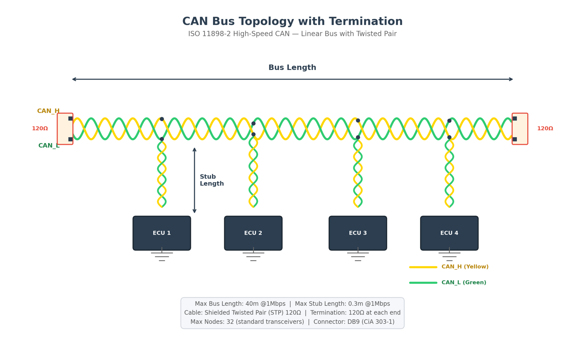
Burada $Z_0$ kablonun karakteristik empedansıdır (bükümlü çift için tipik olarak 120Ω)
CAN bus'ın her iki ucu 120Ω dirençlerle sonlandırılMALIDIR. Eksik veya hatalı sonlandırma, sinyal yansımalarına ve dolayısıyla iletişim hatalarına neden olur. Tüm düğümler bağlantısı kesildiğinde CAN_H ve CAN_L arasında ölçülen toplam bus direnci yaklaşık 60Ω olmalıdır (paralel bağlı iki adet 120Ω direnç).
Sonlandırma yerleşim seçenekleri:
- Standart sonlandırma: Bus'ın her iki ucunda 120Ω direnç
- Bölünmüş sonlandırma (Split termination): Kapasitör üzerinden toprak bağlantılı iki adet 60Ω direnç (EMI'yi iyileştirir)
- Düğüm entegre sonlandırma: Bazı ECU'lar anahtarlanabilir sonlandırma içerir
2.3 Alıcı-Verici (Transceiver) Özellikleri
CAN alıcı-verici (transceiver), CAN denetleyicisi ile fiziksel bus arasındaki arabirimdir. Denetleyiciden gelen mantıksal seviye sinyallerini diferansiyel bus sinyallerine dönüştürür ve bunun tersini yapar.
| Alıcı-Verici | Üretici | Hız | Özellikler |
|---|---|---|---|
| TJA1040 | NXP | 1 Mbps | Bekleme modu, mükemmel EMI |
| TJA1042 | NXP | 5 Mbps (CAN FD) | CAN FD destekli, düşük güç |
| TJA1051 | NXP | 5 Mbps (CAN FD) | Sessiz mod, VIO pin |
| TCAN1042 | Texas Instruments | 5 Mbps (CAN FD) | Otomotiv sınıfı, CAN FD |
| MAX3051 | Maxim | 1 Mbps | +80V arıza koruması |
| ADM3050 | Analog Devices | 1 Mbps | İzole alıcı-verici |
Temel Alıcı-Verici Spesifikasyonları
- Besleme gerilimi: Tipik olarak 5V ±%10
- Ortak mod aralığı: -2V ile +7V arası (dayanıklı uygulamalar için)
- Diferansiyel çıkış: 1.5V ile 3.0V arası (baskın)
- Yayılma gecikmesi: Tipik olarak < 100 ns
- Bekleme akımı: Tipik < 50 μA
Bir CAN alıcı-verici seçerken, gereken maksimum veri hızını, EMI gereksinimlerini, arıza koruma ihtiyaçlarını ve güç tüketimi kısıtlamalarını göz önünde bulundurun. CAN FD uygulamalarında, alıcı-vericinin daha yüksek veri hızlarını (8 Mbps'ye kadar) desteklediğinden emin olun.
Bölüm 3: Veri Bağlantı Katmanı (Veri Bağlantısı Layer)
CAN'daki Veri Bağlantı Katmanı, mesaj çerçeveleme, hakemlik (arbitration), onaylama ve hata tespitinden sorumludur. Bu katman, CAN denetleyici donanımında uygulanır ve ana mikrodenetleyici tarafından yapılandırıldıktan sonra otomatik olarak çalışır.
3.1 Çerçeve Formatları (Frame Formats)
CAN, iletişim için dört farklı çerçeve türü tanımlar:
- Veri Çerçevesi (Data Frame): Vericiden alıcılara gerçek veriyi taşır
- Uzak Çerçeve (Remote Frame): Belirli bir tanımlayıcının iletimini talep eder
- Hata Çerçevesi (Error Frame): Bir düğüm hata algıladığında iletilir
- Aşırı Yük Çerçevesi (Overload Frame): Veri/uzak çerçeveler arasında ek gecikme sağlar
CAN, iki tanımlayıcı formatını destekler:
| Özellik | CAN 2.0A (Standart) | CAN 2.0B (Genişletilmiş) |
|---|---|---|
| Tanımlayıcı Uzunluğu | 11 bit | 29 bit |
| Maksimum Tanımlayıcı Sayısı | 2,048 | 536,870,912 |
| IDE Bit Değeri | Baskın (0) | Çekinik (1) |
| Çerçeve Uzunluğu (maks. veri) | 108 bit | 128 bit |
| Uyumluluk | Sadece CAN 2.0A | CAN 2.0A ve 2.0B |
| Yaygın Kullanım | Endüstriyel CANopen | Otomotiv J1939 |
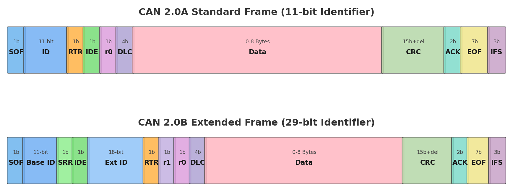
Standart CAN 2.0A Veri Çerçevesi Alanları
| Alan | Bit | Açıklama |
|---|---|---|
| SOF | 1 | Çerçeve Başlangıcı (SOF) - baskın bit çerçeve başlangıcını işaretler |
| Tanımlayıcı | 11 | Benzersiz mesaj tanımlayıcısı (önceliği belirler) |
| RTR | 1 | Uzak İletim İsteği (veri çerçevesi için baskın) |
| IDE | 1 | Tanımlayıcı Uzantısı (standart çerçeve için baskın) |
| r0 | 1 | Ayrılmış bit (baskın olmalıdır) |
| DLC | 4 | Veri Uzunluk Kodu (0-8 bayt) |
| Veri Alanı | 0-64 | Gerçek veri yükü (0-8 bayt) |
| CRC | 15 | Döngüsel Artıklık Denetimi |
| CRC Sınırlayıcısı | 1 | Çekinik bit |
| ACK Yuvası | 1 | CRC uygunsa alıcı baskın (dominant) ile yazar |
| ACK Sınırlayıcısı | 1 | Çekinik bit |
| EOF | 7 | Çerçeve Sonu (7 çekinik bit) |
| IFS | 3 | Çerçeveler Arası Boşluk (minimum 3 çekinik bit) |
3.2 Bit Zamanlaması (Bit Timing)
CAN bit zamanlaması, doğru senkronizasyon ve güvenilir iletişim için kritik öneme sahiptir. Her bit süresi, örnekleme ve senkronizasyona izin vermek üzere segmentlere ayrılır.

Bit süresi aşağıdaki segmentlerden oluşur:
- SYNC_SEG: Senkronizasyon segmenti (1 Zaman Kuantumu) - kenar hizalaması için kullanılır
- BS1 (Bit Segment 1): PROP_SEG ve PHASE_SEG1'i içerir - örnekleme noktası konumunu tanımlar
- BS2 (Bit Segment 2): PHASE_SEG2 - örnekleme noktası sonrası faz tamponu sağlar
Burada $t_q$ (Time Quantum) = $2 \times (BRP + 1) / f_{CAN\_CLK}$
| Baud Hızı | Toplam TQ | Örnekleme Noktası | SJW |
|---|---|---|---|
| 125 kbps | 16 | 75-87.5% | 1-2 TQ |
| 250 kbps | 16 | 75-87.5% | 1-2 TQ |
| 500 kbps | 16 | 80-87.5% | 1-2 TQ |
| 1 Mbps | 8-16 | 80-87.5% | 1 TQ |
Örnekleme noktası bit süresinin %75-87,5'inde konumlandırılmalıdır. Daha geç bir örnekleme noktası (%87,5'e yakın) yayılma gecikmeleri için daha iyi tolerans sağlarken, daha erken bir örnekleme noktası (%75'e yakın) faz hataları için daha iyi tolerans sağlar.
3.3 Senkronizasyon
CAN, tüm düğümler arasında bit zamanlamasını korumak için iki tür senkronizasyon kullanır:
Sert Senkronizasyon (Hard Synchronization)
Çerçeve başlangıcında (SOF) bir kez gerçekleşir. Tüm düğümler, SOF'un çekinikten baskına geçiş kenarı algılandığında dahili bit zamanlamalarını yeniden başlatır.
Yeniden Senkronizasyon (Resynchronization)
Çerçeve sırasında SYNC_SEG dışında bir kenar algılandığında gerçekleşir. PHASE_SEG1 uzatılır veya PHASE_SEG2, SJW (Senkronizasyon Atlama Genişliği) zaman kuantumuna kadar kısaltılır.
Tipik SJW değeri: 1-2 Zaman Kuantumu
Yeniden senkronizasyon mekanizması, CAN'ın düğümler arası saat kaymasını telafi etmesine olanak tanır. Uygun yapılandırma ile CAN, 10 TQ'luk bir bit süresi için %1,58'e kadar osilatör toleranslarını tolere edebilir.
Bölüm 4: Hata Yönetimi (Error Handling)
CAN, yüksek güvenilirliğine katkıda bulunan kapsamlı hata tespit ve yönetim mekanizmaları içerir. Protokol, 4,7 × 10⁻¹¹'den az kalan hata olasılığı elde ederek güvenlik kritik uygulamalar için uygun hale gelir.
4.1 Hata Türleri
CAN, tespit edilebilecek beş hata türü tanımlar:
| Hata Türü | Tespit Yöntemi | Açıklama |
|---|---|---|
| Bit Hatası | Verici izleme | Verici, bus seviyesini izler ve gönderilen bit ile karşılaştırır |
| Dolgu Hatası (Stuff Error) | Bit doldurma kuralı | Aynı polaritede 5'ten fazla ardışık bit tespit edildi |
| CRC Hatası | CRC kontrolü | Hesaplanan CRC, alınan CRC ile eşleşmiyor |
| Biçim Hatası (Form Error) | Sabit biçimli bit alanları | CRC sınırlayıcısı, ACK sınırlayıcısı veya EOF'da ihlal |
| Onaylama Hatası (ACK Error) | ACK yuvası kontrolü | ACK yuvasında baskın bit tespit edilmedi |
Bit Doldurma (Bit Stuffing)
Bit doldurma, senkronizasyon için yeterli kenarların sağlanması amacıyla kullanılır. Aynı polaritede 5 ardışık bitten sonra, verici tarafından ters polaritede bir bit eklenir ve alıcı tarafından kaldırılır.
Standart 8 veri baytlı bir CAN çerçevesinde, maksimum dolgu bit sayısı 24'tür. Bu, 132 bitlik (108 + 24 dolgu biti) maksimum çerçeve boyutuna neden olur.
4.2 TEC ve REC Sayaçları
Her CAN düğümü, hata durumunu izlemek için iki hata sayacı tutar:
- İletim Hata Sayacı (TEC): Mesaj iletimi sırasındaki hataları izler
- Alım Hata Sayacı (REC): Mesaj alımı sırasındaki hataları izler
| Olay | TEC Güncellemesi | REC Güncellemesi |
|---|---|---|
| Verici hata algılar | +8 | - |
| Alıcı hata algılar | - | +1 |
| Başarılı iletim | -1 (TEC > 0 ise) | - |
| Başarılı alım | - | -1 (REC > 0 ise) |
| Baskın ACK hatası sonrası hata bayrağı | +8 | - |
4.3 Bus Durumları
TEC ve REC değerlerine göre, bir CAN düğümü üç durumdan birinde olabilir:
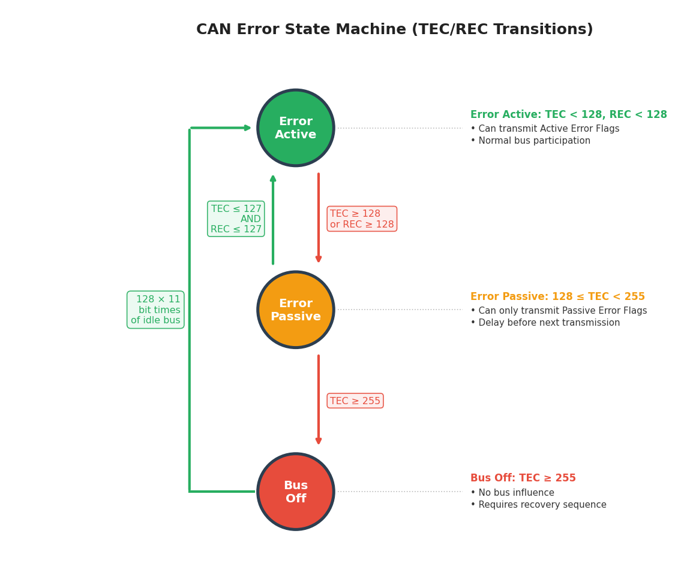
| Durum | Koşul | Davranış |
|---|---|---|
| Hata Aktif (Error Active) | TEC < 128 AND REC < 128 | Normal çalışma, Aktif Hata Bayrakları iletir |
| Hata Pasif (Error Passive) | 128 ≤ TEC < 255 OR REC ≥ 128 | Pasif Hata Bayrakları iletir, iletimden sonra 8 bitlik gecikme |
| Bus Kapalı (Bus Off) | TEC = 255 | Bus'a katılım yok, kurtarma dizisi gerektirir |
Bus Off Kurtarma
Bir düğüm Bus Off durumuna girdiğinde, Error Active durumuna dönmeden önce bir kurtarma dizisinden geçmelidir:
- Düğüm, 11 ardışık çekinik bitin 128 kez tekrarını algılar (128 × 11 bit süresi)
- TEC ve REC sıfıra resetlenir
- Düğüm, Error Active durumuna döner
Bus Off durumuna giren bir düğüm ciddi bir soruna işaret eder — ya donanım arızası, hatalı bit zamanlama yapılandırması veya şiddetli bus bozulmalarından biri. Otomotiv uygulamalarında, bu genellikle bir arıza teşhis kodu (DTC) tetikler ve MIL'i (Arıza Gösterge Lambası) yakabilir.
4.4 Hata Sınırlama ve Bus-Off Kurtarma
ISO 11898, hata sınırlamayı (fault confinement) arızalı bir düğümün bus'ı kalıcı olarak bozmasını önleyen mekanizma olarak tanımlar. Protokol, arızalı bir düğümü üç durum üzerinden kademeli olarak izole etmek için TEC/REC sayaçlarını (Bölüm 4.2) kullanır: Error Active → Error Passive → Bus Off. Bu kademeli yanıt, tek bir arızalı düğümün tüm ağı kilitlememesini sağlar.
Kurtarma Süresi Hesaplama
Bir düğüm Bus Off durumuna girdiğinde, Error Active'e dönmeden önce 11 ardışık çekinik bitin 128 kez tekrarını beklemelidir. Minimum kurtarma süresi, bus veri hızına bağlıdır:
| Veri Hızı | Bit Süresi | Kurtarma Bitleri (128 × 11) | Minimum Kurtarma Süresi |
|---|---|---|---|
| 125 kbit/s | 8 µs | 1,408 | 11.26 ms |
| 250 kbit/s | 4 µs | 1,408 | 5.63 ms |
| 500 kbit/s | 2 µs | 1,408 | 2.82 ms |
| 1 Mbit/s | 1 µs | 1,408 | 1.41 ms |
Formül: Kurtarma Süresi = 128 × 11 × Bit Süresi. Kurtarma sırasında düğüm sessiz kalır ve yalnızca bus aktivitesini izler.
Otomatik Bus-On ve Manuel Kurtarma
128 × 11 bit kurtarma dizisini tamamladıktan sonra, düğüm bus'a otomatik olarak veya açık yazılım müdahalesiyle yeniden katılabilir:
| Özellik | Otomatik Bus-On (ABOM) | Manuel Kurtarma |
|---|---|---|
| Kurtarma Tetikleyici | 128 × 11 bit süresinden sonra otomatik | Yazılım, CAN çevre birimini açıkça yeniden başlatmalıdır |
| Kesinti Süresi | Minimum (baud hızına bağlı olarak 1,4–11,3 ms) | Uygulama yoklama aralığına bağlıdır |
| Kök Neden Analizi | Günlüğe kaydedilmezse tekrarlayan arızaları maskeleyebilir | Uygulamayı olayı işlemeye ve kaydetmeye zorlar |
| Tipik Kullanım Alanı | Üretim ECU'ları, güvenlik kritik sistemler | Geliştirme/hata ayıklama, tezgah testi |
| Risk | Hızlı yeniden giriş, tekrarlayan bus-off döngülerine neden olabilir | Kurtarma gecikirse uzun süreli iletişim kaybı |
Sürücü / HAL Yapılandırması
Çoğu CAN denetleyicisi, otomatik bus-off kurtarmayı etkinleştirmek için bir donanım kaydı (register) biti sağlar. Aşağıda yaygın yapılandırma örnekleri verilmiştir:
STM32 HAL (bxCAN / FDCAN)
/* Enable Automatic Bus-Off Management */
hcan.Init.AutoBusOff = ENABLE;
HAL_CAN_Init(&hcan);
/* For FDCAN peripherals: */
hfdcan.Init.AutoRetransmission = ENABLE;
hfdcan.Init.TransmitPause = ENABLE;
HAL_FDCAN_Init(&hfdcan);Linux SocketCAN
# Enable automatic restart after 100 ms delay
ip link set can0 type can restart-ms 100
# Manual one-shot restart
ip link set can0 type can restartAUTOSAR CanSM (CAN Durum Yöneticisi)
AUTOSAR tabanlı ECU'larda CanSM modülü, CAN denetleyici durum geçişlerini yönetir. Bus-off algılandığında CanSM, yapılandırılabilir bir kurtarma stratejisi izler:
- Seviye 1 (L1): Hızlı kurtarma —
CanSMBorTimeL1aralığıyla (tipik 10–50 ms)CanSMBorCounterL1ToL2kadar yeniden başlatma denemesi - Seviye 2 (L2): Yavaş kurtarma — L1 başarısız olursa,
CanSMBorTimeL2aralığına (tipik 100–500 ms) geçer - Kurtarma sayaçları ve zamanlamaları CanSM yapılandırma konteynerinde tanımlanır
Bir düğüm kurtarma sonrası kısa sürede tekrar tekrar Bus Off durumuna giriyorsa, bu kalıcı bir arızaya işaret eder — genellikle kablo kısa devresi, sonlandırma uyumsuzluğu veya baud hızı yapılandırma hatası. İzleme olmadan otomatik bus-on etkinleştirmek, bus'ı hata çerçeveleriyle dolduran ve tüm düğümlerin iletişimini bozan hızlı bir bus-off / kurtarma döngüsü oluşturur.
Üretimde otomatik bus-on'u (ABOM) etkinleştirin, ancak bus-off olaylarını her zaman arıza teşhis kodu (DTC) olarak kaydedin. Soğuma pencereli bir bus-off sayacı uygulayın — 1 saniye içinde 3'ten fazla bus-off meydana gelirse, otomatik kurtarmayı devre dışı bırakın ve teşhis servisleri aracılığıyla eskalasyon yapın (ör. UDS DTC 0x600110).
Bölüm 5: Ağ Topolojisi (Network Topology)
Doğru ağ topolojisi tasarımı, güvenilir CAN iletişimi için esastır. Kablolama uygulamaları, stub uzunlukları ve sonlandırma dahil olmak üzere bus'ın fiziksel düzeni, sinyal bütünlüğünü ve sistem dayanıklılığını doğrudan etkiler.
5.1 Bus Kablolama
CAN, tüm düğümlerin tek bir iletim hattına bağlandığı doğrusal (lineer) bus topolojisi kullanır. Bus, elektromanyetik paraziti en aza indirmek için bükümlü çift halinde döşenmesi gereken iki telden (CAN_H ve CAN_L) oluşur.
Temel kablolama yönergeleri:
- Karakteristik empedansı 120Ω olan bükümlü çift kablo kullanın
- Bus boyunca tutarlı tel kalınlığını koruyun (tipik olarak 0,25-0,5 mm² / 22-24 AWG)
- CAN kablolarını yüksek akımlı güç hatlarından uzakta yönlendirin
- Yüksek EMI ortamlarında ekranlı kablo kullanın
- Ekranı yalnızca bir uçtan topraklayın (tipik olarak tanılama konektöründe)
| Veri Hızı | Maksimum Bus Uzunluğu | Maksimum Stub Uzunluğu |
|---|---|---|
| 1 Mbps | 40 metre | 0,3 metre |
| 500 kbps | 100 metre | 0,6 metre |
| 250 kbps | 250 metre | 1,5 metre |
| 125 kbps | 500 metre | 3,0 metre |
| 50 kbps | 1000 metre | 6,0 metre |
| 20 kbps | 2500 metre | 15,0 metre |
Burada $L_{max}$ metre cinsindendir ve Baud Rate bit/saniye cinsindendir
5.2 Stub Uzunlukları
Stub'lar, ana bus'tan bireysel düğümlere olan bağlantılardır. Uzun stub'lar, sinyal yansımalarına neden olan empedans uyumsuzlukları yaratır ve sinyal kalitesini düşürür.
Stub uzunlukları mümkün olduğunca kısa tutulmalıdır. Genel kural olarak, stub uzunluğu 1 Mbps'de 0,3 metreyi aşmamalıdır. Veri hızı düştükçe maksimum stub uzunluğu orantılı olarak artar.
Daha uzun stub veya drop-line topolojisi gerektiren uygulamalar için şunları değerlendirin:
- Düşük hızlı CAN (ISO 11898-3): Daha uzun stub'larla yıldız topolojisini destekler
- CAN tekrarlayıcılar: Bus uzunluğunu uzatır ve segmentleri izole eder
- Optik izolasyon: Segmentler arasında galvanik izolasyon sağlar
5.3 Kablo Spesifikasyonları
| Parametre | Spesifikasyon | Notlar |
|---|---|---|
| Karakteristik Empedans | 120Ω ± 12Ω | 1 MHz'de |
| İletken Kesiti | 0,25-0,5 mm² (22-24 AWG) | Akım gereksinimlerine göre |
| Bükülme Oranı | Metre başına 20-50 bükülme | Daha yüksek bükülme oranı = daha iyi EMI bağışıklığı |
| Yayılma Gecikmesi | < 5 ns/m | Yüksek hızlı uygulamalar için |
| Kapasitans | < 60 pF/m | İletkenler arasında |
| Yalıtım Direnci | > 1 MΩ/km | At 500V DC |
CAN uygulamaları için yaygın kablo türleri:
- UTP (Ekransız Bükümlü Çift): Uygun maliyetli, kontrollü ortamlar için uygundur
- STP (Ekranlı Bükümlü Çift): Daha iyi EMI koruması, otomotiv için önerilir
- Çift ekranlı: Zorlu ortamlar için maksimum EMI koruması
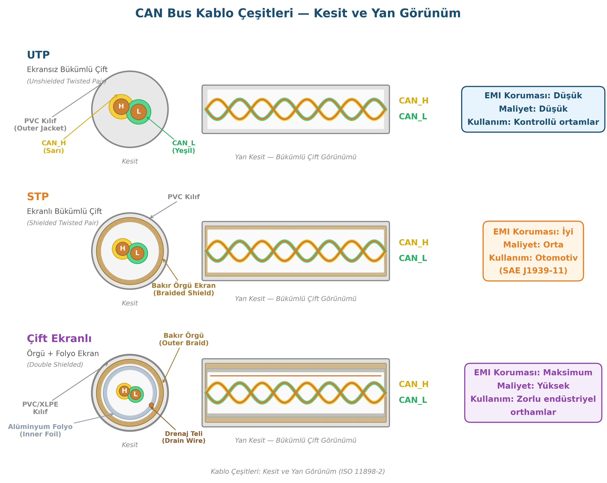
Otomotiv uygulamaları tipik olarak SAE J1939/11 veya SAE J2284 spesifikasyonlarını karşılayan kablolar kullanır. Bunlar, -40°C ile +125°C otomotiv sıcaklık aralığı için tasarlanmış PVC veya XLPE yalıtımlı 120Ω karakteristik empedansa sahip bükümlü çifti belirtir.
Bölüm 6: SAE J1939 Protokol Yığını
SAE J1939, ticari araçlar (kamyonlar, otobüsler, tarım makineleri, inşaat ekipmanları) için standart iletişim protokolüdür. CAN 2.0B üzerine inşa edilen J1939, standartlaştırılmış mesaj formatları, ağ yönetimi ve tanılama prosedürleri içeren eksiksiz bir uygulama katmanı tanımlar.
6.1 29-bit Tanımlayıcı (Tanımlayıcı) Yapısı
J1939, yalnızca 29 bitlik tanımlayıcıya sahip CAN 2.0B genişletilmiş çerçeve formatını kullanır. Bu tanımlayıcı, öncelik, parametre grubu tanımlama ve kaynak adresleme sağlayacak şekilde yapılandırılmıştır.

| Alan | Bit | Açıklama |
|---|---|---|
| Öncelik (P) | 3 | Mesaj önceliği (0=en yüksek, 7=en düşük) |
| Genişletilmiş Veri Sayfası (EDP) | 1 | Ayrılmış (0 olmalıdır) |
| Veri Sayfası (DP) | 1 | PGN aralığını genişletir (0 veya 1) |
| PDU Formatı (PF) | 8 | PDU türünü belirler (PDU1 veya PDU2) |
| PDU Özgü (PS) | 8 | Hedef adresi (PDU1) veya Grup Uzantısı (PDU2) |
| Kaynak Adresi (SA) | 8 | İleten düğümün adresi (0-253) |
6.2 PGN Yapısı
Parametre Grup Numarası (PGN), ilgili parametrelerin bir grubunu benzersiz şekilde tanımlar. PGN'ler, DP, PF ve PS alanlarından türetilen 18 bitlik değerlerdir.
J1939'da iki PDU türü vardır:
| Tür | PF Aralığı | PS Alanı | İletişim |
|---|---|---|---|
| PDU1 (Hedefe Özgü) | 0-239 (0x00-0xEF) | Hedef Adresi | Noktadan noktaya |
| PDU2 (Genel) | 240-255 (0xF0-0xFF) | Grup Uzantısı | Yayın |
PGN Aralık Tahsisi
PGN adres alanı, SAE tanımlı ve üretici tarafından atanabilir aralıklar arasında bölünmüştür ve Veri Sayfası (DP) biti ile PDU formatına göre düzenlenmiştir:
| DP | PGN Aralığı (hex) | PGN Sayısı | SAE veya Üretici Atamalı | İletişim Türü |
|---|---|---|---|---|
| 0 | 000000 – 00EE00 | 239 | SAE | PDU1: Noktadan Noktaya |
| 0 | 00EF00 | 1 | MF | PDU1: Noktadan Noktaya |
| 0 | 00F000 – 00FEFF | 3840 | SAE | PDU2: Yayın |
| 0 | 00FF00 – 00FFFF | 256 | MF | PDU2: Yayın |
| 1 | 010000 – 01EE00 | 239 | SAE | PDU1: Noktadan Noktaya |
| 1 | 01EF00 | 1 | MF | PDU1: Noktadan Noktaya |
| 1 | 01F000 – 01FEFF | 3840 | SAE | PDU2: Yayın |
| 1 | 01FF00 – 01FFFF | 256 | MF | PDU2: Yayın |
SAE tarafından atanan PGN'ler SAE J1939-71'de tanımlanmıştır ve tüm J1939 ağlarında standartlaştırılmış anlamlara sahiptir. Üreticiye özgü (MF) PGN'ler (her Veri Sayfası için PGN 0xEF00 ve 0xFF00–0xFFFF aralığı) tescilli kullanım için mevcuttur. OEM'ler ve ECU üreticileri, standartlaştırılmış PGN'lerle çakışmadan özel parametreler için MF PGN'leri kullanabilir. Toplam adres alanı her iki Veri Sayfası'de 8.672 PGN sağlar.
Yaygın J1939 PGN'leri şunlardır:
| PGN | Ad | Açıklama | Hız |
|---|---|---|---|
| 61444 (0x00F004) | Elektronik Motor Kontrolörü 1 (EEC1) | Motor hızı, tork | 10 ms |
| 61443 (0x00F003) | Elektronik Motor Kontrolörü 2 (EEC2) | Gaz pedalı, yol hızı | 50 ms |
| 65248 (0x00FF00) | Araç Mesafesi | Kilometre sayacı, yol mesafesi | 1 s |
| 65265 (0x00FF07) | Hız Sabitleme/Araç Hızı | Hız sabitleme durumu | 100 ms |
| 65262 (0x00FF04) | Motor Sıcaklığı 1 | Soğutma suyu, yakıt sıcaklıkları | 1 s |
| 65263 (0x00FF05) | Motor Sıvı Seviyesi/Basıncı 1 | Yağ basıncı, soğutma suyu seviyesi | 500 ms |
| 59904 (0x00EA00) | PGN Talebi | Belirli PGN için istek | İstek üzerine |
SPN — Şüpheli Parametre Numarası
Her PGN, bir veya daha fazla Suspect Parameter Number (SPN) içerir — 8 baytlık veri alanındaki bireysel sinyallerdir. SPN'ler her parametre için başlangıç pozisyonunu, uzunluğu, çözünürlüğü, ofseti ve birimi tanımlar. Fiziksel değer, ham veri baytlarından şu formülle hesaplanır:
Örnek — Motor Hızı (PGN 61444 / EEC1 içinde SPN 190):
| Özellik | Değer |
|---|---|
| PGN | 61444 (0x00F004) — Elektronik Motor Kontrolörü 1 |
| SPN | 190 — Motor Hızı |
| Başlangıç Bayt.Bit | 4.1 (bayt 4, bit 1 — sıfır indeksli) |
| Uzunluk | 16 bit (2 bayt) |
| Çözünürlük | 0,125 rpm/bit |
| Ofset | 0 rpm |
| Aralık | 0 – 8031.875 rpm |
Ham baytlar FF FF FF 68 13 FF FF FF (hex) için, bayt 4–5 çıkarılır: 0x1368 = 4968 ondalık. Fiziksel değer: 4968 × 0.125 = 621 rpm.
J1939'da 0xFF (tümü bir) olarak ayarlanmış veri baytları "Kullanılamaz" veya geçersiz veri anlamına gelir. SPN'ler çözümlenirken, tamamen 0xFF baytlarından oluşan ham değerler analizden çıkarılmalıdır. 2 baytlık SPN'lerde 0xFFFF parametrenin kullanılamaz olduğunu; 1 baytlık SPN'lerde 0xFF geçersiz olduğunu gösterir.
J1939 Talep Mesajları
Tüm PGN'ler periyodik olarak yayınlanmaz. Bazı parametreler PGN 59904 (0xEA00) — PGN Talebi kullanılarak açıkça talep edilmelidir. Talep eden düğüm, almak istediği PGN'yi içeren 3 baytlık bir veri alanı gönderir:
| Byte | İçerik | Açıklama |
|---|---|---|
| 1 | PGN[7:0] | Talep edilen PGN'nin en düşük anlamlı baytı |
| 2 | PGN[15:8] | Talep edilen PGN'nin orta baytı |
| 3 | PGN[23:16] | Talep edilen PGN'nin en yüksek anlamlı baytı |
6.3 Adres Talep Etme (Address Claiming)
J1939, ağdaki adres çakışmalarını çözmek için dinamik bir adres talep prosedürü kullanır. Her düğümün tercih ettiği bir NAME ve adresi vardır.
64-bit NAME yapısı:
| Alan | Bit | Açıklama |
|---|---|---|
| Rastgele Adres Yetenekli | 1 | Düğüm rastgele adres kullanabilir |
| Endüstri Grubu | 3 | Endüstri sınıflandırması (0-7) |
| Araç Sistemi Örneği | 4 | Araç sisteminin örneği |
| Araç Sistemi | 7 | Araç sistemi sınıflandırması |
| Ayrılmış | 1 | Ayrılmış (0) |
| İşlev | 8 | Fonksiyon kodu (ör. motor, şanzıman) |
| Fonksiyon Örneği | 5 | Fonksiyonun örneği |
| ECU Örneği | 3 | Fonksiyon içindeki ECU örneği |
| Üretici Kodu | 11 | SAE tarafından atanan üretici kimliği |
| Kimlik Numarası | 21 | Benzersiz seri numarası |
Adres Talep Akışı:
- Açılış → Adres Talep Edildi Gönder
- Adres Çakışması Kontrolü
- Çakışma Yok → Normal Çalışma
- Çakışma Algılandı → NAME değerlerini karşılaştır
- Yüksek NAME kazanır → Adres Talep Et
- Düşük NAME kaybeder → Talep Edilemez Gönder, Komut Bekle
İki düğüm aynı adresi talep etmeye çalıştığında, sayısal olarak daha yüksek NAME değerine sahip düğüm hakemliği kazanır. Kaybeden düğüm ya farklı bir adres talep etmeli ya da "Cannot Claim" durumuna girmelidir.
6.4 Fiziksel Katman ve Konnektör Spesifikasyonları
J1939 fiziksel katmanı, ECU'ların CAN bus'a bağlanması için elektriksel ve mekanik özellikleri tanımlar. SAE J1939-13 standardı, ağır hizmet araçlarında J1939 ağlarına erişim için birincil standartlaştırılmış arayüz olan 9 pinli Deutsch HD10-9-1939 harici tanı konnektörünü belirtir.

Tip 1 (Siyah) ve Tip 2 (Yeşil) Konnektörler
J1939 Deutsch konnektörü iki varyanta sahiptir:
- Tip 1 (Siyah gövde): J1939-11 tarafından tanımlanan orijinal konnektör, 250 kbit/s'de çalışır. 1990'ların ortasından beri ağır hizmet araçlarında standart konnektör olmuştur.
- Tip 2 (Yeşil gövde): J1939-14 standardı için 2013–14 civarında tanıtılmış olup 500 kbit/s ağları destekler. Yeşil renk görsel ayrım sağlar.
Tip 2 dişi konnektörler fiziksel olarak geriye uyumludur — hem Tip 1 hem de Tip 2 erkek soketlere uyar. Ancak Tip 1 dişi konnektörler yalnızca Tip 1 erkek soketlere uyar. Fiziksel engelleme mekanizması, Tip 2 erkek konnektörlerde Pin F için daha küçük bir deliktir; bu, eski 250K donanımın 500K ağlara bağlanmasını önler.
Çoklu J1939 Ağları
Birçok modern ağır hizmet aracında 2 veya daha fazla paralel CAN bus ağı bulunur. 9 pinli Deutsch konnektörü, farklı pin çiftleri aracılığıyla üç ayrı CAN ağına erişim sağlayabilir:
| Ağ | CAN_H | CAN_L | Tipik Kullanım |
|---|---|---|---|
| CAN 1 (Birincil) | Pin C | Pin D | Ana J1939 araç veriyolu — motor, şanzıman, frenler |
| CAN 2 (İkincil) | Pin F | Pin G | Gövde elektroniği, ISOBUS veya eski J1708 seri |
| CAN 3 (OEM) | Pin H | Pin J | OEM'e özgü ağ (üretici tanımlı) |
Yalnızca Pin C ve Pin D'ye (standart çift) bağlanmak, mevcut tüm J1939 verilerine erişimi garanti etmez. Araç birden fazla CAN ağı kullanıyorsa, kritik parametreler yalnızca ikincil (F/G) veya OEM'e özgü (H/J) bus üzerinde mevcut olabilir. Veri kaydederken, her iki ağdan aynı anda veri yakalamak için DB9-J1939 adaptör kablosu ile çift kanallı bir CAN logger kullanın.
Fiziksel Katman Standartları
Üç temel SAE standardı, çeşitli araç ortamları için optimize edilmiş farklı fiziksel katman yapılandırmalarını belirtir:
J1939-11, bus'ın her iki ucunda 120 Ω sonlandırma dirençleri bulunan ekranlı bükümlü çift kablo belirten orijinal fiziksel katman standardıdır. Maksimum 40 m bus uzunluğu ve 1 m'ye kadar stub uzunlukları ile 250 kbit/s'de 30'a kadar ECU destekler.
J1939-15, daha hafif uygulamalar için düşük maliyetli bir alternatif sunar. Ekransız bükümlü çift kablo kullanır ve daha uzun stub uzunluklarına (3 m'ye kadar) izin verir, ancak düşük gürültü bağışıklığı nedeniyle ağı 10 ECU ile sınırlar.
J1939-14, 500 kbit/s veri hızı ile daha yüksek bant genişliği uygulamalarını hedefler. Hem ekranlı hem de ekransız kablolama kabul eder, 30'a kadar ECU destekler ve kullanılan kablo türüne bağlı olarak 40 m ile 56,4 m arasında bus uzunluklarına izin verir.
6.5 J1939 Doküman Yapısı ve İlgili Standartlar
SAE J1939 standart paketi, her biri protokolün belirli bir yönünü kapsayan numaralı belgeler halinde düzenlenmiştir. Aşağıdaki şekil, protokol katmanına göre düzenlenmiş tam belge ailesini göstermektedir:

J1939 Tabanlı Standartlar
J1939 protokolü, SAE'nin konsorsiyum yaklaşımı aracılığıyla birçok sektöre özgü iletişim standardının temelini oluşturur:
| Standart | Endüstri | J1939 ile İlişki |
|---|---|---|
| ISO 11783 (ISOBUS) | Tarım | J1939'u traktörler ve ekipmanlar için genişletir; görev denetleyicisi, sanal ECU ekler |
| NMEA 2000 | Denizcilik | J1939'u cihaz sınıfı tanımlarıyla denizcilik elektroniğine uyarlar |
| ISO 11992 | Kamyon-Römork | ISO 7638 konnektörü aracılığıyla kamyon ve römork arasında J1939 tabanlı iletişim |
| FMS Standardı | Filo Yönetimi | Telematik için standart gateway arayüzü üzerinden sunulan J1939 PGN alt kümesi |
| MilCAN | Askeri | Deterministik zamanlama gereksinimleri ile askeri uyarlama |
SAE, J1939 temel standardını sektör kuruluşlarına lisanslar ve bu kuruluşlar onu kendi özel alanları için genişletir. Bu konsorsiyum yaklaşımı, temel J1939 standardındaki gelişmelerin (ör. J1939-22 aracılığıyla CAN FD desteği) tüm türetilmiş standartlara yayılmasını sağlarken, her sektörün alana özel PGN'ler, cihaz türleri ve uygulama profilleri tanımlamasına olanak tanır.
6.6 J1939 İstek Mekanizması (Request Mechanism)
J1939, PGN 59904 (0xEA00) — PGN Talebi kullanarak genel amaçlı bir talep mekanizması sağlar. Herhangi bir düğüm, belirli bir ECU'dan (hedefe özel) veya bus'taki tüm ECU'lardan (global talep) herhangi bir PGN talep edebilir. Bu, periyodik olarak yayınlanmayan parametrelerin alınması için gereklidir.
Talep ve Yayın Modeli
J1939 iki iletişim modeli kullanır:
| Model | Mekanizma | Örnekler |
|---|---|---|
| Periyodik Yayın | ECU sabit aralıklarla PGN gönderir (10 ms – 10 s) | EEC1 (Motor Hızı, 10 ms), CCVS1 (Araç Hızı, 100 ms) |
| Talep Üzerine | PGN yalnızca PGN 59904 ile açıkça talep edildiğinde gönderilir | Yazılım Tanımlama, Bileşen Kimliği, ECU Tanımlama |
| Olay Tetiklemeli | Belirli bir koşul oluştuğunda PGN gönderilir | DM1 (aktif DTC algılandı), Adres Talep Edildi |
Talep Mesajı Yapısı
PGN Talebi, talep edilen PGN'yi içeren 3 baytlık bir veri alanı kullanır ve little-endian bayt sırasıyla gönderilir:
PGN Talebi (0xEA00) — CAN ID: 0x18EAFF[SA] (global) or 0x18EA[DA][SA] (destination-specific)
CAN ID breakdown:
Priority: 6 (0x18 = 0b110...)
PGN: 0xEA00 (59904) — PGN Talebi
DA: 0xFF (global) or specific destination address
SA: Kaynak address of requester
Data (3 bytes):
Byte 1: PGN[7:0] — LSB of requested PGN
Byte 2: PGN[15:8] — Middle byte
Byte 3: PGN[23:16] — MSB of requested PGNTalep/Yanıt Örneği: Motor Hızı Talebi (EEC1)
Step 1 — Service Tool (SA=0xF9) requests PGN 61444 from Engine ECU (DA=0x00):
CAN ID: 0x18EA00F9 Data: [04 F0 00]
│ │ └─ PGN MSB = 0x00
│ └──── PGN mid = 0xF0
└─────── PGN LSB = 0x04 → PGN = 0x00F004 = 61444
Step 2 — Engine ECU (SA=0x00) responds with EEC1:
CAN ID: 0x0CF00400 Data: [FF FF FF 68 13 FF FF FF]
│ └─ Byte 5 = 0x13
└──── Byte 4 = 0x68
Engine Speed (SPN 190) = 0x1368 × 0.125 = 621.0 rpmWhen DA = 0xFF, talep globaldir — talep edilen PGN'yi destekleyen tüm ECU'lar yanıt verir. Bu, keşif için kullanışlıdır (ör. tüm düğümlerden Address Claimed talep etme). DA belirli bir adres olduğunda, yalnızca o ECU yanıt verir. Taşıma Protocol mesajları (>8 bayt) için yanıt veren ECU, çok paketli yanıtı teslim etmek için bir TP.CM_RTS/CTS veya BAM dizisi başlatır.
6.7 Tanımlama İstekleri (Identification Requests)
J1939, ECU tanımlaması için birkaç standart PGN tanımlar. Bunlar genellikle yazılım sürümü, donanım kimliği ve bileşen bilgisi sağlayan talep üzerine PGN'lerdir. Filo yönetimi, tanı ve mevzuat uyumluluğu için gereklidirler.
Yazılım Tanımlama (PGN 65242 / 0xFEDA)
ECU üzerinde yüklü yazılım sürüm(ler)ini bildirir. Bu PGN, bir araç filosundaki ECU firmware sürümlerini doğrulamak için tanı araçları ve filo yönetim sistemleri tarafından kullanılır.
| Byte | SPN | Açıklama |
|---|---|---|
| 1 | SPN 965 | Yazılım tanımlama alanlarının sayısı |
| 2–n | SPN 234 | Yazılım tanımlama (ASCII dizesi, birden fazla sürüm için * ile ayrılmış) |
Örnek — Body Controller'ın Yazılım Kimliği Talebi:
Request: CAN ID: 0x18EA21F9 Data: [DA FE 00] ← PGN 65242 (0xFEDA)
Response: via BAM (broadcast, çünkü PGN 0xFEDA PDU2 formatıdır — PF ≥ 0xF0)
TP.CM_BAM: CAN ID: 0x18ECFF21 Data: [20 12 00 03 FF DA FE 00]
TP.DT.1: CAN ID: 0x18EBFF21 Data: [01 02 42 43 4D 5F 41 50]
TP.DT.2: CAN ID: 0x18EBFF21 Data: [02 50 5F 76 32 2E 31 2E]
TP.DT.3: CAN ID: 0x18EBFF21 Data: [03 30 2A 42 43 4D 5F 49]
Decoded: Count=2, "BCM_APP_v2.1.0*BCM_IO_v1.3"Bileşen Tanımlama (PGN 65259 / 0xFEEB)
ECU üreticisi, modeli ve seri numarasını ASCII dizileri olarak sağlar. Her alan * (yıldız) ile sınırlandırılmıştır.
| Alan | SPN | Açıklama |
|---|---|---|
| Make | SPN 586 | Bileşen üretici adı (ASCII) |
| Model | SPN 587 | Bileşen model tanımlaması (ASCII) |
| Seri Numarası | SPN 588 | Bileşen seri numarası (ASCII) |
| Ünite Numarası | SPN 233 | Sahip tarafından atanan ünite/varlık numarası (ASCII) |
Decoded Component ID example:
"BOSCH*EDC17C46*0281020567*FLEET-4821"
│ │ │ └─ Ünite Numarası (SPN 233)
│ │ └───────────── Seri Numarası (SPN 588)
│ └──────────────────────── Model (SPN 587)
└─────────────────────────────── Make (SPN 586)ECU Tanımlama (PGN 64965 / 0xFDC5)
ECU parça numarası ve ECU tipi bilgisi sağlar. Fiziksel bileşeni tanımlayan Bileşen Tanımlama'ın aksine, ECU Tanımlama servis ve değiştirme için kullanılan üreticinin parça ve tip kodlarını sağlar.
| Alan | SPN | Açıklama |
|---|---|---|
| ECU Parça Numarası | SPN 2901 | ECU için üretici parça numarası (ASCII) |
| ECU Seri Numarası | SPN 2902 | ECU birimi için benzersiz seri numarası (ASCII) |
| ECU Konumu | SPN 2903 | Fiziksel kurulum yeri açıklaması (ASCII) |
| ECU Türü | SPN 2904 | ECU fonksiyonel türü (ASCII) |
Araç Tanımlama (PGN 65260 / 0xFEEC)
Araç Kimlik Numarasını (VIN) — 17 karakterlik bir ASCII dizisi olarak yayınlar. Bu PGN, araç gateway veya gövde kontrol ünitesi tarafından yayınlanır ve tanı ile filo yönetimi bağlamlarında aracı tanımlamak için kullanılır.
PGN 65260 (0xFEEC) — Araç Tanımlama:
SPN 237: Araç Tanımlama Number (VIN)
Data: 17-byte ASCII string (e.g., "WDB9634031L123456")
Transmitted via BAM (requires 3 TP.DT packets)Özet: Yaygın Tanımlama PGN'leri
| PGN | Hex | Ad | Temel SPN'ler | Tipik Boyut |
|---|---|---|---|---|
| 65242 | 0xFEDA | Yazılım Tanımlama | SPN 234, 965 | Değişken (BAM) |
| 65259 | 0xFEEB | Bileşen Tanımlama | SPN 586, 587, 588, 233 | Değişken (BAM) |
| 64965 | 0xFDC5 | ECU Tanımlama | SPN 2901–2904 | Değişken (BAM) |
| 65260 | 0xFEEC | Araç Tanımlama | SPN 237 (VIN) | 17 bayt (BAM) |
| 65243 | 0xFEDB | Kalibrasyon Tanımlama | SPN 1634, 1635 | Değişken (BAM) |
Tüm tanımlama PGN'leri değişken uzunluklu ASCII verisi içerir ve genellikle 8 baytı aşar. Bir talebe yanıt verirken, ECU global yanıtlar için BAM (Yayın Duyuru Mesajı) taşıma protokolünü veya hedefe özel yanıtlar için RTS/CTS kullanır. Tanı araçları, bu çok paketli yanıtları almak için J1939 Taşıma Protokolünü (bkz. Bölüm 7) uygulamalıdır.
Bölüm 7: J1939 Taşıma Protokolü (Taşıma Protocol)
CAN çerçeveleri 8 veri baytı ile sınırlı olduğundan, J1939 daha büyük mesajların iletimi için bir Taşıma Protokolü (TP) tanımlar. Taşıma protokolü iki modu destekler: noktadan noktaya iletişim için Bağlantı Modu (CM) ve global yayınlar için Yayın Duyuru Mesajı (BAM).
7.1 TP.CM ve TP.DT
Bağlantı Modu taşıma protokolü iki PGN kullanır:
- TP.CM (PGN 60416): Taşıma Protokolü Bağlantı Yönetimi - bağlantı kurulumunu kontrol eder
- TP.DT (PGN 60160): Taşıma Protokolü Veri Aktarımı - gerçek veri paketlerini taşır
TP.CM Kontrol Baytları
| Değer | Ad | Açıklama |
|---|---|---|
| 16 (0x10) | RTS | Gönderme Talebi - bağlantıyı başlatır |
| 17 (0x11) | CTS | Göndermeye Hazır - RTS'yi onaylar |
| 19 (0x13) | Mesaj Sonu Onayı | Tam alımı onaylar |
| 255 (0xFF) | İptal | Bağlantıyı iptal eder |
| 32 (0x20) | BAM | Yayın Duyuru Mesajı |
RTS Mesaj Formatı (TP.CM)
Byte 0: Control Byte = 0x10 (RTS)
Byte 1-2: Total message size (bytes) - LSB first
Byte 3: Total number of packets
Byte 4: Ayrılmış (0xFF)
Byte 5-7: PGN of requested message - LSB firstCTS Mesaj Formatı (TP.CM)
Byte 0: Control Byte = 0x11 (CTS)
Byte 1: Number of packets that can be sent
Byte 2: Next packet number to be sent
Byte 3-4: Ayrılmış (0xFFFF)
Byte 5-7: PGN - LSB firstTP.DT Veri Paketi Formatı
Byte 0: Sequence number (1-255)
Byte 1-7: Data (up to 7 bytes per packet)7.2 BAM Protokolü
Yayın Duyuru Mesajı (BAM) protokolü, bağlantı yönetimi gerekmediği global yayınlar için kullanılır. İleten düğüm mesajı duyurur ve ardından tüm veri paketlerini yayınlar.
BAM Mesaj Formatı (TP.CM)
Byte 0: Control Byte = 0x20 (BAM)
Byte 1-2: Total message size (bytes) - LSB first
Byte 3: Total number of packets
Byte 4: Ayrılmış (0xFF)
Byte 5-7: PGN of broadcast message - LSB firstBAM, akış kontrolü veya onaylama sağlamaz. Verici, alıcı kapasitesine bakılmaksızın tüm paketleri 50-200 ms aralıklarla gönderir. BAM, 1785 bayt (255 paket × 7 bayt) ile sınırlıdır.
7.3 Çoklu Paket Mesajları (Multi-packet)
Taşıma protokolü, 255 veri paketine kadar kullanarak 1785 bayta kadar mesajları işleyebilir. Her TP.DT çerçevesi bir sıra numarası ve en fazla 7 veri baytı taşır.
Maksimum mesaj boyutu: 255 × 7 = 1785 bayt
Örnek: 100 baytlık bir mesajın iletilmesi
1. Send TP.CM RTS:
- Total size: 100 bytes
- Number of packets: ceil(100/7) = 15
- PGN: 0x00FF00 (example)
2. Receive TP.CM CTS:
- Number of packets allowed: 1-255
- Next packet: 1
3. Send TP.DT packets 1-15:
- Each packet: 7 bytes (except last may have less)
- Packet 15: only 2 bytes (100 - 14×7 = 2)
4. Receive TP.CM Mesaj Sonu OnayıBağlantı Modu Taşıma Protokolü Dizisi:
- Gönderici → Alıcı: TP.CM RTS (Gönderme Talebi)
- Alıcı → Gönderici: TP.CM CTS (Göndermeye Hazır)
- Gönderici → Alıcı: TP.DT #1 (Veri Aktarım Paketi 1)
- Gönderici → Alıcı: TP.DT #2 (Veri Aktarım Paketi 2)
- Tüm paketler gönderilene kadar devam...
- Receiver → Sender: TP.CM EOM (Mesaj Sonu Onayı)

RTS/CTS Zaman Aşımı Parametreleri
J1939-21 standardı, RTS/CTS el sıkışmasının her aşaması için katı zaman aşımı değerleri tanımlar. Bu zaman aşımlarının ihlali bağlantının iptaline neden olur:
| Zaman Aşımı | Değer | İzleyen | Açıklama |
|---|---|---|---|
| T1 | 750 ms | Alıcı | Ardışık TP.DT paketleri arasındaki maksimum bekleme |
| T2 | 1250 ms | Alıcı | CTS gönderdikten sonra ilk TP.DT'nin gelmesi için maksimum bekleme süresi |
| T3 | 1250 ms | Gönderici | RTS veya son TP.DT gönderdikten sonra CTS yanıtı için maksimum bekleme süresi |
| T4 | 1050 ms | Gönderici | CTS(HOLD) aldıktan sonra CTS için maksimum bekleme süresi |
| Tr | 200 ms | Her ikisi | Protokol mesajları için maksimum yanıt süresi |
| Th | 500 ms | Alıcı | Bekleme zaman aşımı — alıcının göndericiden beklemesini isteyebileceği süre |
CTS BEKLEME Mekanizması
Alıcı, "paket sayısı = 0" (CTS HOLD) ile bir CTS göndererek veri aktarımını geçici olarak duraklatabilir. Bu, göndericiye bağlantıyı iptal etmeden beklemesi sinyalini verir. Alıcı bunu dahili arabellekleri dolduğunda veya işleme geçici olarak engellendiğinde kullanır. Gönderici, iptal etmeden önce yeni bir CTS için T4'e (1050 ms) kadar bekler.
BAM Sıralama Diyagramı
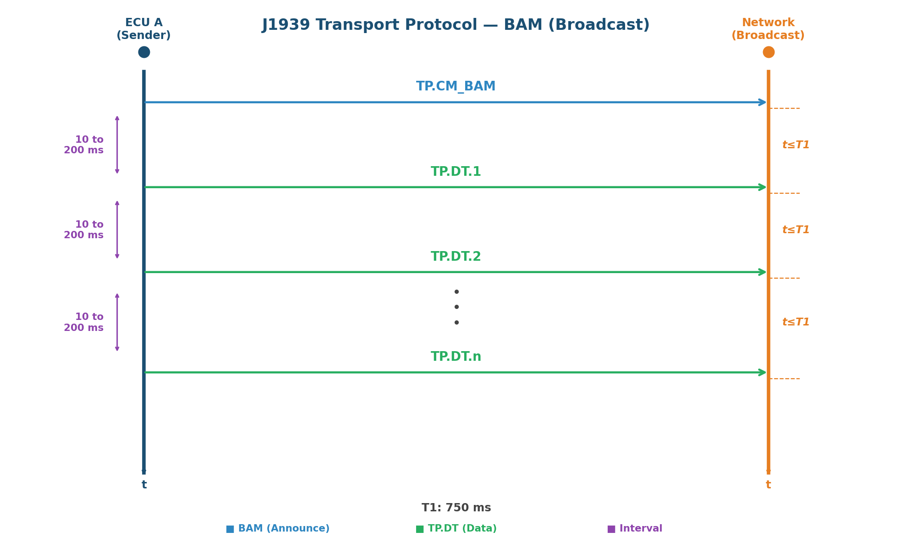
BAM modunda, verici TP.DT paketlerini 10 ile 200 ms aralıklarla gönderir. Alıcı ardışık paketler arasında T1'i (750 ms) izler — T1 içinde paket gelmezse aktarım başarısız sayılır. RTS/CTS modunda gönderici CTS beklerken T3'ü (1250 ms), alıcı ise TP.DT paketleri arasında T1'i (750 ms) ve CTS gönderdikten sonra ilk TP.DT'yi almadan önce T2'yi (1250 ms) izler.
Bölüm 8: J1939 Tanılama (Diagnostics)
J1939, standartlaştırılmış Tanılama Mesajı (DM) PGN'leri ve yapılandırılmış Arıza Teşhis Kodu (DTC) formatı aracılığıyla kapsamlı tanılama yetenekleri sağlar. Tanılama sistemi, tüm araç sistemlerinde arıza tespiti, raporlama ve temizleme işlevlerini mümkün kılar.
8.1 DTC Yapısı
J1939 Arıza Teşhis Kodları (DTC), tespit edilen arızalar hakkında ayrıntılı bilgi sağlayan standartlaştırılmış bir format izler.

8.2 SPN-FMI-OC-CM
DTC dört alandan oluşur:
| Alan | Bit | Açıklama |
|---|---|---|
| SPN (Şüpheli Parametre Numarası) | 19 | Arızalı olan belirli parametreyi tanımlar (0-524287) |
| FMI (Arıza Modu Tanımlayıcı) | 5 | Algılanan arıza türü (0-31) |
| OC (Oluşum Sayısı) | 7 | Arıza oluşum sayısı (0-126, 127=kullanılamaz) |
| CM (Dönüşüm Yöntemi) | 1 | SPN dönüşüm yöntemi (0=yöntem 1, 1=yöntem 2) |
Yaygın FMI Değerleri
| FMI | Açıklama | Tipik Neden |
|---|---|---|
| 0 | Veri Geçerli Ama Normal Aralığın Üzerinde | Sensör okuması çok yüksek |
| 1 | Veri Geçerli Ama Normal Aralığın Altında | Sensör okuması çok düşük |
| 2 | Veri Düzensiz, Kesintili veya Yanlış | Kararsız sinyal |
| 3 | Gerilim Normal Üzerinde veya Yükseğe Kısa Devre | Güce kısa devre |
| 4 | Gerilim Normal Altında veya Düşüğe Kısa Devre | Toprağa kısa devre |
| 5 | Akım Normal Altında veya Açık Devre | Açık devre, kopuk kablo |
| 6 | Akım Normal Üzerinde veya Topraklama Devresi | Kısa devre |
| 7 | Mekanik Sistem Yanıt Vermiyor | Aktüatör arızası |
| 8 | Anormal Frekans veya Darbe Genişliği | Sinyal girişimi |
| 9 | Anormal Güncelleme Hızı | İletişim arızası |
| 10 | Anormal Değişim Hızı | Hızlı sinyal değişimi |
| 11 | Kök Neden Bilinmiyor | Bilinmeyen arıza |
| 12 | Arızalı Akıllı Cihaz veya Bileşen | Bileşen arızası |
| 13 | Kalibrasyon Dışı | Kalibrasyon gerekli |
| 14 | Özel Talimatlar | Servis kılavuzuna bakın |
| 15 | Veri Geçerli Ama Normal Aralığın Üzerinde (Least Severe) | Uyarı eşiği |
| 16 | Veri Geçerli Ama Normal Aralığın Üzerinde (Ortaly Severe) | Kritik eşik |
| 17 | Veri Geçerli Ama Normal Aralığın Altında (Least Severe) | Uyarı eşiği |
| 18 | Veri Geçerli Ama Normal Aralığın Altında (Ortaly Severe) | Kritik eşik |
| 31 | Koşul Mevcut | Genel koşul |
8.3 DM Mesajları
Tanılama Mesajları (DM), tanılama iletişimi için kullanılan PGN'lerdir. DTC'lerin okunmasını, arızaların temizlenmesini ve tanılama verilerine erişimi sağlarlar.
| DM | PGN | Ad | Açıklama |
|---|---|---|---|
| DM1 | 65226 (0x00FECA) | Aktif Tanılama Arıza Kodları | Aktif DTC'leri yayınlar |
| DM2 | 65227 (0x00FECB) | Önceden Aktif DTC'ler | Artık aktif olmayan DTC'ler |
| DM3 | 65228 (0x00FECC) | Clear Önceden Aktif DTC'ler | DM2 DTC'lerini temizleme komutu |
| DM4 | 65229 (0x00FECD) | Dondurulmuş Çerçeve Parametreleri | Arıza anındaki parametre anlık görüntüleri |
| DM5 | 65230 (0x00FECE) | Tanılama Hazırlık | İzleme hazırlık durumu |
| DM6 | 65231 (0x00FECF) | Bekleyen DTC'ler | Aralıklı arızalar |
| DM11 | 65235 (0x00FED3) | Aktif DTC'leri Temizle | DM1 DTC'lerini temizleme komutu |
| DM19 | 54016 (0x00D300) | Kalibrasyon Bilgisi | ECU kalibrasyon detayları |
| DM21 | 49408 (0x00C100) | MIL Durumu | Arıza Gösterge Lambası |
DM1 Aktif DTC'ler Formatı
Byte 0: Protect Lamp Durum / Amber Uyarı Lamp
Byte 1: Red Stop Lamp / Arıza Gösterge Lambası
Byte 2-5: DTC #1 (SPN-FMI-OC-CM)
Byte 6-9: DTC #2 (SPN-FMI-OC-CM)
Byte 10-13: DTC #3 (SPN-FMI-OC-CM)
Byte 14-17: DTC #4 (SPN-FMI-OC-CM)
Byte 18-21: DTC #5 (SPN-FMI-OC-CM)Aktif DTC'ler mevcut olduğunda DM1 her 1 saniyede yayınlanır. Aktif DTC olmadığında, DM1 lamba durumu 0x00 ile ve DTC'siz olarak her 10 saniyede yayınlanır.
Bölüm 9: Otomotiv Tanılama — OBD-II ve UDS
Araç Üstü Tanılama (OBD) ve Birleşik Tanılama Servisleri (UDS), otomotiv uygulamalarında kullanılan iki temel tanılama protokolüdür. OBD-II, emisyonla ilgili tanılama için zorunludur; UDS (ISO 14229) ise tüm üreticiye özel tanılama, programlama ve kalibrasyon işlevleri için kapsamlı bir çerçeve sağlar.
9.1 OBD-II Protokolü
OBD-II (Araç Üstü Tanılama II), Amerika Birleşik Devletleri (EPA), Avrupa Birliği (EOBD) ve diğer bölgelerdeki düzenlemelerle zorunlu kılınmış standartlaştırılmış bir sistemdir. Emisyonla ilgili tanılama bilgilerine erişim sağlar.
OBD-II Konnektörü (J1962)
OBD-II sistemi, gösterge panelinin altında sürücü koltuğunun erişim mesafesinde bulunan SAE J1962 16 pinli tanı bağlantı konnektörünü (DLC) kullanır. Temel CAN bus pinleri:
| Pin | İşlev | Notlar |
|---|---|---|
| 4 | Şasi Toprak | Araç şasi toprak referansı |
| 5 | Sinyal Toprak | Sinyal referans toprağı |
| 6 | CAN Yüksek (CAN_H) | Yüksek hızlı CAN bus — sarı kablo |
| 14 | CAN Düşük (CAN_L) | Yüksek hızlı CAN bus — yeşil kablo |
| 16 | Akü Pozitif (+12V) | Kalıcı akü gücü, her zaman açık |
CAN üzerinden OBD-II (ISO 15765-4) şunlar için zorunludur: ABD — 2008+ model yılı tüm araçlar; AB — 2001+ benzinli otomobiller (EOBD) ve 2004+ dizel otomobiller. Eski araçlar farklı DLC pinleri kullanan diğer OBD-II taşıma protokollerini (ISO 9141-2, SAE J1850 VPW/PWM, ISO 14230 KWP2000) kullanabilir. CAN bus yalnızca pin 6 ve 14'ü kullanır.
OBD-II Tanılama Modları (Servisler)
| Mod | Hex | Açıklama |
|---|---|---|
| 01 | 0x01 | Güncel Güç Aktarma Tanılama Verileri (PID 00-FF) |
| 02 | 0x02 | Güç Aktarma Dondurulmuş Çerçeve Verileri |
| 03 | 0x03 | Emisyonla İlgili Tanılama Arıza Kodları |
| 04 | 0x04 | Emisyonla İlgili Tanılama Bilgileri Temizle/Sıfırla |
| 05 | 0x05 | Oksijen Sensörü İzleme Test Sonuçları |
| 06 | 0x06 | Araç Üstü İzleme Test Sonuçları |
| 07 | 0x07 | Bekleyen DTC'ler (Mevcut Sürüş Döngüsünde Algılanan) |
| 08 | 0x08 | Araç Üstü Sistem/Test Kontrolü |
| 09 | 0x09 | Araç Bilgisi (VIN, Kalibrasyon ID'leri) |
| 0A | 0x0A | Kalıcı DTC'ler (Emisyonla ilgili, temizlenemez) |
OBD-II DTC Formatı
OBD-II DTC'leri standartlaştırılmış bir formatı izleyen 2 baytlık kodlardır:
P0XXX - Powertrain (ISO/SAE controlled)
P1XXX - Powertrain (Manufacturer controlled)
B0XXX - Body (ISO/SAE controlled)
B1XXX - Body (Manufacturer controlled)
C0XXX - Chassis (ISO/SAE controlled)
C1XXX - Chassis (Manufacturer controlled)
U0XXX - Network (ISO/SAE controlled)
U1XXX - Network (Manufacturer controlled)9.2 UDS Protokolü
Birleşik Tanılama Servisleri (ISO 14229), OBD-II ile kullanılan üreticiye özel protokollerin yerine geçen kapsamlı bir tanılama protokolüdür. UDS, tüm tanılama, programlama ve kalibrasyon işlevleri için standartlaştırılmış bir çerçeve sağlar.
UDS Protokol Yığını
| Katman | Standart | Açıklama |
|---|---|---|
| Uygulama | ISO 14229 (UDS) | Tanılama hizmetler ve fonksiyonlar |
| Taşıma | ISO 15765-2 (ISO-TP) | Çok çerçeveli mesaj taşıma |
| Ağ | ISO 15765-3 | Ağ katmanı hizmetleri |
| Veri Bağlantısı | ISO 11898-1 (CAN) | CAN çerçeve iletimi |
| Fiziksel | ISO 11898-2 (CAN) | Fiziksel sinyalleşme |
ISO-TP Taşıma Katmanı (ISO 15765-2)
CAN FD) veya 8 baytı (Klasik CAN) aşan UDS mesajları, ISO-TP (ISO 15765-2) taşıma protokolü kullanılarak bölümlenmelidir. ISO-TP, çok çerçeveli iletişim için dört çerçeve türü tanımlar:
| Çerçeve Türü | PCI Baytı | Açıklama | Maks. Yük |
|---|---|---|---|
| Tek Çerçeve (SF) | 0x0N (N = data length) | Tek çerçevede tamamlanmış mesaj | 7 bytes (CAN) / 62 bytes (CAN FD) |
| İlk Çerçeve (FF) | 0x1N NN (12-bit length) | Çok çerçeveli mesajın ilk segmenti | 6 bytes (CAN) / 61 bytes (CAN FD) |
| Ardışık Çerçeve (CF) | 0x2N (N = sequence number) | Sonraki segmentler (SN 0–F arası döner) | 7 bytes (CAN) / 63 bytes (CAN FD) |
| Akış Kontrolü (FC) | 0x30 [FS] [BS] [STmin] | Alıcı, göndericinin iletim hızını kontrol eder | N/A |
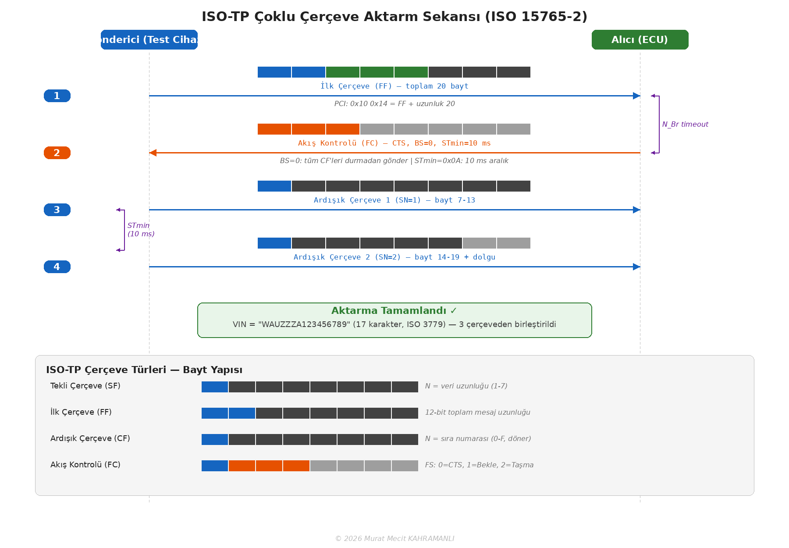
Blok Boyutu (BS): Göndericinin bir sonraki FC'yi beklemeden önce iletebileceği ardışık çerçeve sayısı. BS = 0 sınır yok demektir (tüm CF'leri duraklamadan gönder).
STmin: Ardışık çerçeveler arasındaki minimum ayırma süresi. 0x00–0x7F değerleri 0–127 ms'yi; 0xF1–0xF9 değerleri 100–900 μs'yi temsil eder. STmin = 0 mümkün olan en hızlı gönderim demektir.
Akış Durumu (FS): 0 = Göndermeye Devam (CTS), 1 = Bekle, 2 = Taşma (iptal).
UDS Zamanlama Parametreleri
ISO 14229 ve ISO 15765-3, UDS iletişimini yöneten katı zamanlama kısıtlamaları tanımlar. Bu zamanlayıcıların doğru uygulanması, güvenilir tanılama davranışı için kritiktir:
| Parametre | Açıklama | Varsayılan Değer | Genişletilmiş Değer |
|---|---|---|---|
| P2server | Bir istek aldıktan sonra ECU'nun yanıt başlatması için maksimum süre | 50 ms | — |
| P2*server | NRC 0x78 (Yanıt Beklemede) gönderdikten sonra ECU'nun yanıt başlatması için maksimum süre | 5000 ms | — |
| P2client | Test cihazının ECU'dan yanıt bekleme zaman aşımı | 50 ms + tolerance | — |
| P2*client | NRC 0x78 aldıktan sonra test cihazı zaman aşımı | 5000 ms + tolerance | — |
| S3server | Oturum zaman aşımı — istek alınmazsa ECU Varsayılan Oturuma döner | 5000 ms | — |
| S3client | Test cihazı bu zamanlayıcı dolmadan TesterPresent göndermeli | < S3server (e.g., 4000 ms) | — |
Bir ECU NRC 0x78 (Yanıt Beklemede) gönderdiğinde, test cihazı zaman aşımını P2*'a sıfırlamalı ve beklemeye devam etmeli — yeniden denememelidir. ECU, son pozitif veya negatif yanıttan önce birden fazla NRC 0x78 yanıtı gönderebilir. Her NRC 0x78, P2* zamanlayıcısını sıfırlar. Yaygın bir uygulama hatası, NRC 0x78'i başarısızlık olarak yorumlamak ve isteği yeniden denemektir; bu, flash programlama sırasında yinelenen isteklere ve olası veri bozulmasına neden olur.
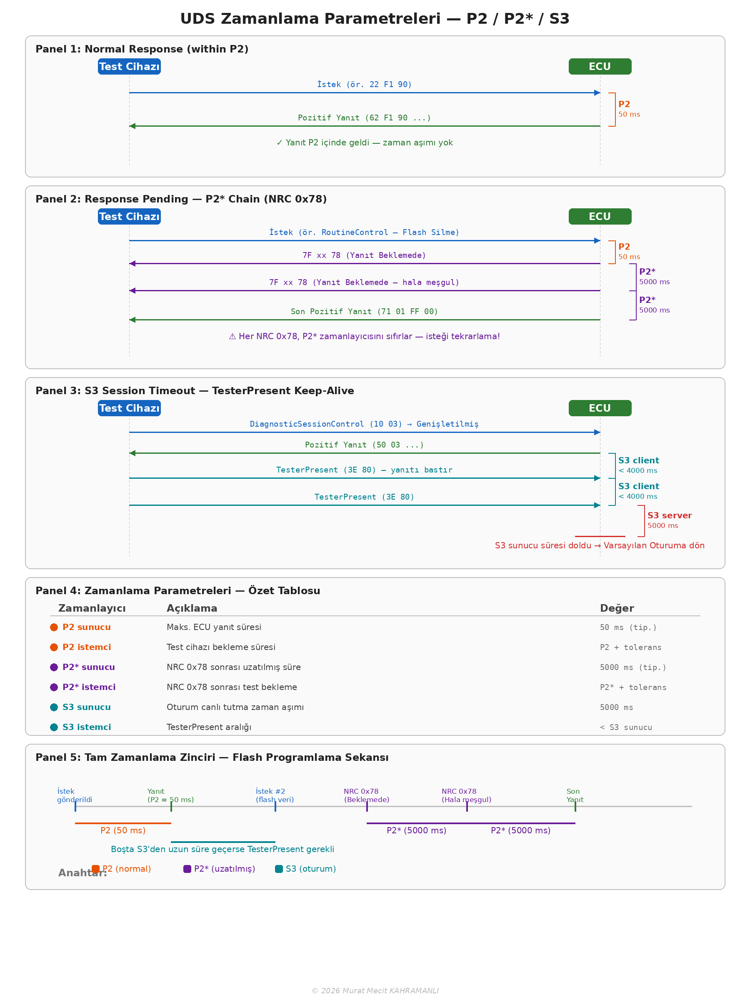
UDS Hata Yönetimi ve Yeniden Deneme Stratejisi
Sağlam UDS uygulamaları, kurtarılabilir ve kurtarılamaz hatalar arasında ayrım yapmalıdır. Yeniden deneme davranışı tamamen alınan Negatif Yanıt Koduna (NRC) — veya herhangi bir yanıt alınmamasına — bağlıdır:
| Koşul | NRC / Davranış | Test Cihazı Eylemi | Maks. Deneme |
|---|---|---|---|
| Yanıt yok (zaman aşımı) | P2 süresi dolar, çerçeve alınmaz | Aynı isteği yeniden dene | 3 |
| Yanıt Beklemede | 0x78 | Bekle (zamanlayıcıyı P2*'a sıfırla), yeniden deneME | Geçersiz (son yanıta kadar bekle) |
| Meşgul — İsteği Tekrarla | 0x21 | Kısa süre bekle, sonra yeniden dene | 3 |
| Koşullar Doğru Değil | 0x22 | Ön koşulları kontrol et, düzelt, sonra yeniden dene | 1 (manuel) |
| Servis Desteklenmiyor | 0x11 | İptal — ECU bu servisi desteklemiyor | 0 |
| Alt Fonksiyon Desteklenmiyor | 0x12 | İptal — geçersiz alt fonksiyon | 0 |
| Güvenlik Erişimi Reddedildi | 0x33 | İptal — güvenlik kilitli, gecikme zamanlayıcısını bekleyin | 0 |
| Geçersiz Anahtar | 0x35 | Doğru anahtarla yeniden dene (deneme sayacını azalt) | Tipik olarak kilitleme öncesi 3 |
| İstek Sıra Hatası | 0x24 | İptal — sırayı baştan yeniden başlatın | 0 |
| Genel Red | 0x10 | İptal — kurtarılamaz | 0 |
| Yanlış Oturum | 0x7E (serviceNotSupportedInActiveSession) | Önce oturumu değiştir (0x10), sonra yeniden dene | 1 (oturum değişikliğinden sonra) |
UDS Retry Logic — Pseudocode:
function uds_request(service, data, max_retries=3):
for attempt in 1..max_retries:
send(service, data)
response = wait_response(timeout=P2)
if response == TIMEOUT:
continue // retry
if response == POSITIVE:
return response // success
nrc = response.nrc
if nrc == 0x78: // Yanıt Beklemede
while True:
response = wait_response(timeout=P2_star)
if response != NRC_0x78:
return response // final answer
if nrc == 0x21: // Busy — Repeat Request
wait(100 ms)
continue // retry
if nrc in [0x10, 0x11, 0x12, 0x24, 0x33]:
return ERROR(nrc) // non-recoverable → abort
if nrc == 0x7E: // Wrong session
switch_session(required_session)
continue // retry once
return ERROR(MAX_RETRIES_EXCEEDED)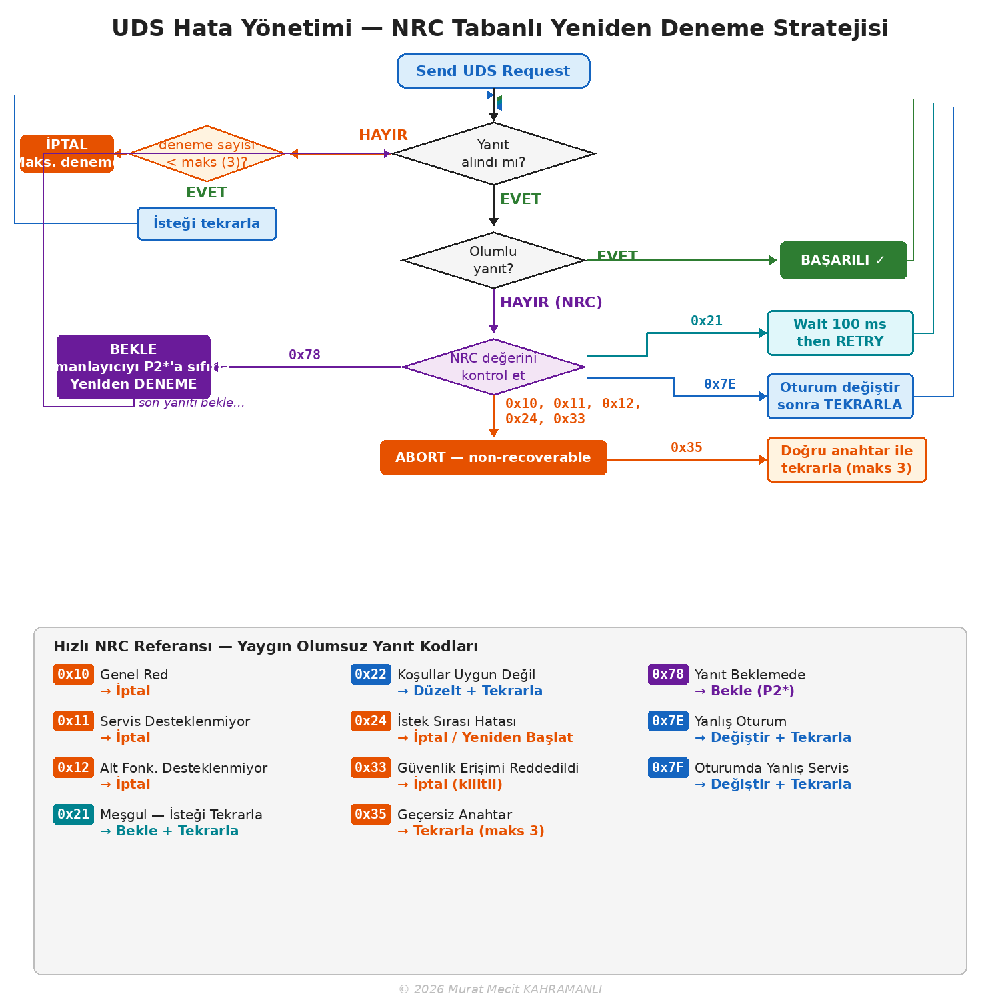
9.3 Protokol Karşılaştırması
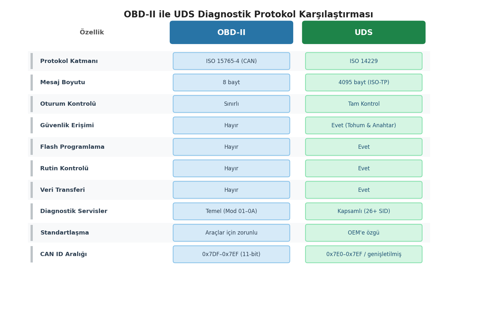
| Özellik | OBD-II | UDS |
|---|---|---|
| Standart | SAE J1979, ISO 15031-5 | ISO 14229 |
| Zorunlu | Evet (emisyonla ilgili) | Hayır (üreticiye özgü) |
| Fiziksel Katman | ISO 15765-4 (CAN), ISO 9141-2, SAE J1850 | CAN, LIN, FlexRay, Ethernet |
| Maks Veri Uzunluğu | Çerçeve başına 7 bayt (TP ile 255) | 4095 bayt (ISO-TP) |
| Oturum Kontrolü | Sınırlı | Tam oturum yönetimi |
| Güvenlik Erişimi | Tanımlanmamış | Seed/Key kimlik doğrulama |
| Flash Programlama | Desteklenmiyor | Tam destek |
| Servis Sayısı | 10 mod | 26+ servis |
| Üretici Uzantıları | Sınırlı | Kapsamlı |
OBD-II, emisyonla ilgili tanı için yasal olarak zorunludur ve düzenlenen pazarlarda satılan tüm araçlar tarafından desteklenmelidir. UDS zorunlu değildir ancak üreticiye özgü tanı için fiili standart haline gelmiştir ve UNECE WP.29 düzenlemeleri kapsamında Avrupa'da araç tipi onayı için gereklidir.
9.4 Tanılama Protokol Standartları — OSI Katman Eşlemesi
Tüm CAN tabanlı tanı protokolleri aynı Fiziksel (ISO 11898-2) ve Veri Bağlantı (ISO 11898-1) katmanlarını paylaşır ancak protokol ailesine bağlı olarak daha yüksek OSI katmanlarında ayrışır. Aşağıdaki diyagram ve tablo, beş ana tanı standardının 7 katmanlı OSI modeline nasıl eşlendiğini gösterir:
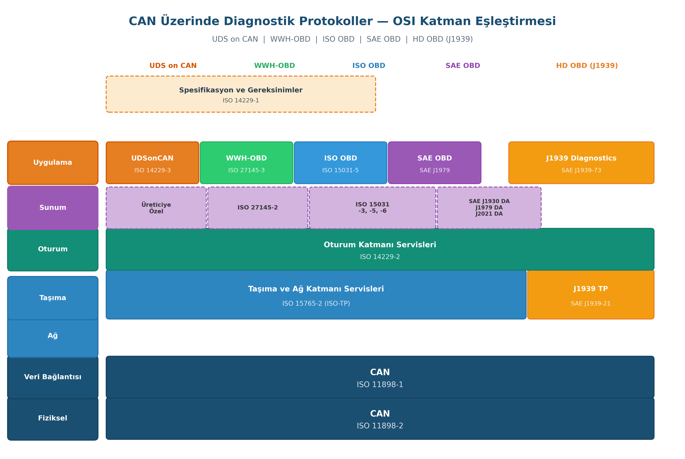
Temel spesifikasyon — ISO 14229-1, tüm uygulama katmanı varyantlarının üzerinde yer alan ortak UDS servis spesifikasyonunu ve gereksinimlerini tanımlar. Beş tanı ailesi de taşıma için ISO-TP'de (ISO 15765-2) birleşir; ancak HD OBD (J1939), SAE J1939-21'de tanımlanan kendi taşıma protokolünü kullanır.
OBD-II / EOBD (ISO 15031-5 / SAE J1979) emisyonla ilgili tanılama için zorunludur — tüm araçlar için yasal olarak gereklidir. UDS (ISO 14229) her şeyi yönetir: üretici diagnostiği, ECU programlama, flash güncellemeler, kalibrasyon. Pratikte, modern araçlar her ikisini de aynı anda destekler — OBD-II servisleri UDS SID'lerine 0x01–0x0A eşlenir ve tam UDS servisleri üreticiye özgü genişletilmiş oturumlarla sağlanır.
9.5 OBDonUDS ve WWH-OBD — Tanılama Protokol Evrimi
Otomotiv sektörü eski OBD-II'den (SAE J1979 / ISO 15031-5) UDS tabanlı emisyon tanısına geçiş yapmaktadır. İki paralel yol mevcuttur: ABD pazarı için OBDonUDS (SAE J1979-2) ve AB pazarı için WWH-OBD (ISO 27145). Her ikisi de temel olarak UDS'yi (ISO 14229) kullanır ve eski OBD-II'nin tescilli Mode/PID yapısını standart UDS servisleriyle (ReadDataByTanımlayıcı, ReadDTCInformation vb.) değiştirir.
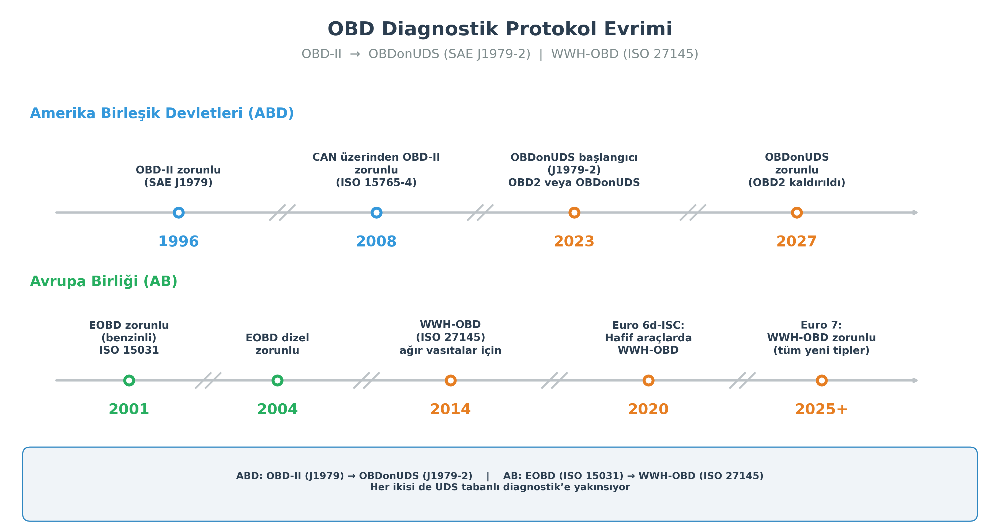
ABD Pazarı: OBD-II → OBDonUDS (SAE J1979-2)
AB Pazarı: EOBD → WWH-OBD (ISO 27145)
OBDonUDS ve WWH-OBD ve Eski OBD-II Karşılaştırması
| Özellik | OBD-II (Eski) | OBDonUDS (J1979-2) | WWH-OBD (ISO 27145) |
|---|---|---|---|
| Bölge | ABD / AB (eski) | Amerika Birleşik Devletleri | Avrupa Birliği |
| Uygulama Standardı | SAE J1979 / ISO 15031-5 | SAE J1979-2 | ISO 27145-3 |
| Temel Protokol | Tescilli Mod/PID | UDS (ISO 14229) | UDS (ISO 14229) |
| Taşıma Katmanı | ISO 15765-4 | ISO 15765-2 | ISO 15765-2 |
| Veri Erişimi | Mod + PID (ör. Mod 01, PID 0x0C) | UDS SID + DID (ör. 0x22 + DID) | UDS SID + DID (ör. 0x22 + DID) |
| DTC Erişimi | Mod 03 (kayıtlı), Mod 07 (bekleyen) | SID 0x19 (ReadDTCInformation) | SID 0x19 (ReadDTCInformation) |
| Oturum Yönetimi | Tanımlanmamış | Tam UDS oturum kontrolü | Tam UDS oturum kontrolü |
| Fiziksel Katman | Yalnızca CAN (ISO 15765-4) | CAN, CAN FD, DoIP | CAN, CAN FD, DoIP |
| Geriye Uyumlu | — | Evet (eski tarama araçları desteklenir) | Evet (eski tarama araçları desteklenir) |
Hem OBDonUDS hem de WWH-OBD, UDS (ISO 14229) üzerine kurulmuştur; bu da otomotiv sektörünün tek bir tanı çerçevesine yakınsadığı anlamına gelir. Temel fark düzenleyici kapsamdır: OBDonUDS EPA/CARB düzenlemelerini (ABD) takip ederken, WWH-OBD UNECE WP.29 / Euro 7 düzenlemelerini (AB) takip eder. Mühendisler için bu, UDS uzmanlığının tüm pazarlarda hem emisyon hem de üretici tanısını kapsadığı anlamına gelir.
9.6 OBD-II Mesajlaşma Senaryoları
CAN üzerinden OBD-II (ISO 15765-4) standartlaştırılmış 11 bit CAN mesaj ID'leri kullanır. Tanı cihazı, fonksiyonel adres 0x7DF (tüm ECU'lara yayın) veya fiziksel adresler 0x7E0–0x7E7 (belirli ECU'lara hedefli) kullanarak talep gönderir. Her ECU kendisine atanmış yanıt ID'si (0x7E8–0x7EF) üzerinden yanıt verir.


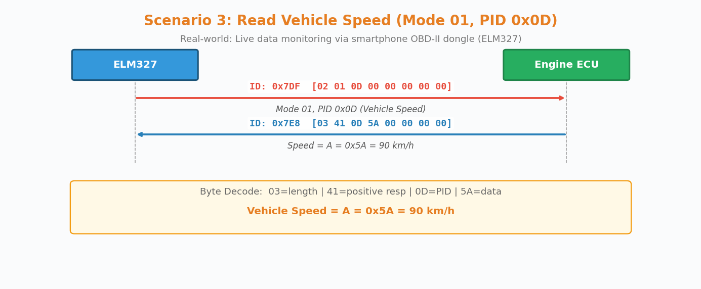
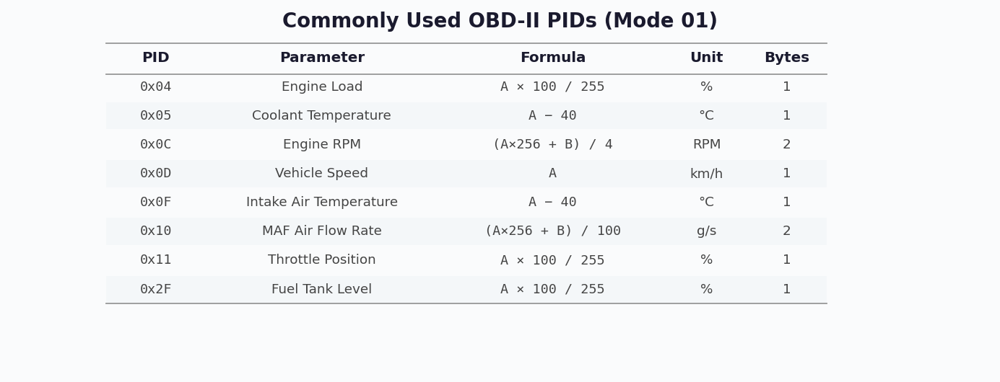
Gerçek Dünya Örneği: Atölyede Motor Devri Okuma
Bir teknisyen, gösterge panelinin altındaki 16 pinli DLC konnektörüne bir OBD-II tarama aracı bağlar. Araç, PID 0x0C (Motor Devri) için bir Mode 01 talebi gönderir:
Tester Request (CAN ID: 0x7DF):
[02] [01] [0C] [00] [00] [00] [00] [00]
| | |
| | └── PID: 0x0C (Engine RPM)
| └─────── Mode: 0x01 (Akım Data)
└──────────── Veri Uzunluğu: 2 bytes
ECU Response (CAN ID: 0x7E8):
[04] [41] [0C] [1A] [F8] [00] [00] [00]
| | | | |
| | | └────┘── Data bytes A=0x1A, B=0xF8
| | └──────────── PID echo: 0x0C
| └───────────────── Positive response: 0x41 (Mode + 0x40)
└────────────────────── Veri Uzunluğu: 4 bytes
RPM Calculation: ((A × 256) + B) / 4 = ((26 × 256) + 248) / 4 = 1726 RPMGerçek Dünya Örneği: Motor Arıza Lambasından Sonra Arıza Kodlarının Okunması
MIL (Motor Arıza Lambası) yandığında, teknisyen kayıtlı DTC'leri almak için Mode 03'ü kullanır:
Tester Request (CAN ID: 0x7DF):
[01] [03] [00] [00] [00] [00] [00] [00]
| └── Mode 03: Request Emission-Related DTCs
└─────── Length: 1 byte
ECU Response (CAN ID: 0x7E8):
[06] [43] [02] [01] [33] [01] [01] [00]
| | | | |
| | | └─────────┘── DTC 1: 0x0133 → P0133
| | └── DTC count: 2 │ DTC 2: 0x0101 → P0101
| └────── Positive response (Mode + 0x40)
└─────────── Length: 6 bytes
P0133 → O₂ Sensor Circuit Slow Response (Bank 1, Sensor 1)
P0101 → Mass Air Flow (MAF) Circuit Range/Performance9.7 J1939 OBD-II Tanılama (Genişletilmiş 29-bit ID'ler)
Ağır hizmet araçlarında (kamyon, otobüs, iş makineleri) tanı, ISO 15765-4 yerine SAE J1939-73 standardını takip eder. J1939, Parameter Group Number'ın (PGN) doğrudan CAN ID'ye gömüldüğü 29 bit genişletilmiş CAN tanımlayıcıları kullanır. Standart OBD-II'nin talep/yanıt modelinin aksine, J1939 ECU'ları parametrelerin çoğunu periyodik olarak yayınlar (genellikle 1 Hz), aktif ve kayıtlı arıza kodlarını taşıyan özel tanı mesajları (DM1–DM4) ile.
29 bitlik tanımlayıcı öncelik (3 bit), PGN/PDU formatı (18 bit) ve kaynak adresi (8 bit) kodlar. Örneğin, DM1 aktif DTC'leri yayınlayan Motor ECU'su (SA=0x00) CAN ID 0x18FECA00 kullanır, burada PGN 65226 = DM1. Arıza kodları, standart OBD-II'nin P/C/B/U DTC kodları yerine SPN + FMI formatını (Şüpheli Parametre Numarası + Arıza Modu Tanımlayıcı) kullanır.
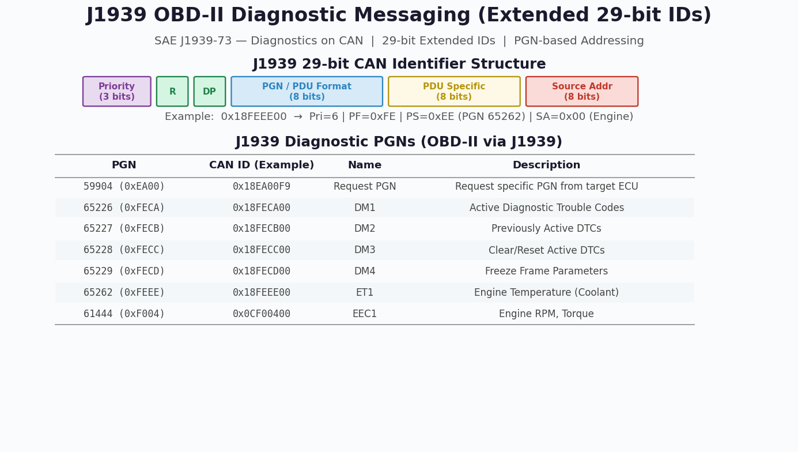
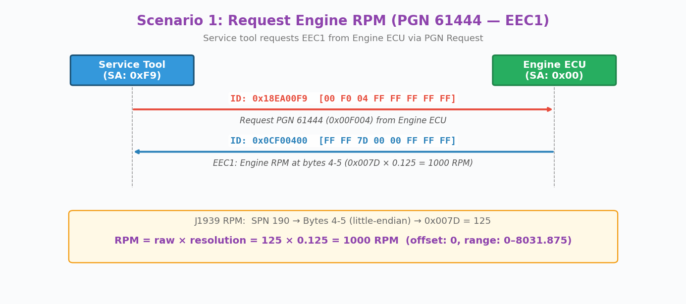


Temel Farklar: Standart OBD-II ve J1939 Tanılama
| Özellik | Standart OBD-II (ISO 15765-4) | J1939 Tanılama (SAE J1939-73) |
|---|---|---|
| CAN Kimliği Uzunluğu | 11-bit standart | 29-bit genişletilmiş |
| Adresleme | Sabit ID'ler (0x7DF, 0x7E0–0x7EF) | PGN tabanlı (29-bit ID'ye gömülü) |
| İletişim Modeli | İstek/Yanıt | Periyodik Yayın + İstek/Yanıt |
| Arıza Kodu Formatı | P/C/B/U DTC'ler (ör. P0133) | SPN + FMI (ör. SPN 412, FMI 0) |
| Araç Tipi | Binek araçlar, hafif kamyonlar | Ağır hizmet kamyonları, otobüsler, arazi |
| Tanılama Mesajları | Modlar 01–0A | DM1–DM50+ (Tanılama Mesajları) |
9.8 UDS Mesajlaşma Senaryoları
UDS (ISO 14229), OBD-II ile aynı CAN ID aralığını (0x7E0–0x7EF) kullanır ancak çok daha zengin bir tanı servisi seti sunar. 8 bayttan uzun UDS mesajları, ISO-TP (ISO 15765-2) çoklu çerçeve taşıma protokolü kullanılarak segmentlere ayrılır.
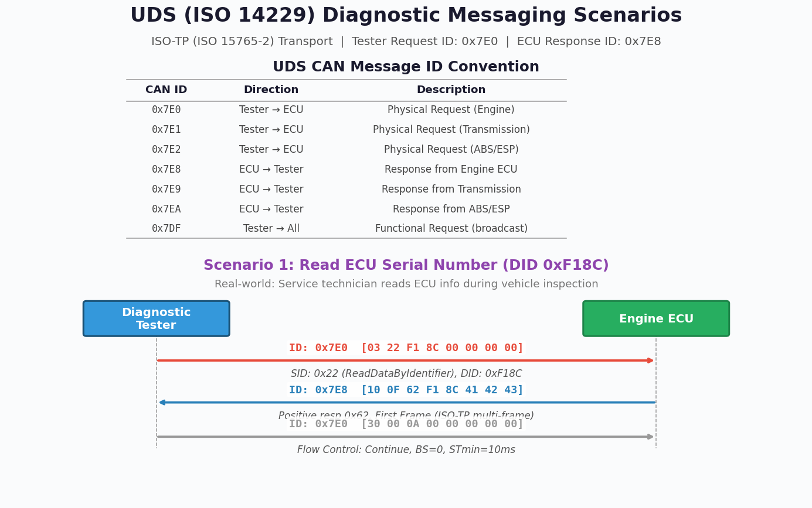
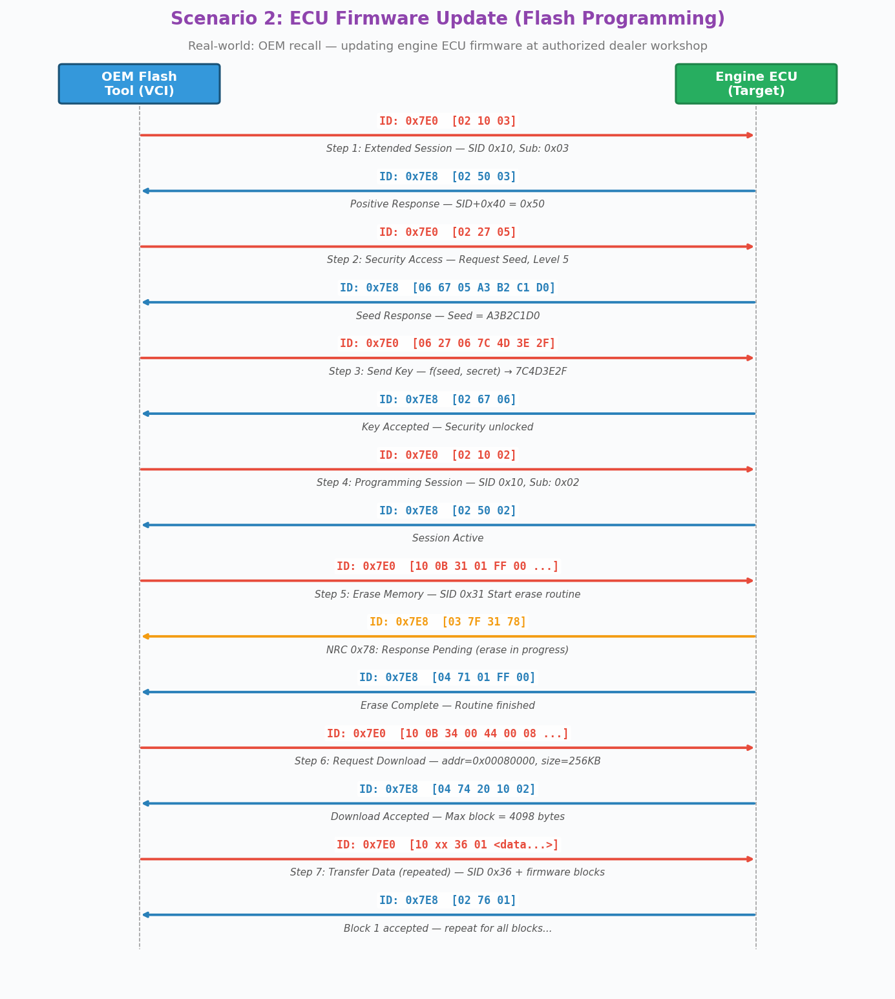

Gerçek Dünya Örneği: Bayii Atölyesinde ECU Yazılım Güncellemesi
Bir OEM geri çağırma kampanyası sırasında, yetkili servis ECU firmware'ini güncellemek için bir VCI (Vehicle Communication Interface) kullanır. Tam flash programlama dizisi şu adımları takip eder:
Step 1: Enter Extended Diagnostic Session
Tester → ECU (0x7E0): [02 10 03] DiagnosticSessionControl(ExtendedDiag)
ECU → Tester (0x7E8): [02 50 03] Positive Response
Step 2: Güvenlik Erişimi — Request Seed
Tester → ECU (0x7E0): [02 27 05] SecurityAccess(Seviye 5 Seed Request)
ECU → Tester (0x7E8): [06 67 05 A3 B2 C1 D0] Seed = A3B2C1D0
Step 3: Güvenlik Erişimi — Send Key
Tester → ECU (0x7E0): [06 27 06 7C 4D 3E 2F] Key = f(Seed, Secret)
ECU → Tester (0x7E8): [02 67 06] Security Unlocked ✓
Step 4: Enter Programming Session
Tester → ECU (0x7E0): [02 10 02] DiagnosticSessionControl(Programming)
ECU → Tester (0x7E8): [02 50 02] Positive Response
Step 5: Erase Flash Memory
Tester → ECU (0x7E0): [10 0B 31 01 FF 00 ...] RoutineControl(Erase)
ECU → Tester (0x7E8): [03 7F 31 78] NRC 0x78: Yanıt Beklemede
ECU → Tester (0x7E8): [04 71 01 FF 00] Erase Complete ✓
Step 6: Request Download
Tester → ECU (0x7E0): [10 0B 34 00 44 ...] RequestDownload(addr, size)
ECU → Tester (0x7E8): [04 74 20 10 02] Max block = 4098 bytes
Step 7: Transfer Data (repeated for each block)
Tester → ECU (0x7E0): [10 xx 36 01 <data>] TransferData(block 1)
ECU → Tester (0x7E8): [02 76 01] Blok Accepted
Step 8: Exit Transfer
Tester → ECU (0x7E0): [02 37 00] RequestTransferExit
ECU → Tester (0x7E8): [01 77] Exit OK
Step 9: Verify Programming
Tester → ECU (0x7E0): [06 31 01 FF 01 ...] RoutineControl(CheckDependencies)
ECU → Tester (0x7E8): [06 71 01 FF 01 00] Verification OK ✓
Step 10: ECU Hard Reset
Tester → ECU (0x7E0): [02 11 01] ECUReset(hardReset)
ECU → Tester (0x7E8): [02 51 01] ECU reboots with new firmwareTüm programlama dizisi boyunca, test cihazı ECU'nun zaman aşımına uğramasını ve Default Session'a dönmesini önlemek için periyodik olarak 0x3E 0x00 (TesterPresent) gönderir. S3 zamanlayıcısı genellikle 5 saniyedir — bu süre içinde tanı etkinliği olmazsa, ECU otomatik olarak Default Session'a döner ve programlama sürecini iptal eder.
ECU bir talebi işlemek için daha fazla zamana ihtiyaç duyduğunda (ör. flash belleği silme), Negatif Yanıt Kodu 0x78 (Yanıt Beklemede) ile yanıt verir. Test cihazı son olumlu veya olumsuz yanıtı beklemelidir. İşlem tamamlanmadan önce ECU birden fazla 0x78 yanıtı gönderebilir.
Pratik Hata Ayıklama Senaryoları
Aşağıdaki gerçek dünya CAN log örnekleri, tanılama geliştirme ve saha hata ayıklama sırasında karşılaşılan yaygın UDS iletişim kalıplarını ve hata koşullarını göstermektedir.
Senaryo 1 — ISO-TP Çok Çerçeve ile VIN Okuma
TX: 7E0 [03 22 F1 90 00 00 00 00] ReadDataByTanımlayıcı(DID=0xF190)
RX: 7E8 [10 14 62 F1 90 57 41 55] First Frame: total 20 bytes
TX: 7E0 [30 00 00 00 00 00 00 00] Flow Control: BS=0, STmin=0 (send all)
RX: 7E8 [21 5A 5A 5A 31 32 33 34] CF SN=1: "ZZZA1234"
RX: 7E8 [22 35 36 37 38 39 00 00] CF SN=2: "56789"
Result: VIN = "WAUZZZA123456789" (17 characters, ISO 3779)Analiz: Yanıt 7 baytı aştığı için ISO-TP bunu 3 çerçeveye böler. Bayt 0x10 0x14 = Toplam uzunluk 20 bayt olan İlk Çerçeve. Test cihazı Akış Kontrolü (BS=0 = sınır yok) ile yanıt verir. İki Ardışık Çerçeve aktarımı tamamlar.
Senaryo 2 — Yanıt Beklemede (NRC 0x78)
TX: 7E0 [10 0B 31 01 FF 00 ...] RoutineControl(Erase Flash)
RX: 7E8 [03 7F 31 78] NRC 0x78 — Yanıt Beklemede
↳ Reset timer to P2* (5000 ms)
... (ECU erasing, 3.2 seconds later) ...
RX: 7E8 [03 7F 31 78] NRC 0x78 — Still processing
↳ Reset timer to P2* again
... (1.8 seconds later) ...
RX: 7E8 [04 71 01 FF 00] Positive Response — Erase Complete ✓Analiz: ECU flash silerken birden fazla NRC 0x78 gönderir. Her 0x78, P2* zamanlayıcısını sıfırlar. Test cihazı yeniden denememeli — sadece beklemeli.
Senaryo 3 — Zaman Aşımı (Yanıt Yok)
TX: 7E0 [03 22 F1 90 00 00 00 00] ReadDataByTanımlayıcı(VIN)
RX: --- (no response within P2=50 ms)
Retry 1:
TX: 7E0 [03 22 F1 90 00 00 00 00] Retry
RX: --- (no response)
Retry 2:
TX: 7E0 [03 22 F1 90 00 00 00 00] Retry
RX: --- (no response)
Result: FAIL — ECU unreachable after 3 attemptsOlası nedenler: ECU'ya güç verilmemiş, yanlış CAN bus, yanlış baud hızı, ECU uyku modunda, fiziksel katman arızası (kırık sonlandırma, CAN_H/CAN_L kısa devre).
Senaryo 4 — Yanlış Oturum (NRC 0x7E)
TX: 7E0 [04 2E F1 90 41] WriteDataByTanımlayıcı (in Default Session)
RX: 7E8 [03 7F 2E 7E] NRC 0x7E — serviceNotSupportedInActiveSession
Fix: Switch to Extended Diagnostic session first
TX: 7E0 [02 10 03] DiagnosticSessionControl(ExtendedDiag)
RX: 7E8 [06 50 03 00 19 01 F4] Positive: P2=25 ms, P2*=5000 ms
TX: 7E0 [04 2E F1 90 41] Retry WriteDataByTanımlayıcı
RX: 7E8 [02 6E F1] Positive Response ✓Analiz: Birçok UDS servisi Genişletilmiş Tanılama veya Programlama oturumu gerektirir. 0x10'a verilen pozitif yanıt P2 ve P2* zamanlama değerlerini içerir — test cihazı zamanlayıcılarını buna göre güncellemelidir.
Senaryo 5 — Güvenlik Erişimi Başarısızlığı (NRC 0x35)
TX: 7E0 [02 27 01] SecurityAccess — Request Seed (Seviye 1)
RX: 7E8 [06 67 01 A3 B2 C1 D0] Seed = 0xA3B2C1D0
TX: 7E0 [06 27 02 FF FF FF FF] Send Key (WRONG key!)
RX: 7E8 [03 7F 27 35] NRC 0x35 — invalidKey
TX: 7E0 [02 27 01] Request new seed
RX: 7E8 [06 67 01 5E 7A 1C 9F] New seed (different each time)
TX: 7E0 [06 27 02 XX XX XX XX] Send correct key
RX: 7E8 [02 67 02] Access Granted ✓Analiz: Geçersiz bir anahtardan sonra, ECU bir sonraki istekte yeni bir seed üretir. 3 ardışık başarısızlıktan sonra, ECU daha fazla seed isteği kabul etmeden önce bir gecikme zamanlayıcısı (genellikle 10–60 s) etkinleştirir.
Senaryo 6 — ISO-TP Akış Kontrolü Başarısızlığı
TX: 7E0 [10 14 62 F1 90 57 41 55] ECU sends First Frame
RX: --- (tester fails to send Flow Control)
Result: Transfer aborted — ECU timeout on FC
No Consecutive Frames are sentOlası nedenler: Test cihazı yazılım hatası (FC uygulanmamış), FC iletimini engelleyen CAN bus tıkanıklığı, test cihazı tarafında alım tamponu taşması.
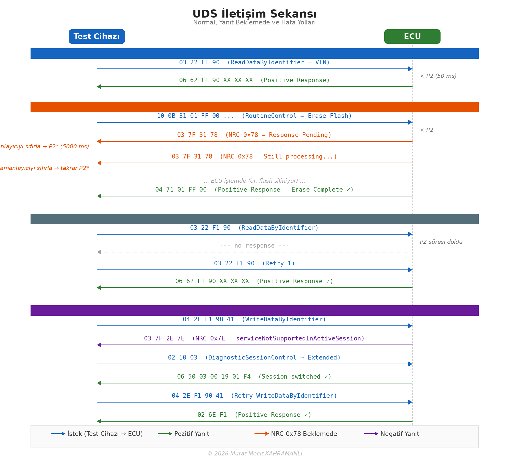
9.9 UDS Servisleri
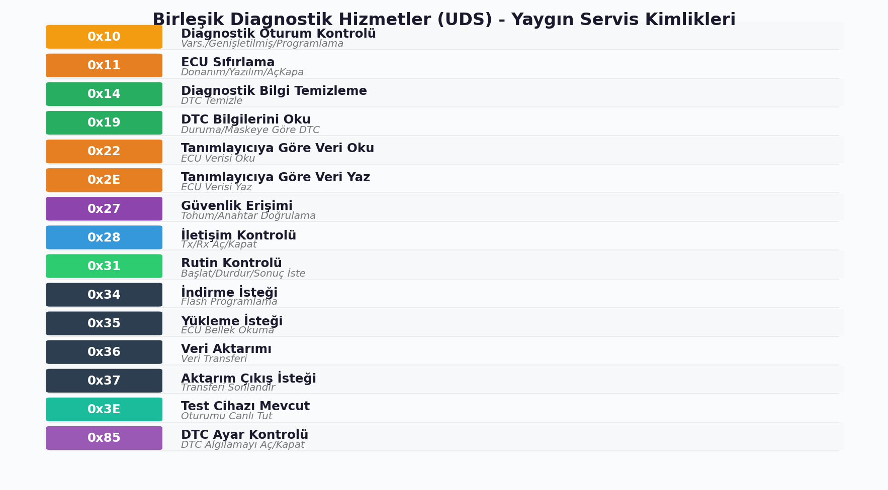
UDS servisleri, Şekil 9-20'de gösterildiği gibi 1 baytlık bir Servis Tanımlayıcı (SID) ile tanımlanır.
UDS Talep/Yanıt Formatı
İstek Formatı:
[SID] [Alt fonksiyon/Data] [...]
Pozitif Yanıt:
[SID + 0x40] [Alt fonksiyon/Data] [...]
Negatif Yanıt:
0x7F [SID] [Yanıt Kodu]Yaygın Negatif Yanıt Kodları

9.10 Oturum Kontrolü (Session Control)
UDS, ECU servislerine erişim düzeyini kontrol eden birden fazla tanı oturumu tanımlar:
| Oturum | ID | Açıklama | Zaman Aşımı |
|---|---|---|---|
| Varsayılan Oturum | 0x01 | Normal çalışma, sınırlı servisler | N/A |
| Programlama Oturumu | 0x02 | Yazılım indirme/yükleme | 5s |
| Genişletilmiş Tanılama | 0x03 | Tam tanılama erişimi | 5s |
| Güvenlik Sistemi Tanılama | 0x04 | Hava yastığı, ABS tanılama | 5s |
Oturum Geçiş Diyagramı:
- Varsayılan Oturum → (0x10 0x02) → Programlama Oturumu
- Varsayılan Oturum → (0x10 0x03) → Genişletilmiş Tanılama
- Programlama Oturumu → (0x10 0x01) → Varsayılan Oturum
- Genişletilmiş Tanılama → (0x10 0x01) → Varsayılan Oturum
- Herhangi Bir Oturum → (Zaman Aşımı) → Varsayılan Oturum
Oturum Zaman Aşımı (S3)
Tanı oturumlarının (Default hariç) bir zaman aşımı süresi vardır. Bu süre içinde tanı etkinliği olmaz ise ECU otomatik olarak Default Session'a döner.
S3 Timeout: Tipik olarak 5000 ms (5 seconds)
Tester Present (0x3E): Used to keep session alive9.11 Güvenlik Erişimi (Güvenlik Erişimi)
Güvenlik Erişimi (SID 0x27), hassas ECU işlevlerini yetkisiz erişimden korur. Seed/key kimlik doğrulama mekanizması, yalnızca yetkili tanı araçlarının kritik işlemleri gerçekleştirebilmesini sağlar.
Güvenlik Erişimi Sequence
Step 1: Request Seed
Tester -> ECU: 0x27 0x01 (Request Seed, Security Seviye 1)
ECU -> Tester: 0x67 0x01 [Seed 4 bytes]
Step 2: Send Key
Tester -> ECU: 0x27 0x02 [Key 4 bytes]
ECU -> Tester: 0x67 0x02 (Positive Response)
If Key Invalid:
ECU -> Tester: 0x7F 0x27 0x35 (Invalid Key)Burada f() üreticiye özgü bir algoritmadır (tipik olarak AES, RSA veya tescilli)
| Seviye | Alt fonksiyon | Erişim |
|---|---|---|
| Seviye 1 | 0x01 (Seed), 0x02 (Key) | Standart tanılama fonksiyonları |
| Seviye 3 | 0x03 (Seed), 0x04 (Key) | Genişletilmiş tanılama fonksiyonları |
| Seviye 5 | 0x05 (Seed), 0x06 (Key) | Flash programlama |
| Seviye 7 | 0x07 (Seed), 0x08 (Key) | Geliştirme/Mühendislik |
Yapılandırılabilir sayıda başarısız güvenlik erişimi denemesinden (genellikle 3) sonra ECU bir kilitleme durumuna girer. Daha fazla denemeye izin verilmeden önce gecikme zamanlayıcısının (genellikle 10-60 saniye) sona ermesi gerekir. Bu, güvenlik mekanizmasına yönelik kaba kuvvet saldırılarını önler.
Bölüm 10: CAN FD ve CAN XL Evrimi
Otomotiv sistemleri artan miktarda veri ürettikçe, Klasik CAN'ın 1 Mbps ve 8 bayt yük sınırlamaları kısıtlayıcı hale gelmiştir. CAN FD (Esnek Data-rate) ve CAN XL, CAN protokolü ile uyumluluğu koruyarak bu sınırlamaları ele alır.
10.1 CAN FD Özellikleri
Bosch tarafından 2012'de tanıtılan ve ISO 11898-1:2015'te standartlaştırılan CAN FD, Klasik CAN'a göre iki önemli iyileştirme sağlar:
- Daha Yüksek Veri Hızları: Veri fazında 8 Mbps'ye kadar (hakemlik 1 Mbps'de kalır)
- Daha Büyük Yükler: Çerçeve başına 64 bayta kadar veri

CAN FD Çerçeve Farklılıkları
| Özellik | Klasik CAN | CAN FD |
|---|---|---|
| Veri Uzunluğu | 0-8 bayt | 0-8, 12, 16, 20, 24, 32, 48, 64 bayt |
| Arbitrasyon Bit Hızı | 1 Mbps'ye kadar | 1 Mbps'ye kadar |
| Veri Bit Hızı | Arbitrasyon ile aynı | 8 Mbps'ye kadar |
| FDF Biti | Ayrılmış (baskın) | FD Formatı (resesif) |
| BRS Biti | Mevcut değil | Bit Hızı Anahtarı |
| ESI Biti | Ayrılmış (baskın) | Hata Durumu Göstergesi |
| CRC Uzunluğu | 15 bit | 17 bit (≤16 bayt) veya 21 bit (>16 bayt) |
| CRC'de Doldurma Bitleri | Sabit form | Dinamik (doldurma sayısı + parite) |
CAN FD DLC Kodlaması
| DLC | Klasik CAN Veri Baytları | CAN FD Veri Baytları |
|---|---|---|
| 0-8 | 0-8 | 0-8 |
| 9 | 8 | 12 |
| 10 | 8 | 16 |
| 11 | 8 | 20 |
| 12 | 8 | 24 |
| 13 | 8 | 32 |
| 14 | 8 | 48 |
| 15 | 8 | 64 |
CAN FD Overhead ve Veri Verimliliği
CAN FD'nin önemli bir avantajı geliştirilmiş protokol verimliliğidir. Klasik CAN'da overhead (SOF, arbitration, control, CRC, ACK, EOF, IFS) özellikle küçük yükler için her çerçevenin büyük bir yüzdesini tüketir. CAN FD, daha yüksek veri hızlarında daha büyük yükleri destekleyerek veri/overhead oranını önemli ölçüde iyileştirir:
| Yük (bayt) | Klasik CAN Verimliliği | CAN FD Verimliliği | Verim Kazanımı |
|---|---|---|---|
| 8 | ~%47 (8 / ~17 bayt toplam) | ~%53 (+ BRS hız artışı) | Up to 3.5× |
| 12 | N/A (CAN'da maks 8) | ~60% | — |
| 32 | N/A | ~80% | — |
| 64 | N/A | ~91% | Up to 8× |
En büyük throughput iyileşmesi Bit Hızı Anahtarı (BRS) kullanıldığında gerçekleşir. BRS aktif ve 2 Mbps veri fazı (500 kbps arbitration'a karşı) ile 64 baytlık bir CAN FD çerçevesi, 8 bayt taşıyan bir Klasik CAN çerçevesinin yaklaşık 8 katı etkin throughput elde eder. BRS olmadan bile, daha büyük yük tek başına gereken çerçeve sayısını azaltır — ör. 64 bayt iletmek 1 CAN FD çerçevesi gerektirirken 8 Klasik CAN çerçevesi gerektirir, arbitration overhead'ini ~%87 azaltır.
10.2 CAN XL Özellikleri
CiA 610-1'de standartlaştırılan CAN XL (Extra Long), modern otomotiv ağlarının taleplerini karşılamak için CAN yeteneklerini daha da genişletir:
- Veri Uzunluğu: Çerçeve başına 2048 bayta kadar
- Veri Hızı: 10 Mbps veya daha yüksek
- SDU Tip Alanı: Taşınan veri türünü belirtir (IP, J1939, vb.)

CAN XL Çerçeve Yapısı
CAN XL birkaç yeni alan sunar:
- XLF (CAN XL Format): CAN XL'i CAN FD'den ayırır
- SEC (Basit Genişletilmiş İçerik): SDU tip alanı varlığını belirtir
- SDT (SDU Type): Servis veri birimi türünü tanımlar
- SBC (Doldurma Bit Sayısı): Genişletilmiş doldurma bit sayacı
- VCID (Sanal CAN Kimliği): Ağ sanallaştırma için
CAN XL ve IP İşbirliği
CAN XL'in temel bir tasarım hedefi, İnternet Protokolü (IP) iletişimi için doğal destektir. 2048 bayta kadar yük ve SDU Type alanı ile CAN XL çerçeveleri birçok kullanım durumunda Ethernet/IP paketlerini parçalama olmadan doğrudan taşıyabilir. Bu şunları sağlar:
- CAN XL üzerinden TCP/IP: Küçük TCP/IP paketleri doğrudan CAN XL veri çerçeveleri içinde tünellenebilir; CAN XL omurgası üzerinden IP tabanlı tanı ve kablosuz güncellemeler sağlanır
- Çoklu Protokol Köprüleme: SDU Type alanı tek bir CAN XL ağının karışık trafik taşımasına olanak tanır — J1939 PGN'leri, CANopen nesneleri ve IP paketleri aynı anda, farklı SDT değerleri ile tanımlanır
- Gateway Basitleştirme: SDU türü yük formatını açıkça tanımladığından CAN XL-Ethernet gateway'leri daha basit hale gelir; karmaşık protokol algılama sezgisellerinden kaçınılır
SIC Alıcı-Verici (Sinyal İyileştirme Yeteneği)
CAN XL, SIC transceiver'lar (ISO 11898-2:2024) olarak bilinen yeni nesil transceiver'lar gerektirir. SIC transceiver'lar bus üzerindeki sinyal kalitesini şu yollarla aktif olarak iyileştirir:
- Kenar Simetri İyileştirmesi: Yükselen ve düşen kenarların aktif eşitlenmesi, yüksek veri hızlarında bit zamanlama hatalarına neden olan asimetriyi azaltır
- Çınlama Bastırma: Çekinik-baskın geçişlerinden sonra veriyolu çınlamasının aktif sönümlemesi daha kısa bit sürelerine olanak sağlar
- Geriye Uyumluluk: SIC transceiver'lar, CAN 2.0 ve CAN FD düğümleri ile tam geriye uyumludur. Bir bus segmenti SIC ve SIC olmayan transceiver'ları karıştırabilir; ancak tam 10 Mbps veri hızı tüm düğümlerin SIC kullanmasını gerektirir
CAN / CAN FD / CAN XL Uyumluluğu
Üç CAN nesli kademeli dağıtım için tasarlanmıştır. Temel uyumluluk kuralları:
- CAN FD düğümleri, yalnızca CAN FD toleranslı transceiver'lar kullanılırsa veya ayrı bus segmentleri gateway'ler aracılığıyla bağlanırsa klasik CAN düğümleri ile bir arada var olabilir
- CAN XL düğümleri CAN FD ile geriye uyumludur ve CAN FD çerçevelerini doğal olarak gönderip/alabilir. CAN XL denetleyicileri tam bir CAN FD uygulaması içerir
- Karma CAN XL + CAN FD ağları, CAN XL düğümlerinin paylaşılan çerçeveler için CAN FD veri hızlarına geri döndüğü ancak yalnızca CAN XL çerçeveleri için 10 Mbps kullanabildiği "uyumluluk modunda" çalışır
- SIC transceiver'lar, SIC olmayan düğümlere bağlı olsalar bile bus üzerindeki tüm çerçeve türleri (klasik CAN, CAN FD ve CAN XL) için sinyal kalitesini iyileştirir
Üst Katman Protokol Desteği
CAN XL'in SDU Type alanı, çerçevenin hangi üst katman protokolünü taşıdığının standartlaştırılmış tanımlanmasını sağlar. Şu anda tanımlanmış SDU türleri şunlardır:
| SDT Değeri | Protokol | Açıklama |
|---|---|---|
| 0x01 | Klasik İçerik | CAN / CAN FD yorumuyla uyumlu içerik |
| 0x03 | CANopen | CANopen XL çerçeveleri (CiA 1301+) |
| 0x05 | J1939 | CAN XL çerçevelerinde J1939 parametre grupları |
| 0x07 | IEEE 802.3 (Ethernet) | CAN XL içinde tünellenen Ethernet çerçeveleri |
| 0x09 | IPv4 / IPv6 | CAN XL içinde doğrudan kapsüllenen IP paketleri |
| Özellik | CAN 2.0 | CAN FD | CAN XL |
|---|---|---|---|
| Maks Veri Baytı | 8 | 64 | 2048 |
| Maks Bit Hızı | 1 Mbps | 8 Mbps (veri) | 10+ Mbps |
| Tanımlayıcı Uzunluğu | 11/29 bit | 11/29 bit | 11/29 bit |
| Standart | ISO 11898 | ISO 11898-1:2015 | CiA 610-1 |
| Geriye Uyumlu | N/A | Evet (CAN 2.0) | Evet (CAN FD) |
| Alıcı-Verici | ISO 11898-2 | ISO 11898-2:2016 | ISO 11898-2:2024 |
10.3 Geçiş (Migration) Hususları
Klasik CAN'dan CAN FD veya CAN XL'e geçiş yaparken birkaç faktör dikkate alınmalıdır:
Donanım Gereksinimleri
- CAN Denetleyici: CAN FD/CAN XL desteği olmalıdır
- Alıcı-Verici: Daha yüksek bit hızlarını desteklemelidir
- Saat: Daha yüksek doğruluk gereklidir (tipik olarak 40 MHz veya 80 MHz)
Ağ Tasarımı
- Veriyolu Uzunluğu: Yüksek bit hızlarında daha kısa maksimum uzunluklar
- Topoloji: Yüksek hızlarda daha kritik
- Sonlandırma: CAN XL için aktif sonlandırma gerekebilir
Klasik CAN ve CAN FD düğümleri olan karma bir ağda, CAN FD çerçeveleri Klasik CAN düğümleri tarafından hata olarak algılanır. CAN FD çerçevelerini göz ardı edebilen CAN FD toleranslı transceiver'lar (TJA1043 gibi) kullanın veya ağ segmentlerini ayırmak için gateway düğümleri uygulayın.
Yazılım Geçişi
// Classical CAN Frame
struct CanFrame {
uint32_t id; // 11 or 29 bit
uint8_t dlc; // 0-8
uint8_t data[8];
};
// CAN FD Frame
struct CanFdFrame {
uint32_t id; // 11 or 29 bit
uint8_t dlc; // 0-15 (maps to 0-64 bytes)
uint8_t data[64];
bool brs; // Bit Hızı Anahtarı
bool esi; // Hata Durumu Göstergesi
};Bölüm 11: EMC Testi ve Kablo Demeti Tasarımı
Elektromanyetik Uyumluluk (EMC), otomotiv ortamlarındaki CAN bus sistemleri için kritik öneme sahiptir. Araçlar çok sayıda elektromanyetik parazit kaynağı içerir ve CAN ağları bu zorlu koşullarda güvenilir şekilde çalışmalıdır.
11.1 ISO 11452 Testi
ISO 11452, araçlardaki elektronik bileşenlerin elektromanyetik bozulmalara karşı bağışıklığını değerlendirmek için test yöntemlerini belirtir. Bu testler, CAN sistemlerinin yayılan elektromanyetik alanlara dayanabilmesini sağlar.
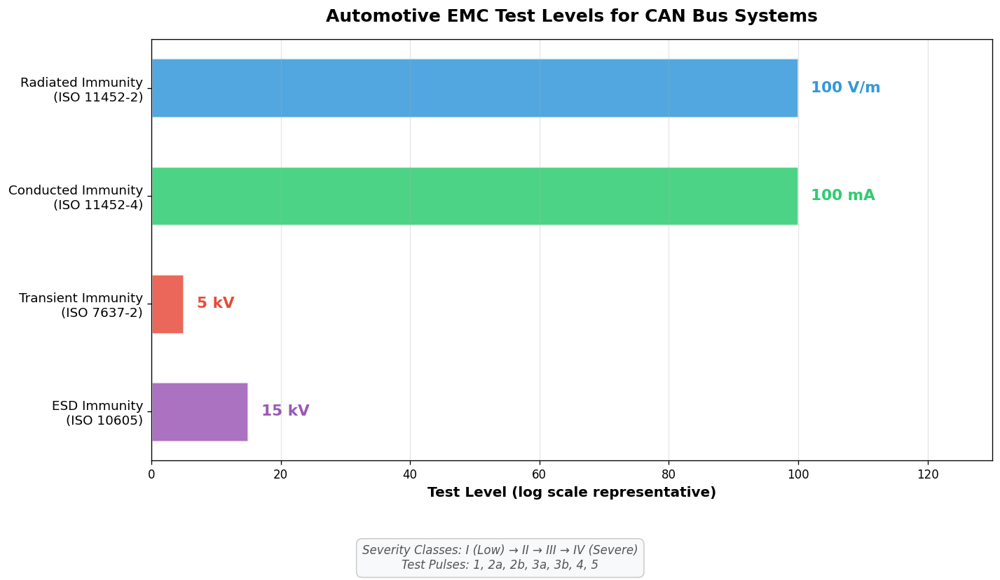
ISO 11452-2 (Işınımsal Bağışıklık)
Bu test, test edilen cihazı (DUT) yankısız odada elektromanyetik alanlara maruz bırakır:
| Seviye | Alan Şiddeti | Uygulama |
|---|---|---|
| I | 25 V/m | Genel binek araçlar |
| II | 50 V/m | Ticari araçlar |
| III | 75 V/m | Ağır ortamlar |
| IV | 100 V/m | Aşırı ortamlar, askeri |
ISO 11452-4 (Toplu Akım Enjeksiyonu)
BCI testi, RF akımlarını doğrudan kablo demetine enjekte eder:
| Seviye | Akım | Frekans Aralığı |
|---|---|---|
| I | 25 mA | 1-400 MHz |
| II | 50 mA | 1-400 MHz |
| III | 75 mA | 1-400 MHz |
| IV | 100 mA | 1-400 MHz |
11.2 ISO 7637 Geçici Rejimler (Transients)
ISO 7637-2, araç elektrik sistemlerinde meydana gelen geçici bozulmaları simüle eden test darbelerini belirtir. Bu geçici bozulmalar uygun şekilde korunmazsa iletişim hatalarına veya kalıcı hasara neden olabilir.
ISO 7637-2 Test Darbeleri
| Darbe | Açıklama | Genlik | Kaynak |
|---|---|---|---|
| 1 | Endüktif yük bağlantısının kesilmesinden kaynaklanan negatif geçici | -100V to -600V | Endüktif yüklerin bağlantısının kesilmesi |
| 2a | Endüktif yük anahtarlamasından kaynaklanan pozitif geçici | +50V to +100V | Paralel endüktif yükler |
| 2b | Enerjisi kesilme sırasında DC motor geçici | +10V to +50V | DC motor durdurma |
| 3a | Negatif hızlı geçici olaylar (patlama) | -100V to -200V | Anahtarlama süreçleri |
| 3b | Pozitif hızlı geçici olaylar (patlama) | +75V to +150V | Anahtarlama süreçleri |
| 4 | Motor çalıştırma sırasında voltaj düşüşü | -6V to -12V | Marş motoru devreye girişi |
| 5 | Yük boşalması (alternatör bağlantısının kesilmesi) | +65V to +200V | Alternatör yük boşaltması |
Darbe 5 (Yük Boşaltma) alternatör şarj olurken akünn bağlantısı kesildiğinde meydana gelen en şiddetli geçici durumdur. Modern araçlar merkezi yük boşaltma bastırma (CLDS) kullanır, ancak CAN transceiver'lar yine de bu geçici durumlara dayanmalıdır. Dahili yük boşaltma korumalı transceiver'lar kullanın (ör. 58V değerli TJA1057).
11.3 Kablo Demeti Tasarım Kılavuzu
Uygun kablo donanımı tasarımı, EMC performansı ve sinyal bütünlüğü için esastır. Tasarım ve kurulum sırasında en iyi uygulamaları takip etmek birçok CAN iletişim sorununu önleyebilir. Bu bölüm stub bağlantılarını, yaygın hataları ve kaçınılması gereken tasarım anti-kalıplarını kapsar.
Stub Bağlantı Tasarımı
Stub'lar, ana bus'tan bireysel ECU'lara yapılan bağlantılardır. Stub uzunluğu ve bağlantı yöntemi sinyal kalitesini doğrudan etkiler. Daha yüksek veri hızlarında stub uzunluğu giderek daha kritik hale gelir.
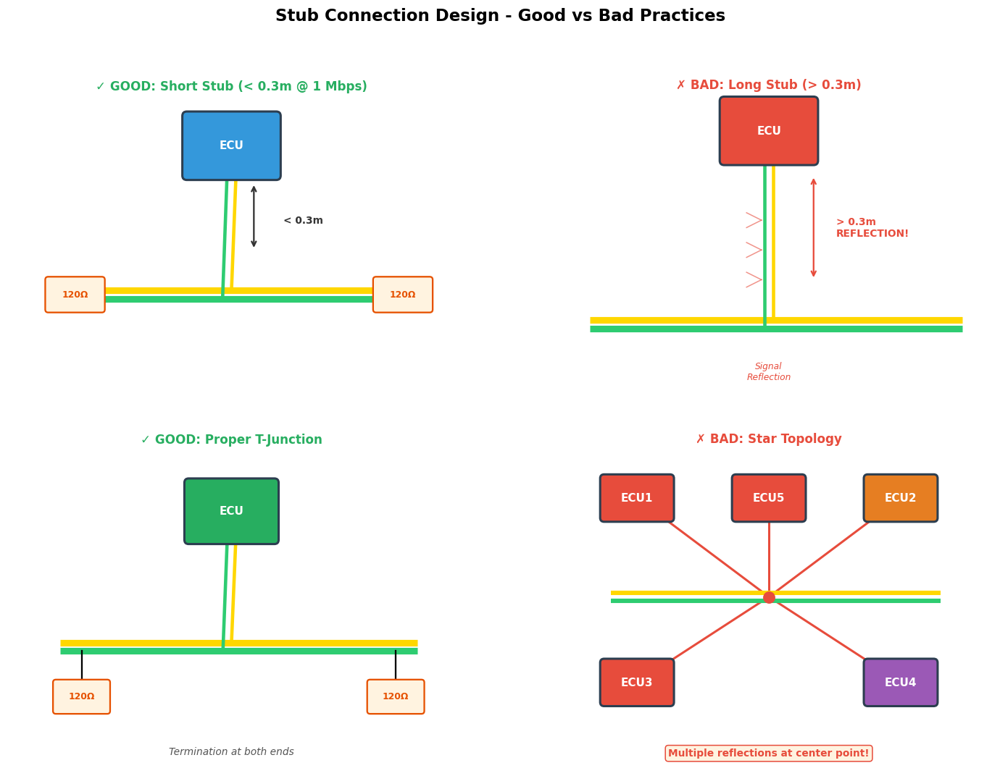
Saplama Uzunluğu Kılavuzu
Maksimum izin verilen stub uzunluğu veri hızına bağlıdır. Veri hızı arttıkça, sinyal yansımalarını önlemek için stub uzunluğu azalmalıdır.
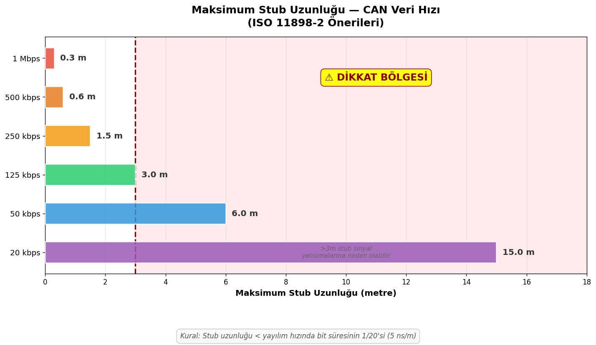
Burada tbit bit süresidir ve vprop kablodaki sinyal yayılma hızıdır (bükümlü çift için tipik olarak 5 ns/m)
| Veri Hızı | Bit Süresi | Maks Stub Uzunluğu | Durum |
|---|---|---|---|
| 1 Mbps | 1 μs | 0.3 m | Kritik |
| 500 kbps | 2 μs | 0.6 m | Kritik |
| 250 kbps | 4 μs | 1.5 m | Orta |
| 125 kbps | 8 μs | 3.0 m | Gevşek |
| 50 kbps | 20 μs | 6.0 m | Esnek |
1 Mbps'de 0,3 metreden uzun bir stub, bit hatalarına neden olabilecek önemli sinyal yansımaları oluşturur. 5 Mbps veri fazında CAN FD için stub uzunluğu 0,1 metre veya daha az ile sınırlandırılmalıdır. Kurulum sırasında stub uzunluklarını her zaman ölçün ve doğrulayın.
Yaygın Tasarım Hataları (Anti-Kalıplar)
Aşağıdaki diyagramlar, iletişim sorunlarına yol açan CAN kablo donanımı tasarımındaki yaygın hataları göstermektedir:
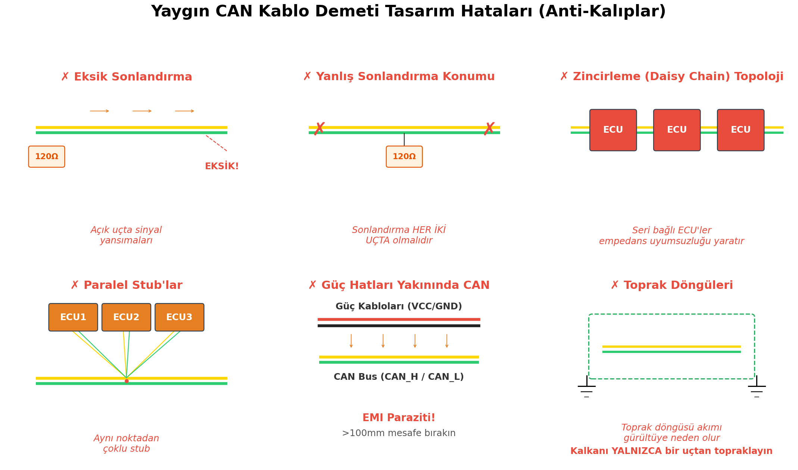
Anti-Kalıp 1: Eksik Sonlandırma
Eksik veya hatalı sonlandırma, CAN bus sorunlarının en yaygın nedenidir. Bus'ın her iki ucunda uygun sonlandırma olmadan sinyaller geri yansır ve duran dalgalar oluşturur.
Sonlandırma direncini her zaman bir multimetre ile doğrulayın (güç kapalı). Bus üzerindeki herhangi bir noktada CAN_H ve CAN_L arasını ölçün. Okunan değer yaklaşık 60Ω olmalıdır (paralel iki 120Ω direnç). 60Ω'dan önemli ölçüde farklı okumalar bir sonlandırma sorununa işaret eder.
Anti-Kalıp 2: Yıldız Topoloji
Birden fazla stub'ın merkezi bir noktaya bağlandığı yıldız topolojisi, birden fazla yansıma noktası oluşturur. Yıldızın her dalı bir empedans süreksizliği olarak davranır ve sinyal bozulmasına neden olur.
Düşük hızlı CAN (ISO 11898-3, hata toleranslı), belirli transceiver'larla yıldız topolojisini destekler. Ancak yüksek hızlı CAN (ISO 11898-2) yalnızca doğrusal bus topolojisi kullanmalıdır.
Anti-Kalıp 3: ECU'lar Üzerinden Zincirleme Bağlantı
ECU'ları seri olarak bağlamak (daisy chain), her düğümde empedans uyumsuzlukları oluşturur. ECU'nun dahili devresi bus'a 120Ω olmayan bir yük sunar ve sinyal bütünlüğünü bozar.
Anti-Kalıp 4: Toprak Döngüleri
Kablo ekranının her iki ucundan topraklanması bir toprak döngüsü oluşturur. Ekrandan akan akım, kapasitif ve endüktif kuplaj yoluyla sinyal iletkenlerinde gürültüye neden olur.
Kablo Yönlendirme En İyi Uygulamaları
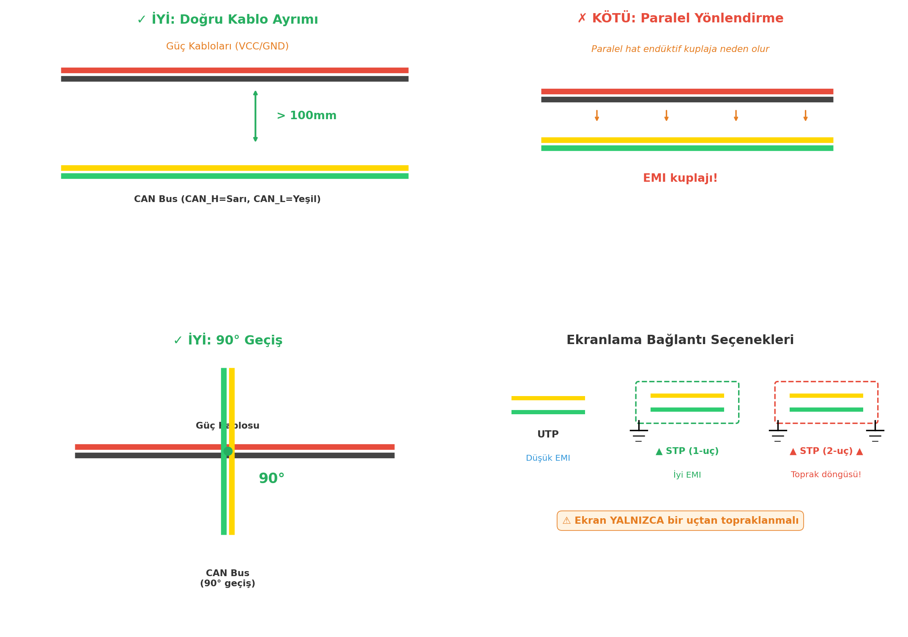
Güç Hatlarından Ayrım
| Güç Kablosu Türü | Minimum Ayırma | Notlar |
|---|---|---|
| Düşük akım (< 5A) | 50 mm | Genel kablolama |
| Orta akım (5-20A) | 100 mm | Aksesuar devreleri |
| Yüksek akım (> 20A) | 200 mm | Marş motoru, alternatör |
| Ateşleme bobinleri | 300 mm | Yüksek gerilim darbeleri |
| RF antenleri | 500 mm | Radyo frekansı |
Güç Kablolarını Geçme
CAN kabloları güç kablolarını geçmek zorunda olduğunda, her zaman 90° açıyla geçin. Bu kuplaj alanını en aza indirir ve endüktif girişimi azaltır. CAN kablolarını uzun mesafelerde güç kablolarına paralel asla çekmeyin.
Ekranlama Seçenekleri
| Tür | Uygulama | Etkinlik | Cost |
|---|---|---|---|
| Ekransız (UTP) | Kontrollü ortamlar, düşük EMI | Temel | Düşük |
| Tek ekranlı (STP) | Genel otomotiv | Good | Orta Düzey |
| Çift ekranlı | Yüksek EMI ortamları | Mükemmel | High |
| Zırhlı | Ağır makine, aşırı koşullar | Maksimum | Çok Yüksek |
Ekran Topraklaması
Ekran yalnızca bir ucundan topraklanmalıdır, genellikle tanı konnektörü tarafından. Her iki ucundan topraklama, gürültüye neden olabilecek toprak döngüleri oluşturur. Topraklanmamış uç, kazara teması önlemek için yalıtılmalıdır.
Konnektör Seçimi
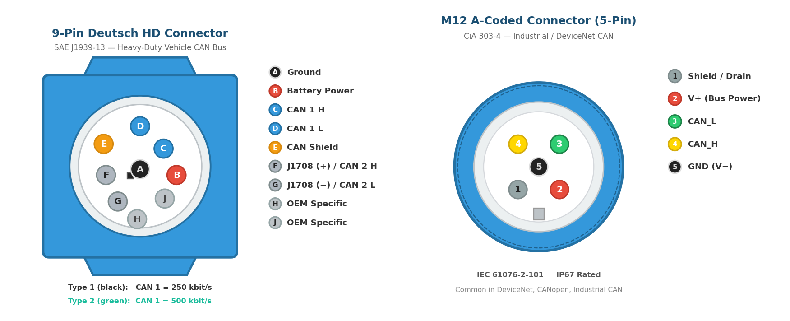

Konnektör Gereksinimleri
- Ekran sürekliliği: 360° ekran sürekliliği sağlayan konnektörler kullanın
- Gerilim giderici: Titreşim ve hareketten kaynaklanan kablo hasarını önleyin
- IP derecesi: Ortam için uygun giriş koruması seçin
- Altın kaplama: Korozyon direnci için altın kaplama kontaklar kullanın
- Kilitleme mekanizması: Kazara bağlantı kopmasını önleyin
Yaygın Konnektör Türleri
| Konnektör | Uygulama | Pins | Standart |
|---|---|---|---|
| DB9 (DE-9) | Endüstriyel, tanılama araçlar | 9 | CiA 303-1 |
| OBD-II (J1962) | Otomotiv diagnostiği | 16 | SAE J1962 |
| M12 | Endüstriyel otomasyon | 5 | IEC 61076-2-101 |
| Deutsch DT | Ağır hizmet araçları | 2-12 | SAE J1939-13 |
| RJ45 | Ethernet-CAN ağ geçitleri | 8 | IEC 60603-7 |
Sinyal Bütünlüğü Hususları
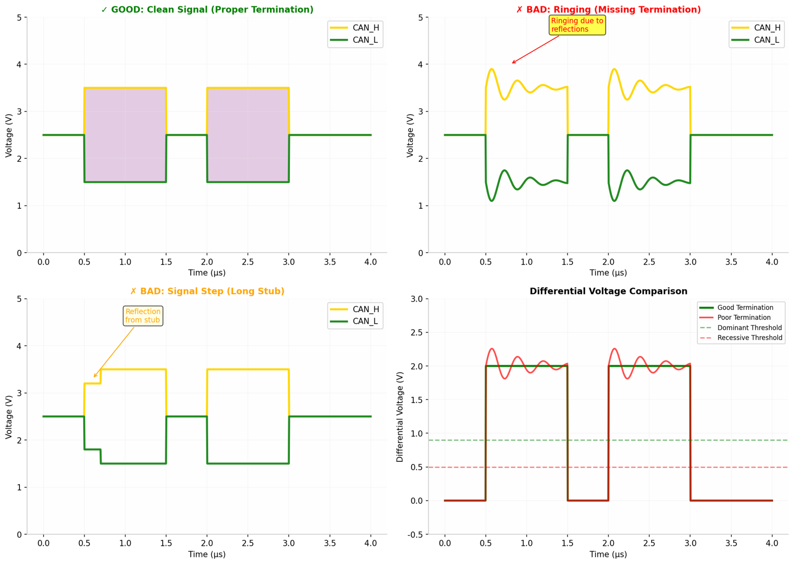
Ortak Mod Boğma Bobinleri
Ortak mod bobinleri, diferansiyel sinyallerin geçmesine izin verirken ortak mod gürültüsünü filtreleyerek EMC performansını iyileştirebilir:
Common Mode Choke Specifications:
- Impedance: 100-1000 Ω at 100 MHz
- Akım rating: 100-500 mA (match transceiver requirements)
- DC resistance: < 1 Ω (minimize voltage drop)
- Saturation current: > 2× operating current
Recommended Placement:
- Install near connector entries
- Place on both CAN_H and CAN_L lines
- Use bifilar wound chokes for best common-mode rejectionKurulum Kontrol Listesi
Yeni bir CAN kurulumuna güç vermeden önce:
- Sonlandırma direncini doğrulayın: CAN_H ve CAN_L arasında 60Ω ± 10Ω
- Kısa devre kontrolü: CAN_H/CAN_L ile güç/toprak arasında süreklilik olmamalıdır
- Stub uzunluklarını doğrulayın: Tüm stub'lar veri hızı spesifikasyonu dahilinde
- Yönlendirmeyi kontrol edin: Güç kablolarından minimum 100mm
- Ekran topraklamasını kontrol edin: Yalnızca bir uçtan topraklanmış
- Konnektör bütünlüğünü doğrulayın: Tüm pinler düzgün oturmuş
EMC performansını her zaman test yoluyla doğrulayın. Geliştirme sırasında ön uyumluluk testi sorunları erken tespit edebilir ve maliyetli yeniden tasarımları azaltır. Son doğrulama akredite bir EMC test tesisinde yapılmalıdır. Tüm kablo donanımı güzergahlarını belgeleyin ve gelecekteki sorun giderme için yapıldığı haliyle çizimleri muhafaza edin.
Bölüm 12: Pratik Uygulama
Güvenilir bir CAN ağı uygulamak, sistem mimarisi, bus yüklemesi ve gateway tasarımının dikkatli bir şekilde değerlendirilmesini gerektirir. Bu bölüm, gerçek dünya CAN sistemi geliştirmesi için pratik rehberlik sağlar.
12.1 Sistem Mimarisi
Modern araçlar, işlev ve veri hızı gereksinimlerine göre düzenlenmiş birden fazla CAN bus kullanır. Tipik bir otomotiv ağ mimarisi şunları içerir:
| Bus | Veri Hızı | Bağlı Sistemler | Özellikler |
|---|---|---|---|
| Aktarma Organı CAN | 500 kbps - 1 Mbps | Motor, Şanzıman, ABS | Yüksek öncelik, gerçek zamanlı |
| Gövde CAN | 125 kbps - 250 kbps | Kapılar, Camlar, Aydınlatma, HVAC | Konfor özellikleri |
| Bilgi-Eğlence CAN | 125 kbps - 500 kbps | Radyo, Navigasyon, Ekran | Yüksek veri hacmi |
| Tanılama CAN | 500 kbps | OBD-II, Servis Araçları | Standartlaştırılmış erişim |
| Şasi CAN | 250 kbps - 500 kbps | Süspansiyon, Direksiyon, Fren | Güvenlik kritik |
Tipik Çoklu Bus Mimarisi:
- Güç Aktarma CAN (500 kbps) → Merkezi Geçit
- Gövde CAN (125 kbps) → Merkezi Ağ Geçidi
- Bilgi-Eğlence CAN (250 kbps) → Central Gateway
- Şasi CAN (500 kbps) → Central Gateway
- Merkezi Ağ Geçidi → OBD-II Tanılama Portu
Ağ Geçidi Tasarım Hususları
Gateway düğümü farklı CAN bus'ları birbirine bağlar ve mesaj yönlendirmesini yönetir:
- Mesaj filtreleme: Veriyolları arasında yalnızca ilgili mesajları iletin
- Protokol dönüşümü: Gerekirse CAN 2.0 ve CAN FD arasında dönüştürün
- Güvenlik: Kritik bus hatlarını izole etmek için güvenlik duvarı işlevleri uygulayın
- Tanılama: Tüm veriyollarına birleşik tanılama erişim sağlayın
12.2 Bus Yükleme Analizi
Bus yüklemesi, CAN ağ tasarımı için kritik bir parametredir. Aşırı yükleme mesaj gecikmelerine ve öncelik inversiyonu sorunlarına neden olabilir.

500 kbps bus için örnek hesaplama:
Mesajs:
- Engine RPM: 130 bits × 100 Hz = 13,000 bits/s
- Vehicle Speed: 130 bits × 50 Hz = 6,500 bits/s
- Coolant Temp: 130 bits × 10 Hz = 1,300 bits/s
- (20 more messages at various rates)
Total: 180,000 bits/s
Bus Yükü: 180,000 / 500,000 = 36%| Bus Yükü | Durum | Öneri |
|---|---|---|
| < 30% | Mükemmel | Gelecekteki genişleme için yeterli pay |
| 30-50% | Good | Normal çalışma aralığı |
| 50-70% | Dikkat | Gecikme sorunlarını izleyin |
| 70-85% | Uyarı | Öncelik tersine dönme riski, yeniden tasarım önerilir |
| > 85% | Kritik | Ağda önemli gecikmeler yaşanacaktır |
%50 bus yükünde, yüksek öncelikli bir mesaj bir düşük öncelikli çerçeve kadar gecikebilir. %70 yükte gecike birkaç çerçeve olabilir. Güvenlik açısından kritik mesajlar için her zaman en kötü durum yanıt süresi analizi yapın.
12.3 Ağ Geçidi (Gateway) Tasarımı
Gateway, çoklu bus mimarilerinde kritik bir bileşendir. Mesaj yönlendirme, protokol dönüşümü ve güvenlik işlevlerini yönetmelidir.
Ağ Geçidi Mesaj Yönlendirmesi
// Örnek Gateway Routing Table
struct RoutingEntry {
uint32_t can_id; // Kaynak CAN ID
uint8_t source_bus; // Kaynak bus number
uint8_t target_bus; // Target bus number
uint32_t new_id; // Translated CAN ID (optional)
uint8_t priority; // Routing priority
};
RoutingEntry routing_table[] = {
// Route Engine RPM from Powertrain to Infotainment
{0x0CFFF048, POWERTRAIN_BUS, INFO_BUS, 0x0CFFF048, 5},
// Route Door Durum from Body to Infotainment
{0x18FEF103, BODY_BUS, INFO_BUS, 0x18FEF103, 3},
// Route Diagnostic requests to all buses
{0x18EA00F9, DIAG_BUS, ALL_BUSES, 0x18EA00F9, 1},
};Ağ Geçidi Performans Gereksinimleri
| Parametre | Tipik | Yüksek Performans |
|---|---|---|
| Mesaj Gecikmesi | < 5 ms | < 1 ms |
| İş Hacmi | 2000 mesaj/s | 10000 mesaj/s |
| Yönlendirme Tablosu Boyutu | 256 giriş | 1024 giriş |
| Tampon Boyutu | 64 mesaj | 256 mesaj |
| Protokol Dönüştürme | CAN 2.0 ↔ CAN FD | CAN ↔ LIN ↔ FlexRay |
Modern gateway'ler mesaj kimlik doğrulaması, saldırı tespiti ve güvenli firmware güncellemeleri dahil siber güvenlik önlemleri uygulamalıdır. Gateway, araç bus'ları ile harici arayüzler arasındaki birincil güvenlik sınırı olarak hizmet verir.
Bölüm 13: Sorun Giderme (Troubleshooting)
CAN bus sorun giderme, sistematik bir yaklaşım ve uygun tanı araçları gerektirir. Bu bölüm yaygın arızaları, tanı prosedürlerini ve güvenilir CAN iletişimini sürdürmek için en iyi uygulamaları kapsar.
13.1 Yaygın Hatalar
CAN bus sorunları fiziksel katman arızaları ve protokol katmanı arızaları olarak sınıflandırılabilir.
Fiziksel Katman Arızaları
| Arıza | Belirtiler | Neden | Çözüm |
|---|---|---|---|
| Açık Devre | İletişim yok, bus recessive'de takılı | Kopuk kablo, gevşek bağlantı | Kablolamayı onar, konektörleri kontrol et |
| CAN_H - VBAT Kısa Devre | Bus dominant'ta takılı | Kablolama hasarı | Kısa devreyi izole et ve onar |
| CAN_L - GND Kısa Devre | Bus dominant'ta takılı | Kablolama hasarı | Kısa devreyi izole et ve onar |
| CAN_H/CAN_L Kısa Devre | Diferansiyel sinyal yok | Kablolama hasarı | Kısa devreyi izole et ve onar |
| Eksik Terminasyon | Sinyal yansımaları, hatalar | Arızalı direnç, eksik ECU | CAN_H/CAN_L arası 60Ω kontrol et |
| Yanlış Terminasyon | Sinyal yansımaları | Yanlış direnç değeri | Doğru 120Ω dirençleri tak |
| Ground Kayması | Aralıklı hatalar | Kötü ground bağlantısı | Topraklamayı iyileştir |
Protokol Katmanı Arızaları
| Arıza | Belirtiler | Neden | Çözüm |
|---|---|---|---|
| Bit Zamanlama Uyumsuzluğu | Aralıklı hatalar, Bus Off | Yanlış örnekleme noktası | Bit zamanlama konfigürasyonunu doğrula |
| Yinelenen Node ID'leri | Adres çakışmaları (J1939) | Konfigürasyon hatası | Benzersiz adresler ata |
| Yüksek Bus Yükü | Mesaj gecikmeleri, kayıp frame'ler | Çok fazla mesaj | Mesaj hızlarını optimize et |
| EMI Paraziti | Rastgele hatalar | Kötü kablo yönlendirmesi | Ekranlamayı ve yönlendirmeyi iyileştir |
| Arızalı Transceiver | Tek node hatalara neden oluyor | Donanım arızası | Transceiver/ECU'yu değiştir |
13.2 Tanılama Araçları
Etkili CAN sorun giderme uygun tanı araçları gerektirir:
Temel Araçlar
| Araç | Amaç | Tipik Kullanım |
|---|---|---|
| Dijital Multimetre | Gerilim, direnç ölçümleri | Terminasyon, kısa devre kontrol |
| Osiloskop | Sinyal dalga formu analizi | Sinyal kalitesi, zamanlama doğrula |
| CAN Analizörü | Protokol analizi | Mesaj izleme, hata tespiti |
| Tarama Aracı | Araç tanılama | DTC oku, canlı veri |
| Ağ Test Cihazı | Fiziksel katman testi | Kablo testi, sinyal bütünlüğü |
Gerilim Ölçümleri
Normal Bus Gerilim Ölçümleri:
CAN_H - Ground:
- Recessive: 2.5V ± 0.5V
- Dominant: 3.5V ± 0.5V
CAN_L - Ground:
- Recessive: 2.5V ± 0.5V
- Dominant: 1.5V ± 0.5V
CAN_H - CAN_L:
- Recessive: 0V ± 0.5V
- Dominant: 2.0V ± 0.5V
Terminasyon Direnci (güç kapalı):
- CAN_H - CAN_L: 60Ω ± 5Ω (paralel iki 120Ω)Osiloskop Analizi
Doğrulanacak temel dalga formu özellikleri:
- Diferansiyel gerilim: Baskın ~2V, çekinik ~0V olmalıdır
- Yükselme/düşme süreleri: Yüksek hızlı CAN için tipik olarak 20-50 ns
- Sinyal simetrisi: CAN_H ve CAN_L birbirinin ayna görüntüsü olmalıdır
- Gürültü: Her iki hatta minimal gürültü
Dalga Formu → Arıza Cheat Sheet
Aşağıdaki şekil, osiloskop dalga formlarından CAN bus arızalarını tanımlamak için görsel bir referans sağlar. Üst sıra sağlıklı sinyal özelliklerini gösterirken, alt bölüm yaygın dalga formu anomalilerini kök nedenlerine eşler:
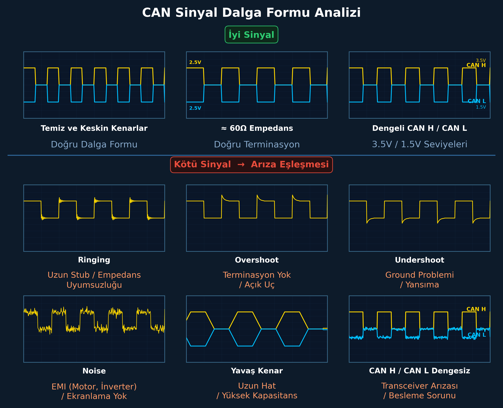
| Anomali | Kök Neden | Doğrulama Adımları | Çözüm |
|---|---|---|---|
| Zil Çalma | Uzun stub, empedans uyumsuzluğu, eksik terminasyon | Stub uzunluğu < 20 cm kontrol; 120Ω + 120Ω mevcut mu doğrula | Stub'ları kısalt, empedansı düzelt, eksik terminasyonu ekle |
| Aşırı Yükselme | Terminasyon yok, açık uç yansıması | CAN_H–CAN_L ≈ 60Ω ölç | Her iki bus ucuna uygun 120Ω terminasyon dirençleri takın |
| Aşırı Düşme | Ground problemi, sinyal yansıması | GND sürekliliğini kontrol et; ECU ground referansının ortak olduğunu doğrula | Ground bağlantılarını onar, tek nokta topraklama sağla |
| Gürültü | EMI (motor, inverter), ekranlama yok | Kablo ekranlamasını kontrol et; güç hatlarına yakınlığı ölç | Ekranlı kablo ekle, EMI kaynaklarından uzaklaştır, ortak mod bobin ekle |
| Yavaş Kenar | Uzun kablo, aşırı kapasitans, çok fazla node | Kablo uzunluğunu ölç; bus üzerindeki node sayısını say | Kablo uzunluğunu azalt, node sayısını azalt, daha kaliteli kablo kullan |
| CAN H/L Dengesiz | Arızalı transceiver, besleme gerilimi sorunu | CAN_H ve CAN_L simetrisini karşılaştır; transceiver beslemesini kontrol et | Arızalı transceiver/ECU'yu değiştir, güç kaynağını doğrula |
13.3 Saha Debug Prosedürü
CAN bus problemlerinin yaklaşık %90'ını çözen sistematik 10 adımlı saha arıza giderme prosedürü:
Adım Adım Debug Prosedürü
| Adım | Eylem | Detaylar | Beklenen Sonuç |
|---|---|---|---|
| 1 | Multimetre — Direnç | Kontak KAPALI. CAN_H ↔ CAN_L direncini ölç. | ~60Ω = OK | ~120Ω = tek terminasyon | ~40Ω = fazla terminasyon | ∞ = kopuk hat |
| 2 | Fiziksel Kontrol | Doğrula: bus uçlarında terminasyon, stub uzunlukları, bükümlü çift kullanımı, ek yok | Tüm bağlantılar sağlam, topoloji doğru |
| 3 | Osiloskop — Bağla | CAN_H ve CAN_L'yi probla (tercihen diferansiyel ölçüm) | Temiz kare dalga görünür |
| 4 | Dalga Formu Analizi | Dalga formunu cheat sheet ile karşılaştır (Şekil 13-1) | Anomalileri tespit et: ringing, overshoot, noise, vb. |
| 5 | Hız Düşürme Testi | Bus hızını düşür (örn. 500 kbps → 250 kbps) | Hatalar kaybolursa → fiziksel katman problemi onaylandı |
| 6 | Node İzolasyonu | ECU'ları tek tek çıkar | Hangi node'un probleme neden olduğunu belirle |
| 7 | Stub Testi | Uzun branş hatlarını çıkar | Sinyal düzeliyorsa → stub problemdir |
| 8 | Terminasyon Testi | Bir terminasyonu çıkar → gözlemle; hassas dirençle değiştir | Hatalı veya eksik terminasyonu belirle |
| 9 | EMI Testi | Motoru çalıştır, DC-DC dönüştürücüyü aktifleştir, sinyal değişimlerini gözlemle | EMI'ye duyarlı koşulları belirle |
| 10 | Transceiver Doğrulama | Tek ECU ile test et; bilinen sağlam ECU ile karşılaştır | Arızalı transceiver'ı belirle |
Bus hızını düşürmek problemi ortadan kaldırıyorsa, bu %100 fiziksel katman sorunudur. Yazılım hatası aramayın.
Gerçek Araç Problem Senaryoları
| Senaryo | Belirtiler | Kök Neden | Çözüm |
|---|---|---|---|
| Motor çalışınca CAN kesiliyor | Kontakta OK, motor çalışırken CAN error/bus-off. Osiloskop artan noise ve bozuk kenarlar gösterir. | Alternatör/inverter EMI, kötü topraklama | Bükümlü çift + ekran kullan, GND referansını düzelt, kabloyu güç hatlarından uzaklaştır, ortak mod bobin ekle |
| ECU'lar aralıklı olarak kayboluyor | Rastgele zaman aşımları, DM1 mesajları gelip gidiyor. Osiloskop ringing + kenar bozulması gösterir. | Uzun stub'lar, yıldız/T-branş topolojisi | Stub'ları < 20 cm'ye kısalt, yıldız topolojiyi lineer bus'a dönüştür |
| Sadece yüksek hızda hatalar | 250 kbps OK, 500 kbps hata | Empedans uyumsuzluğu, kötü kablo kalitesi | Uygun 120Ω kablo kullan, terminasyonu doğrula, kabloyu değiştir |
| Hiç iletişim yok | CAN tamamen ölü. Multimetre ∞Ω gösteriyor. | Kopuk kablo, çıkmış konektör | Süreklilik testi, tüm konektörleri kontrol et |
| Zayıf sinyal seviyeleri | CAN_H/CAN_L diferansiyel gerilim çok düşük | Üçlü terminasyon (≈40Ω), aşırı bus yüklemesi | Fazla terminasyonu çıkar — sadece iki 120Ω uç bırak |
| Tek ECU bus'ı bozuyor | Belirli ECU bağlandığında bus çöküyor | Arızalı transceiver, dominant-stuck çıkış | Arızalı ECU'yu çıkar, transceiver'ı değiştir |
CAN bus problemlerinin yaklaşık %80'i fiziksel katmandan (kablolama, terminasyon, konektörler) kaynaklanır ve yalnızca %20'si yazılım veya konfigürasyon sorunlarından gelir. Her zaman önce fiziksel katmanı kontrol edin.
CAN FD Debug Farkları
CAN FD, daha yüksek veri fazı bit hızları (2–5 Mbps) nedeniyle daha sıkı fiziksel katman toleransları gerektirir. Klasik CAN hızlarında tolere edilebilen aynı kablolama hataları, CAN FD veri hızlarında kritik hale gelir:
| Parametre | Klasik CAN | CAN FD | Etki |
|---|---|---|---|
| Maks Stub Uzunluğu | < 30 cm | < 10 cm | Veri fazı hızındaki yansımalar bit hatalarına neden olur |
| Ringing Toleransı | Orta — küçük yansımaları tolere edebilir | Çok düşük — küçük yansımalar bile CRC hatalarına neden olur | Daha sıkı empedans eşleşmesi gerekli |
| Kablo Kalitesi | Standart kablo kabul edilebilir | Gerçek 120Ω bükümlü çift zorunlu | Empedans uyumsuzluğu yüksek frekansta büyütülür |
| Terminasyon Hassasiyeti | ±%10 tolerans | ±%5 veya daha az önerilir | Küçük sapmalar görünür yansımalar oluşturur |
| Kenar Zamanlaması | Yumuşak kenarlar kabul edilebilir | Keskin, temiz kenarlar gerekli | Eğim kontrolü ve yükselme/düşme süresi kritik |
- Data Phase Crash: Arbitration fazı düzgün çalışır ama veri fazı başarısız olur — yüksek frekanslı fiziksel katman hatalarından kaynaklanır
- CRC Error Spike'ları: Veri fazında rastgele CRC hataları — arbitration hızında görünmeyen küçük yansımalardan kaynaklanır
- Bit Stuffing Hataları: Veri hızındaki kenar bozulması bit zamanlama ihlallerine neden olur
CAN FD debug, RF seviyesinde sinyal bütünlüğü analizine yaklaşır. Şu sırayı izleyin: (1) Önce düşük veri hızında test edin, (2) Sadece 2 node ile test edin, (3) Tüm stub'ları kesin, (4) Osiloskop ile kenarları inceleyin, (5) Gerekirse kabloyu değiştirin. CAN FD sistemlerde başarılı iletişim için klasik CAN kurallarının daha sıkı uygulanması gerekir — özellikle stub uzunluğu, empedans uyumu ve sinyal bütünlüğü.
13.4 En İyi Uygulamalar
Tasarım, kurulum ve bakım sırasında en iyi uygulamaları takip etmek birçok CAN bus sorununu önleyebilir:
Tasarım En İyi Uygulamaları
- Normal çalışma için veriyolu yükünü %50'nin altında tutun
- Uygun empedanslı bükümlü çift kablo kullanın
- Her iki veriyolu ucunda uygun sonlandırma uygulayın
- Stub uzunluklarını minimize edin (< 0,3 m, 1 Mbps hızda)
- CAN kablolarını yüksek akımlı güç hatlarından uzağa yönlendirin
- Yüksek EMI ortamlarında ekranlı kablolar kullanın
- Uygun topraklama uygulayın (ekran için tek nokta)
Kurulum En İyi Uygulamaları
- Güç vermeden önce sonlandırma direncini doğrulayın
- CAN_H, CAN_L, güç ve toprak arasındaki kısa devreleri kontrol edin
- Gerilim gidericili uygun konnektörler kullanın
- Tüm CAN kablolarını açıkça etiketleyin
- Ağ topolojisini ve düğüm adreslerini belgeleyin
Bakım En İyi Uygulamaları
- Veriyolu yükünü ve hata sayaçlarını düzenli olarak izleyin
- Trend analizi için tanılama arıza kodlarını kaydedin
- Periyodik fiziksel katman testi gerçekleştirin
- Bilinen sorunları gidermek için yazılımı güncelleyin
- Kritik bileşenler için yedek parça bulundurun
CAN sorunlarını giderirken şu sistematik yaklaşımı izleyin: (1) Fiziksel bağlantıları ve sonlandırmayı doğrulayın, (2) Multimetre ile gerilim seviyelerini kontrol edin, (3) Osiloskop ile dalga biçimlerini analiz edin, (4) CAN analizörü ile mesajları izleyin, (5) ECU'lardaki hata sayaçlarını kontrol edin, (6) Arızalı cihazı belirlemek için düğümleri izole edin.
Bölüm 14: CAN FD ile J1939
SAE J1939-22, J1939 protokolünün CAN FD ağlarına adaptasyonunu tanımlar; CAN FD'nin artan bant genişliği ve yük kapasitesinden yararlanırken üst katman protokol desteğini sağlar. Bu bölüm, J1939-22'nin modern ağır hizmet araç ağları için tanıttığı Multi-PG mekanizmasını, CAN FD Taşıma Protokolünü ve geliştirilmiş ağ yönetimi yeteneklerini kapsar.
14.1 Çoklu PG ve İçerilen PG'ler
Klasik J1939, CAN çerçevesi başına bir Parameter Group (PG) eşler. CAN FD'nin 64 baytlık yükü ile J1939-22, birden fazla Parameter Group'un tek bir CAN FD çerçevesine paketlenmesine olanak tanıyan Multi-PG konseptini sunar. Her gömülü PG, Contained PG (C-PG) olarak adlandırılır.
Çoklu-PG Çerçeve Yapısı
Bir Multi-PG çerçevesi özel bir PGN kullanır ve bir veya daha fazla C-PG'yi veri alanına ardışık olarak paketler. Her C-PG, orijinal PGN'yi tanımlayan kendi başlığını taşır ve alıcının içeriği çoğullamadan çıkarmasını sağlar.
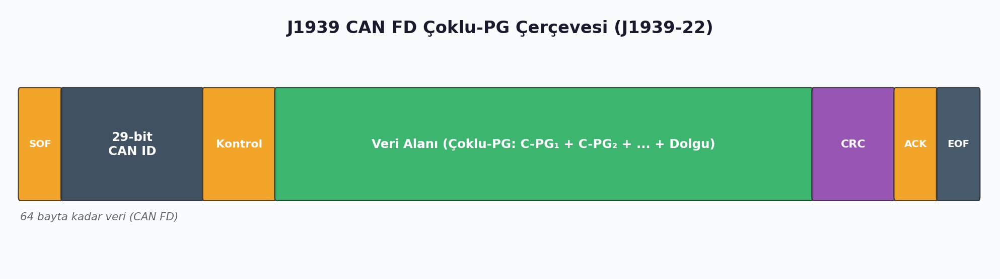
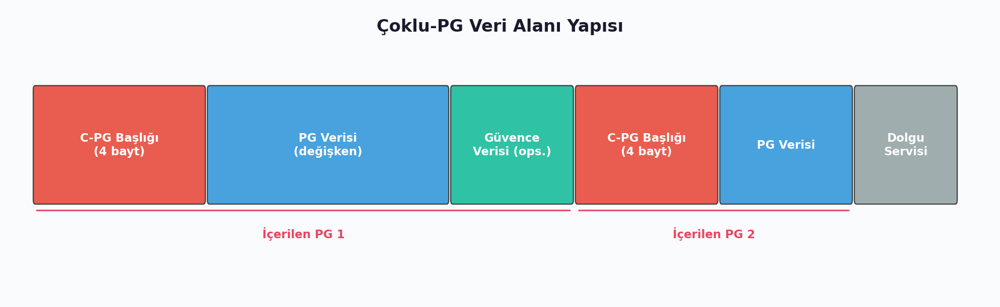
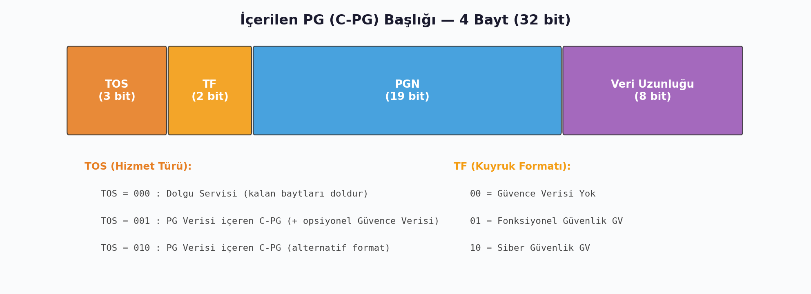
İçerilen PG Başlık Alanları
| Alan | Size | Açıklama |
|---|---|---|
| Hizmet Türü (TOS) | 4 bit | İçerilen PG için öncelik ve QoS parametreleri |
| İletim Formatı (TF) | 4 bit | C-PG adresleme modunu belirtir (PDU1 veya PDU2) |
| PGN | 18 bit | İçerilen PG'nin Parametre Grup Numarası |
| Veri Uzunluğu | Değişken | Başlığı takip eden C-PG yük uzunluğu |
Multi-PG, CAN FD ağlarında bus overhead'ini önemli ölçüde azaltır. Birden fazla küçük PG'yi (ör. 2 baytlık sensör değerleri) tek bir 64 baytlık çerçeveye paketleyerek, protokol overhead'inin yararlı veriye oranı dramatik olarak düşer. Örneğin, ayrı ayrı gönderilen dört 8 baytlık PG, her biri arbitration, CRC ve çerçeveler arası boşluk overhead'i olan dört CAN FD çerçevesi gerektirir. Tek bir Multi-PG çerçevesi olarak aynı veri yalnızca bir set overhead alanı gerektirir — yaklaşık %60 bant genişliği tasarrufu.
CAN FD Tanımlayıcı Eşleme
J1939-22 hem 11 bit hem de 29 bit CAN tanımlayıcılarını destekler. Geleneksel 29 bit genişletilmiş format için eşleme, arbitration fazı için geriye uyumluluğu koruyarak klasik J1939 ile tutarlı kalır:
| Bit Konumu | Alan | Açıklama |
|---|---|---|
| 28–26 | Öncelik | Mesaj önceliği (0 = en yüksek, 7 = en düşük) |
| 25 | Ayrılmış | Gelecekte kullanım için ayrılmış (0 olarak ayarlanmış) |
| 24 | Veri Sayfası | PGN adres alanını genişletir |
| 23–16 | PDU Formatı (PF) | PDU1 (PF < 240) veya PDU2 (PF ≥ 240) belirler |
| 15–8 | PDU Özgü (PS) | Hedef Adresi (PDU1) veya Grup Uzantısı (PDU2) |
| 7–0 | Kaynak Adresi | Gönderici düğümün adresi (0–253) |
14.2 CAN FD Taşıma Protokolü
J1939-22, CAN FD'nin daha büyük çerçeveleri için optimize edilmiş yeni bir FD Taşıma Protokolü (FD.TP) tanımlar. Klasik J1939 TP (BAM/CMDT) TP.DT çerçeve başına 7 bayt ile sınırlıyken, FD.TP büyük veri setlerini daha verimli aktarmak için CAN FD yüklerinden yararlanır.
FD Taşıma Protokolü Mesajları
| Mesaj | PGN | Açıklama |
|---|---|---|
| FD.TP.CM | 0x1CEC | Bağlantı Yönetimi — aktarım oturumlarını başlatır ve kontrol eder |
| FD.TP.DT | 0x1CEB | Veri Aktarımı — her biri 63 bayta kadar yük segmentleri taşır |
| FD.TP.EOMS | — | Mesaj Oturumu Sonu — başarılı alımı onaylar |
| FD.TP.İptal | — | Bağlantı İptali — hata durumunda oturumu sonlandırır |
FD.TP ve Klasik TP Performansı
FD.TP'nin klasik TP'ye göre performans avantajı, çerçeve başına daha büyük veri segmenti boyutu nedeniyle önemlidir:
| Parametre | Klasik TP (J1939-21) | FD.TP (J1939-22) |
|---|---|---|
| DT çerçevesi başına bayt | 7 | Up to 63 |
| Maksimum aktarım boyutu | 1785 bayt | > 100 kB (genişletilmiş) |
| 1785 bayt için çerçeve sayısı | ~255 + CM | ~29 + CM |
| Oturum yönetimi | CTS/EOM el sıkışma | EOMS ile geliştirilmiş akış kontrolü |
| Eşzamanlı oturumlar | Sınırlı | Çoklu eşzamanlı oturumlar desteklenir |
Klasik J1939 (CAN 2.0B) segmentlerini J1939-22 (CAN FD) segmentleriyle bağlayan gateway'lerde, Multi-PG çerçevelerinin klasik taraf için tekrar bireysel PG'lere parçalanmasına dikkat edilmelidir. FD.TP oturumları zamanlama parametreleri uygun şekilde ayarlanarak klasik BAM/CMDT oturumlarına dönüştürülmelidir. Bu parçalanma, gerçek zamanlı kontrol uygulamalarında hesaba katılması gereken gecikme ekler.
14.3 Ağ Yönetimi ve Fonksiyonel Güvenlik
J1939 Ağ Yönetimi (J1939-81), bus üzerindeki ECU'ların tak-çalıştır çalışması için gerekli adres talep etme ve çakışma çözümleme mekanizmaları sağlar. J1939-22 geriye uyumluluğu korurken bu yetenekleri CAN FD ağları için genişletir.
Adres Talep Protokolü
Her J1939 düğümü, iletimden önce ağda benzersiz bir kaynak adresi (0–253) talep etmelidir. Address Claimed mesajı (PGN 0xEE00), küresel olarak benzersiz bir tanımlayıcı olarak hizmet eden ve adres çakışmaları sırasında önceliği belirleyen düğümün 64 bitlik NAME alanını taşır.
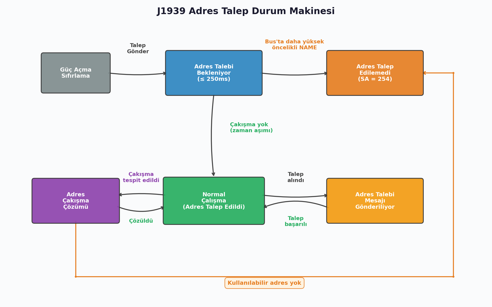
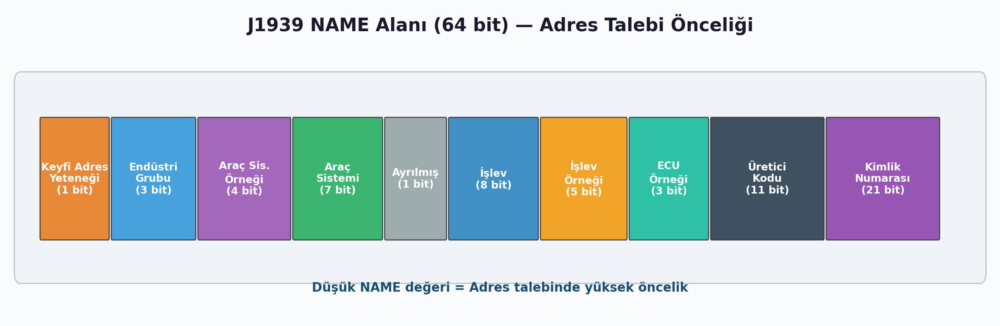
J1939 NAME Alan Yapısı
| Bit | Alan | Açıklama |
|---|---|---|
| 63 | Rastgele Adres | 1 = düğüm adres müzakeresi yapabilir, 0 = sabit adres |
| 62–59 | Endüstri Grubu | Uygulama alanı (0 = Genel, 1 = Karayolu, 2 = Tarım, vb.) |
| 58–55 | Araç Sistemi Örneği | Birden fazla özdeş sistemi ayırt eder |
| 54–48 | Araç Sistemi | Araç sistemini tanımlar (motor, şanzıman vb.) |
| 47–40 | İşlev | ECU'nun sistem içindeki belirli işlevi |
| 39–35 | Fonksiyon Örneği | Fonksiyonun örneği |
| 34–32 | ECU Örneği | Bu işlev için ECU örneği |
| 31–21 | Üretici Kodu | SAE tarafından atanan üretici tanımlayıcısı |
| 20–0 | Kimlik Numarası | Üretici tarafından atanan benzersiz seri numarası |
Çakışma Çözümü
İki düğüm aynı adresi talep ettiğinde, NAME alan değerleri kazananı belirler. Sayısal olarak daha düşük NAME değerine sahip düğüm adresi kazanır. Kaybeden düğüm ya alternatif bir adres seçmeli (Rastgele Adres biti = 1 ise) ya da Cannot Claim Address durumuna geçmelidir (kaynak adresi 254 ile PGN 0xEE00 gönderme).
SAE J1939-17, J1939 CAN FD ağları için fiziksel katmanı belirtir. Çift bit hızları tanımlar: arbitration fazında 500 kbit/s ve veri fazında 2 Mbit/s. CAN FD'nin teorik maksimumu olan 8 Mbps'ye kıyasla bu muhafazakâr yaklaşım, zorlu ticari araç ortamlarında mevcut J1939 kablo donanımları ve konnektör sistemleriyle güvenilir çalışmayı sağlar. Standart ayrıca J1939 CAN FD düğümleri için transceiver gereksinimlerini, bus zamanlama toleranslarını ve osilatör spesifikasyonlarını ele alır.
Fonksiyonel Güvenlik Hususları
Modern J1939 CAN FD uygulamaları fonksiyonel güvenlik (ISO 26262) gereksinimlerini ele almalıdır. Temel mekanizmalar şunlardır:
- Hata Durumu Göstergesi (ESI): CAN FD'nin ESI biti, error-passive vericilerin anında tespitine olanak tanır ve arıza sınırlamasını iyileştirir
- CRC İyileştirmeleri: CAN FD'nin stuff-bit sayımı ile 17/21 bit CRC'si, klasik CAN'ın 15 bit CRC'sinden daha güçlü hata tespiti sağlar
- Uçtan Uca Koruma: Uygulama seviyesinde E2E koruması (ör. AUTOSAR E2E Profil 6), güvenlik açısından kritik PG'ler için CAN FD'nin yerleşik hata tespitini tamamlamalıdır
- Alive Counter: Mesaj sıra numaralarının izlenmesi, arızalı ECU’lardan gelen donmuş veya bayat verilerin tespit edilmesine yardımcı olur
- Zaman Aşımı İzleme: Heartbeat tabanlı gözetim, tanımlı reaksiyon süresi içinde sessiz düğüm arızalarını algılar
14.4 J1939-76 Fonksiyonel Güvenlik İletişimi
SAE J1939-76, ASIL D’ye (ISO 26262) kadar güvenlik açısından kritik uygulamalar için veri bütünlüğünü sağlayan J1939 üzerinde bir güvenlik iletişim katmanı tanımlar. Standart, bir Safety Header Mesaj (SHM) ve bir Safety Data Mesaj (SDM) kullanarak eşleştirilmiş mesaj mekanizması sunar.
SHM/SDM Mesaj Yapısı
Her güvenlik açısından kritik PGN için üretici iki ardışık mesaj iletir: SHM (bütünlük doğrulama verisi içeren) ardından SDM (gerçek güvenlik yükünü içeren). Tüketici, SDM verilerini kabul etmeden önce SHM'yi doğrular.
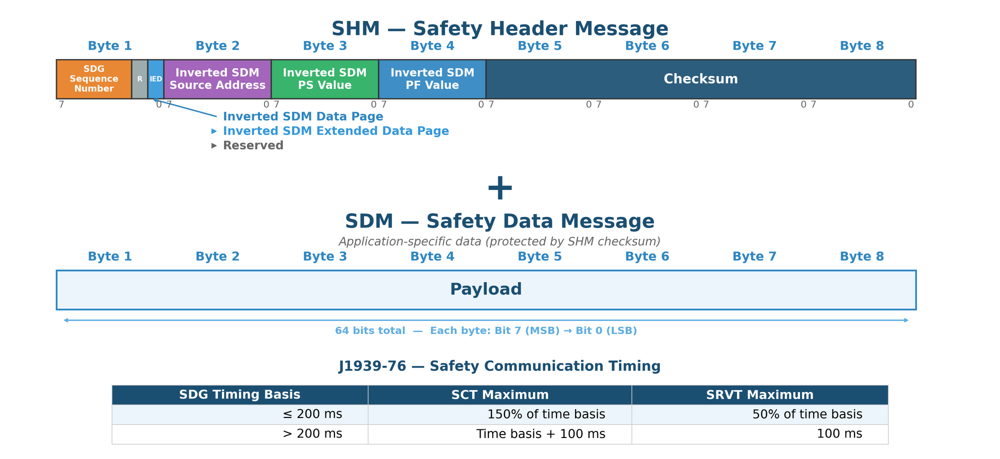
SHM Alan Açıklamaları
| Byte | Alan | Açıklama |
|---|---|---|
| 1 (bits 7-1) | SDG Sıra Numarası | Safety Data Group başına artımlı sayaç (0–127), mesaj kaybını veya tekrarını algılar |
| 1 (bit 0) | Ayrılmış | Gelecekte kullanım için ayrılmış |
| 1 (IED bits) | Ters Çevrilmiş Genişletilmiş Veri Sayfası / Veri Sayfası | Çapraz doğrulama için SDM'nin DP ve EDP alanlarının ters değerleri |
| 2 | Inverted SDM Kaynak Adresi | SDM'nin Kaynak Adres alanının bit düzeyinde tersi |
| 3 | Ters Çevrilmiş SDM PS Değeri | SDM'nin PDU Specific alanının bit düzeyinde tersi |
| 4 | Ters Çevrilmiş SDM PF Değeri | SDM'nin PDU Format alanının bit düzeyinde tersi |
| 5-8 | Sağlama Toplamı | SHM başlığı ve karşılık gelen SDM verisi üzerinden hesaplanan 32 bitlik CRC |
Güvenlik İletişim Zamanlaması
J1939-76, tüketicinin her Safety Data Group (SDG) için izlediği iki kritik zamanlama parametresi tanımlar:
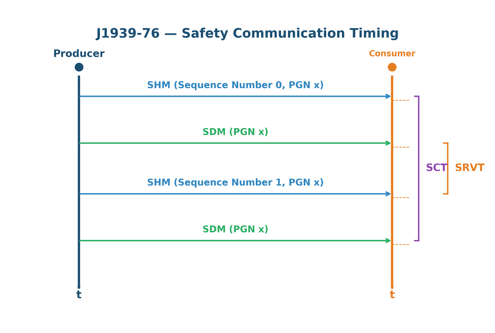
| Parametre | Tam Adı | Açıklama |
|---|---|---|
| SCT | Güvenlik İletişim Süresi | Aynı PGN için iki ardışık geçerli SHM/SDM çifti arasında izin verilen maksimum süre. Aşılırsa tüketici güvenli duruma geçer. |
| SRVT | Güvenlikle İlgili Geçerli Zaman Aşımı | Tek bir güvenlik veri grubunda SHM ve karşılık gelen SDM arasında izin verilen maksimum süre. Aşılırsa veri çifti atılır. |
Tüketici, güvenlik verilerini kabul etmeden önce şu kontrolleri yapmalıdır: (1) SDG Sıra Numarasının doğru şekilde arttığını doğrulayın, (2) SHM'deki ters tanımlayıcı alanlarının SDM'nin gerçek tanımlayıcı alanlarıyla eşleştiğini onaylayın, (3) 32 bitlik sağlama toplamını alınan veriye karşı doğrulayın ve (4) hem SCT hem de SRVT zamanlama kısıtlamalarının karşılandığını doğrulayın. Herhangi bir kontrol başarısız olursa, güvenlik verisi reddedilir ve uygulama tarafından tanımlanan arıza tepkisi tetiklenir.
Bölüm 15: CANopen Protokolü
CANopen, CAN in Automation (CiA) tarafından standartlaştırılmış CAN tabanlı bir uygulama katmanı protokolüdür. Ağırlıklı olarak CiA 301'de tanımlanan CANopen, endüstriyel otomasyon, tıbbi cihazlar, denizcilik sistemleri ve gömülü kontrolde yaygın olarak kullanılan standartlaştırılmış bir iletişim çerçevesi sağlar. CANopen, birlikte çalışabilir çok satıcılı ağları mümkün kılan bir cihaz modeli, iletişim profilleri ve yapılandırma mekanizmaları uygular.
Standart Geçmişi ve Spesifikasyon Belgeleri
CANopen başlangıçta Bosch tarafından geliştirilmiş ve bir Avrupa standardı (EN 50325-4) olarak yayınlanmıştır. CAN in Automation (CiA) uluslararası kullanıcılar ve üreticiler grubu spesifikasyonu sürdürür ve geliştirir. Temel spesifikasyon belgeleri şunlardır:
| Belge | Başlık | Kapsam |
|---|---|---|
| CiA 301 (DS 301) | CANopen Uygulama Katmanı | Çekirdek spesifikasyon: Nesne Sözlüğü, NMT, SDO, PDO, iletişim modeli |
| CiA 302 (DS 302) | Ek Uygulama Katmanı Fonksiyonları | NMT ana düğüm özellikleri, yüzen ana düğüm, başlatma, yapılandırma yönetimi |
| CiA 303-3 (DR 303-3) | Gösterge Spesifikasyonu | CAN ve cihaz durumu göstergesi için LED davranışı (yeşil/kırmızı desenleri) |
| CiA 305 | Katman Ayar Hizmetleri (LSS) | Ön yapılandırma olmadan CAN üzerinden Node-ID ve baud hızı ataması |
| CiA 306 | Elektronik Veri Sayfası (EDS) | Yapılandırma araçları için makine tarafından okunabilir cihaz açıklama formatı |
| CiA 4xx | Cihaz Profilleri | Alana özgü profiller (401: G/Ç, 402: Sürücüler, 404: Ölçüm, vb.) |
| CiA 1301 | CANopen FD | CAN FD ağları için genişletme: 64 bayt PDO/SDO, geliştirilmiş MPDO |
Ağ Yapısı
CANopen ağı, Ağ Yönetimi (NMT) protokolü tarafından koordine edilen bir master/slave mimarisini takip eder. Bir node NMT Master (tipik olarak PLC veya merkezi kontrolör) olarak görev yapar ve bus üzerindeki diğer tüm node'ların yaşam döngüsünü ve durum geçişlerini yönetir. Temel özellikler:
- Node-ID Ataması: Ağdaki her cihaza benzersiz bir Node-ID (1–127) atanır. Node-ID 0, NMT yayın komutları için ayrılmıştır. Node-ID, ilgili cihazın tüm varsayılan COB-ID'lerini belirler.
- NMT Durum Makinesi: Her node tanımlı bir durum makinesini takip eder: Başlatma → Pre-Operasyonel → Operasyonel → Durdurulmuş. NMT Master, NMT komutları (Start, Stop, Pre-Operasyonel, Reset Node, Reset Communication) ile geçişleri kontrol eder.
- Heartbeat / Node Guarding: Ağ sağlığı, Heartbeat (tercih edilen, üretici tarafından yönlendirilen) veya Node Guarding (eski, master tarafından sorgulanan) ile izlenir. Heartbeat mesajları, her node tarafından yapılandırılabilir aralıklarla iletilir ve NMT Master ile tüketicilerin node arızalarını tespit etmesini sağlar.
- Boot-Up Mesajı: Bir node başlatma işlemini tamamladığında, ağdaki varlığını duyurmak için bir boot-up mesajı (COB-ID = 0x700 + Node-ID) yayınlar.
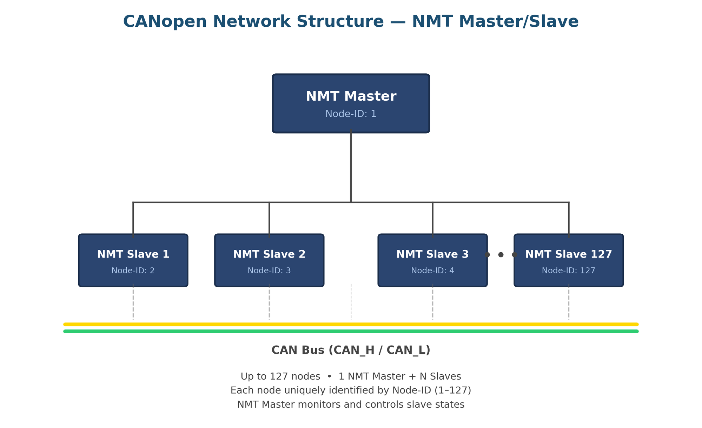
Cihaz Modeli
Her CANopen cihazı, CiA 301 tarafından tanımlanan standartlaştırılmış bir dahili yapı uygular. Cihaz modeli birbiriyle bağlantılı üç bileşenden oluşur: İletişim birimi (protokol yığını), Nesne Sözlüğü (merkezi veri deposu) ve Uygulama (cihaza özgü işlevler).
- İletişim Birimi: Gerçek zamanlı veri için PDO (Süreç Veri Nesnesi) alışverişi, yapılandırma ve parametreleme için SDO (Servis Veri Nesnesi) transferleri, NMT durum yönetimi, SYNC senkronizasyonu, EMCY acil durum mesajları ve TIME zaman damgası dağıtımı dahil tüm CAN bus etkileşimlerini yönetir.
- Nesne Sözlüğü (OD): Her CANopen cihazının merkezi veri yapısı — her biri isteğe bağlı 8-bit alt indeksli, 16-bit indeks girdilerinden (0x0000–0xFFFF) oluşan sıralı bir tablo. OD, tüm iletişim parametrelerini, cihaz profili girdilerini ve üreticiye özgü verileri içerir. 0x1000–0x1FFF indeksleri iletişim profili girdilerini; 0x6000–0x9FFF indeksleri cihaz profili girdilerini barındırır.
- Uygulama: Nesne Sözlüğünden okuyan ve yazan cihaza özgü işlevsellik (örn. motor kontrolü, sensör okuma, I/O yönetimi). Uygulama katmanı, OD aracılığıyla iletişim katmanından ayrılmıştır ve üretici uygulamasından bağımsız olarak cihaz verilerine standartlaştırılmış erişim sağlar.
Bu üç katmanlı mimari, herhangi bir CANopen uyumlu yapılandırma aracının standartlaştırılmış Nesne Sözlüğü arayüzü üzerinden ağdaki herhangi bir cihaza erişmesini, yapılandırmasını ve tanılamasını sağlayarak gerçek çoklu tedarikçi birlikte çalışabilirliğini mümkün kılar.
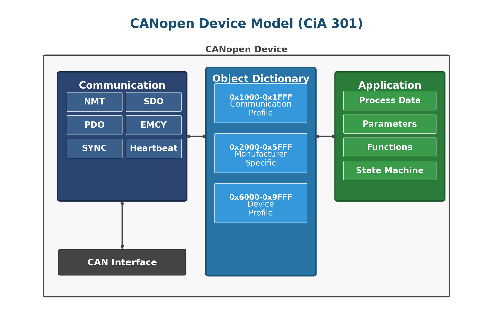
15.1 Mimari ve İletişim Nesneleri
Bir CANopen ağı, ağ durumunu koordine eden bir NMT Master ve bir veya daha fazla NMT Slave düğümünden oluşur. Her düğüm benzersiz bir Node-ID (1–127) ile tanımlanır ve standartlaştırılmış tahsis şemasına dayalı olarak her birine bir COB-ID (CAN Object Tanımlayıcı) atanan önceden tanımlanmış iletişim nesneleri aracılığıyla iletişim kurar.
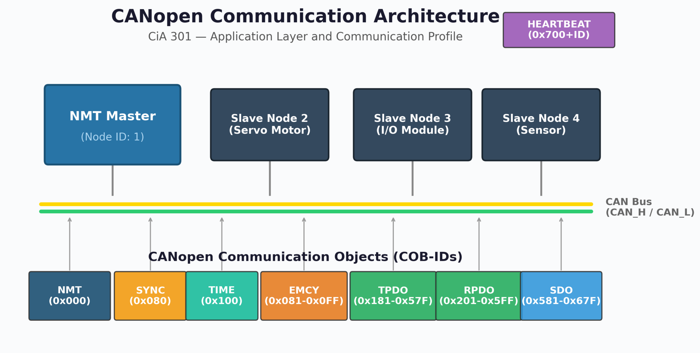
İletişim Nesne Türleri
Tüm iletişim nesneleri için önceden tanımlanmış COB-ID tahsisi Şekil 15-4'te gösterilmiştir.

NMT Durum Makinesi
Her CANopen düğümü, NMT Master tarafından iki baytlık NMT komutlarıyla (COB-ID 0x000) kontrol edilen aşağıdaki NMT durumlarından birinde çalışır:
| Durum | NMT Komutu | İzin Verilen Nesneler |
|---|---|---|
| Başlatma | — | Yalnızca başlatma mesajı |
| Operasyon Öncesi | 0x80 | SDO, EMCY, NMT, Heartbeat, SYNC, TIME |
| Operasyonel | 0x01 | Tüm nesneler (PDO + SDO + NMT + EMCY + Kalp Atışı + SYNC + TIME) |
| Durdurulmuş | 0x02 | Yalnızca NMT ve Kalp Atışı |
Güç verildiğinde, bir CANopen düğümü Başlatma'a girer, dahili kurulumu yürütür, ardından otomatik olarak Operasyon Öncesi durumuna geçer. COB-ID 0x700 + Node-ID üzerinde bir boot-up mesajı (durum 0x00 ile Heartbeat çerçevesi) göndererek varlığını duyurur. NMT Master, PDO iletişiminin başladığı Operasyonel durumuna girmek için "Start Remote Node" komutunu (0x01) vermeden önce SDO aracılığıyla düğümü yapılandırabilir.
15.2 SDO ve PDO Servisleri
CANopen, temelden farklı iki veri alışverişi mekanizması sağlar: yapılandırma ve parametre erişimi için SDO (Service Data Object) ve verimli gerçek zamanlı veri alışverişi için PDO (Process Data Object).
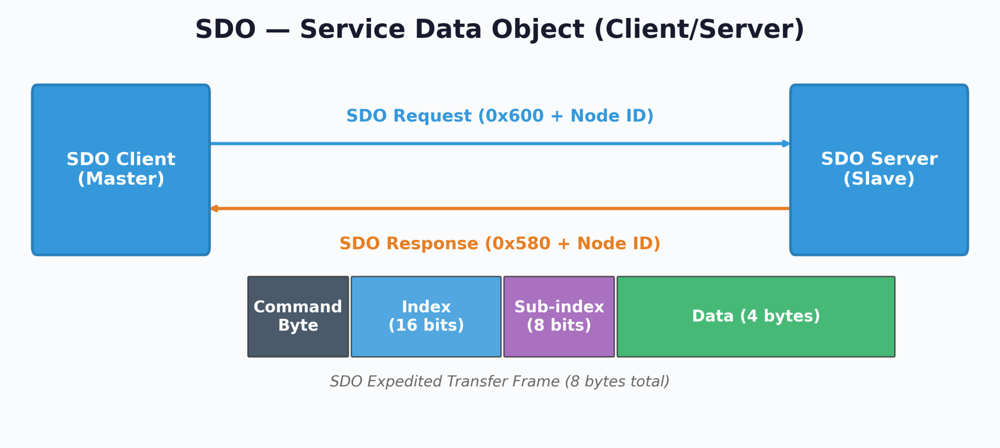
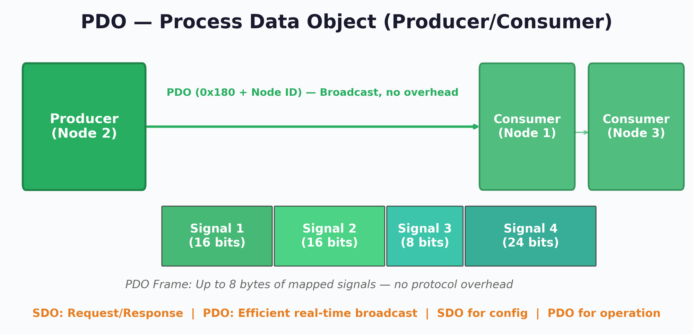
Servis Veri Nesnesi (SDO)
SDO, Nesne Sözlüğü girdilerini okumak ve yazmak için bir istemci/sunucu modeli kullanır. SDO istemcisi (genellikle yapılandırma aracı veya NMT Master) bir talep gönderir ve SDO sunucusu (hedef düğüm) yanıt verir. SDO üç aktarım modunu destekler:
| Mod | Veri Boyutu | Gereken Çerçeveler | Kullanım Senaryosu |
|---|---|---|---|
| Hızlandırılmış | 1–4 bayt | 1 talep + 1 yanıt | Tekil parametreler (düğüm kimliği, kalp atışı süresi, vb.) |
| Bölümlü | 5+ bayt | Başlat + N segment + onayla | Orta uzunlukta veri (dize parametreleri, diziler) |
| Blok | Büyük | Başlat + N blok + onayla | Yazılım indirme, büyük veri setleri |
SDO Çerçeve Yapısı
Bir SDO hızlandırılmış aktarım çerçevesi her zaman 8 bayttır ve aşağıdaki alanları içerir:
| Byte | Alan | Açıklama |
|---|---|---|
| 0 | Komut Baytı | Aktarım türü, yönü ve veri boyutu göstergesi |
| 1–2 | İndeks | 16-bit Nesne Sözlüğü indeksi (little-endian) |
| 3 | Alt indeks | OD girdisi içindeki 8-bit alt indeks |
| 4–7 | Data | En fazla 4 bayt parametre verisi (hızlandırılmış mod) |
Süreç Veri Nesnesi (PDO)
PDO’lar, bir CANopen ağında en verimli gerçek zamanlı veri alışverişini sağlar. SDO’nun aksine, PDO çerçeveleri protokol overhead’i taşımaz — 8 baytlık CAN yükünün tamamı süreç verisi için kullanılabilir. PDO’lar, bir düğümün PDO ilettiği ve herhangi sayıda düğümün alabileceği bir üretici/tüketici modeli kullanır.
PDO davranışı Object Dictionary aracılığıyla yüksek düzeyde yapılandırılabilir:
- Olay güdümlü: Eşlenen sinyal değiştiğinde PDO iletilir
- Zamanlayıcı tetiklemeli: PDO yapılandırılmış aralıkta iletilir (olay zamanlayıcısı)
- SYNC güdümlü: SYNC nesnesi alındığında PDO iletilir
- Uzak istek: PDO, bir RTR çerçevesine yanıt olarak iletilir
PDO eşlemesi, hangi Nesne Sözlüğü girdilerinin bir PDO çerçevesine paketlendiğini tanımlar. Statik eşleme, düğüm Operasyonel durumuna girmeden önce yapılandırılırken, dinamik eşleme (CiA 301) çalışma zamanında SDO aracılığıyla yeniden yapılandırmaya olanak tanır. Her eşlenen nesne İndeks, Alt indeks ve bit uzunluğu ile tanımlanır. Toplam eşlenen uzunluk 64 bit'i (8 bayt) aşmamalıdır. Örneğin, TPDO1 üç sensör değerini eşleyebilir: Temperature (0x6000:01'de 16 bit), Pressure (0x6000:02'de 16 bit) ve Durum (0x6001:00'da 8 bit), mevcut 64 bitin 40'ını kaplar.
15.3 Nesne Sözlüğü (Object Dictionary), EDS ve DCF
Nesne Sözlüğü (OD), her CANopen cihazının merkezi veri yapısıdır. Tüm cihaz parametrelerini, iletişim ayarlarını ve uygulama verilerini standartlaştırılmış bir dizine alınmış girdi seti olarak tanımlar. OD yapısı CiA 301'de belirtilen kurallara uyar ve iyi tanımlanmış adres aralıklarına bölünmüştür.
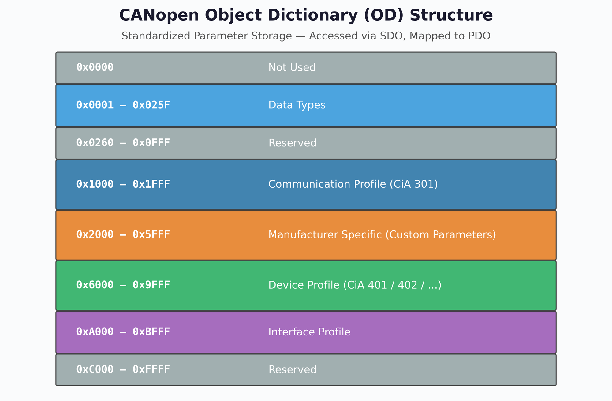

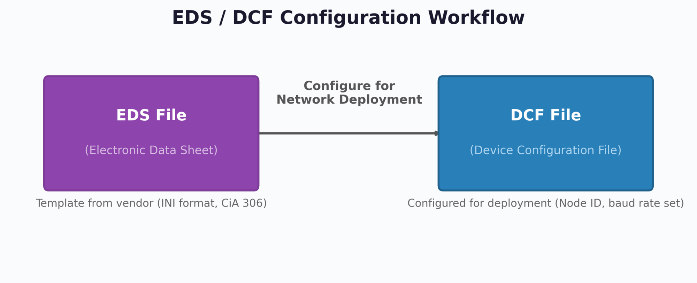
Nesne Sözlüğü Adres Aralıkları
| İndeks Aralığı | Bölüm | Açıklama |
|---|---|---|
| 0x0000 | Kullanılmıyor | Ayrılmış |
| 0x0001–0x025F | Veri Türleri | Standart ve karmaşık veri türü tanımları |
| 0x0260–0x0FFF | Ayrılmış | Gelecekteki CiA spesifikasyonları için ayrılmış |
| 0x1000–0x1FFF | İletişim Profili | CiA 301 parametreleri: Cihaz Tipi, Hata Kaydı, Kalp Atışı, SDO/PDO yapılandırması |
| 0x2000–0x5FFF | Üreticiye Özgü | Cihaz üreticisi tarafından tanımlanan özel parametreler |
| 0x6000–0x9FFF | Cihaz Profili | Standartlaştırılmış uygulama nesneleri (CiA 401 G/Ç, CiA 402 Sürücüler, vb.) |
| 0xA000–0xBFFF | Arayüz Profili | Ağ ve arayüzle ilgili parametreler |
| 0xC000–0xFFFF | Ayrılmış | Gelecekte kullanım için ayrılmış |
Temel İletişim Profili Girdileri
| İndeks | Ad | Tür | Erişim | Kategori |
|---|---|---|---|---|
| 0x1000 | Cihaz Türü | UNSIGNED32 | ro | Zorunlu |
| 0x1001 | Hata Kaydı | UNSIGNED8 | ro | Zorunlu |
| 0x1008 | Cihaz Adı | STRING | ro | İsteğe Bağlı |
| 0x1017 | Heartbeat Üretici Zamanı | UNSIGNED16 | rw | İsteğe Bağlı |
| 0x1018 | Kimlik Nesnesi | RECORD | ro | Zorunlu |
| 0x1200 | SDO Sunucu Parametresi | RECORD | ro | Zorunlu |
| 0x1400 | RPDO1 İletişim Parametresi | RECORD | rw | İsteğe Bağlı |
| 0x1600 | RPDO1 Eşleme Parametresi | RECORD | rw | İsteğe Bağlı |
| 0x1800 | TPDO1 İletişim Parametresi | RECORD | rw | İsteğe Bağlı |
| 0x1A00 | TPDO1 Eşleme Parametresi | RECORD | rw | İsteğe Bağlı |
EDS ve DCF Dosyaları
Elektronik Veri Sayfası (EDS), bir cihazın tam Nesne Sözlüğünü makine tarafından okunabilir INI benzeri metin formatında tanımlayan standartlaştırılmış bir dosyadır (CiA 306). EDS cihaz üreticisi tarafından sağlanır ve şunları içerir:
- İndeks, sub-index, veri türü ve erişim hakları ile tüm Nesne Sözlüğü girdileri
- Her parametre için varsayılan değerler ve değer aralıkları
- PDO eşleme yetenekleri ve iletişim parametreleri
- Cihaz tanımlama bilgisi (satıcı kimliği, ürün kodu, revizyon)
Cihaz Yapılandırma Dosyası (DCF), bir yapılandırma aracı tarafından EDS'den türetilir. EDS bir cihazın neler yapabileceğini tanımlarken, DCF belirli bir ağ yapılandırmasında ne yapacağını tanımlar. DCF şunları ekler:
- Atanmış Node-ID ve baud hızı
- Hedef uygulama için özel PDO eşleme yapılandırması
- Dağıtım için özelleştirilmiş parametre değerleri
- Heartbeat zamanlaması ve diğer ağa özgü ayarlar
Tipik CANopen devreye alma iş akışı, cihaz üreticisinin EDS dosyasını bir ağ yapılandırma aracına (ör. Vector CANopen Architect, Ixxat canAnalyser veya CODESYS) aktarmayla başlar. Araç, cihazın yeteneklerini görüntüler ve mühendisin PDO eşlemelerini, heartbeat zamanlamasını, Node-ID atamasını ve uygulama parametrelerini yapılandırmasına olanak tanır. Araç daha sonra her düğüm için Operasyon Öncesi aşamasında SDO aracılığıyla cihazlara indirilebilen veya başlangıçta otomatik yapılandırma için kalıcı bellekte saklanan bir DCF dosyası oluşturur.
Cihaz Profilleri
CiA, belirli cihaz kategorileri için Cihaz Profili alanındaki (0x6000–0x9FFF) OD girdilerini belirten standartlaştırılmış cihaz profilleri tanımlar:
| Profil | Açıklama | Tipik Uygulamalar |
|---|---|---|
| CiA 401 | Genel G/Ç Modülleri | Dijital/analog girişler ve çıkışlar |
| CiA 402 | Sürücüler ve Hareket Kontrolü | Servo motorlar, step motorlar, frekans invertörleri |
| CiA 404 | Ölçüm Cihazları | Sensörler, enkoder'ler, dönüştürücüler |
| CiA 406 | Enkoder Arayüzü | Mutlak ve artımlı enkoder'ler |
| CiA 410 | Eğim Ölçer | Eğim sensörleri, açı ölçümü |
| CiA 418 | Batarya Modülleri | Batarya yönetim sistemleri |
CiA 1301, klasik CANopen çerçevesini CAN FD ağlarına genişleten CANopen FD'yi tanımlar. Temel farklar şunlardır: SDO ve PDO yükleri tam 64 baytlık CAN FD kapasitesini kullanabilir, MPDO (Multiplexed PDO) desteği geliştirilmiştir ve yeni çerçeve formatları daha büyük veri alanlarını barındırır. Ancak CANopen FD düğümleri, bir protokol gateway'i olmadan aynı bus segmentinde klasik CANopen düğümleri ile doğrudan birlikte çalışamaz. Yeni tasarımlar için, 1 Mbps'de klasik CANopen ile karşılaştırıldığında artan bant genişliğinin ek karmaşıklığı ve azalan ekosistem olgunluğunu haklı çıkarıp çıkarmadığını dikkatli bir şekilde değerlendirin.
Bölüm 16: CAN DBC Dosya Formatı
Bir CAN DBC dosyası (CAN veritabanı), ham CAN bus verilerinin insan tarafından okunabilir fiziksel değerlere dönüştürülmesi için kuralları içeren yapılandırılmış bir metin dosyasıdır. DBC dosyaları mesajları, sinyalleri, kodlama parametrelerini ve meta verileri tanımlar — herhangi bir CAN ağını yorumlamak için temel "sözlük" görevi görür.
16.1 DBC Sözdizimi ve Yapısı
Bir DBC dosyası, her biri bir anahtar kelimeyle başlayan bölümler halinde düzenlenmiştir. En kritik iki bölüm mesajları (BO_) ve sinyalleri (SG_) tanımlar:
Mesaj Tanımı (BO_)
BO_ <CAN_ID> <MesajName>: <DLC> <Verici>
SG_ <SinyalName> : <BaşlangıçBiti>|<Length>@<BaytSırası><Sign> (<Ölçek>,<Offset>) [<Min>|<Max>] "<Unit>" <Receiver>| Alan | Açıklama | Kurallar |
|---|---|---|
| CAN_ID | Ondalık sistemde CAN tanımlayıcısı | 29 bit ID'ler için bit 31 genişletilmiş bayrak olarak ayarlanır (ID + 0x80000000) |
| MesajName | Benzersiz mesaj adı | 1–32 karakter, [A-z], rakamlar, alt çizgiler |
| DLC | Veri uzunluk kodu | Tam sayı 0–1785 (Klasik CAN için 8, CAN FD için 64'e kadar) |
| Verici | Gönderici düğüm adı | Bilinmiyorsa Vector__XXX |
Sinyal Tanımı (SG_)
| Alan | Açıklama | Örnek |
|---|---|---|
| BaşlangıçBiti | Yükte bit konumu (0-indeksli) | 24 |
| Uzunluk | Bit cinsinden sinyal uzunluğu | 16 |
| BaytSırası | @1 = Küçük-endian (Intel), @0 = Büyük-endian (Motorola) | @1 |
| Sign | + = işaretsiz, − = işaretli | + |
| Ölçek | Çarpım faktörü | 0.125 |
| Ofset | Ölçeklemeden sonra eklenir | 0 |
| [Min|Max] | Fiziksel değer aralığı | [0|8031.875] |
| Unit | Mühendislik birimi dizesi | "rpm" |
Tam DBC Örneği — J1939 Motor Hızı ve Araç Hızı
VERSION ""
NS_ :
CM_
BA_DEF_
BA_
BA_DEF_DEF_
BS_:
BU_:
BO_ 2364540158 EEC1: 8 Vector__XXX
SG_ EngineSpeed : 24|16@1+ (0.125,0) [0|8031.875] "rpm" Vector__XXX
BO_ 2566844926 CCVS1: 8 Vector__XXX
SG_ WheelBasedVehicleSpeed : 8|16@1+ (0.00390625,0) [0|250.996] "km/h" Vector__XXX
CM_ BO_ 2364540158 "Electronic Engine Controller 1";
CM_ SG_ 2364540158 EngineSpeed "Actual engine speed calculated over a
minimum crankshaft angle of 720 degrees divided by the number of cylinders.";
CM_ BO_ 2566844926 "Hız Sabitleme/Araç Hızı 1";
BA_DEF_ SG_ "SPN" INT 0 524287;
BA_DEF_ BO_ "VFrameFormat" ENUM "StandardCAN","ExtendedCAN","reserved","J1939PG";
BA_DEF_ "BusType" STRING ;
BA_DEF_ "ProtocolType" STRING ;
BA_DEF_DEF_ "SPN" 0;
BA_DEF_DEF_ "VFrameFormat" "J1939PG";
BA_DEF_DEF_ "BusType" "";
BA_DEF_DEF_ "ProtocolType" "";
BA_ "ProtocolType" "J1939";
BA_ "BusType" "CAN";
BA_ "VFrameFormat" BO_ 2364540158 3;
BA_ "SPN" SG_ 2364540158 EngineSpeed 190;J1939, 29 bit genişletilmiş CAN ID'leri kullanır. DBC dosyalarında, genişletilmiş ID bayrağı CAN ID'ye 0x80000000 eklenerek saklanır. Örneğin, CAN ID 0x0CF00400, DBC ID 2364540158 olur (= 0x0CF00400 + 0x80000000 = 0x8CF00400 = 2364539904 + 254). The VFrameFormat attribute "J1939PG" identifies this message as a J1939 Parameter Group.
16.2 Sinyal Çözümleme (Sinyal Decoding)
Çözümleme süreci, ham CAN veri baytlarını doğrusal formül kullanarak fiziksel mühendislik değerlerine dönüştürür:
Adım Adım Örnek: Ham CAN Çerçevesinden Motor Hızı Çözümleme
Ham CAN çerçevesi verildiğinde:
CAN ID: 0CF00400 Data: FF FF FF 68 13 FF FF FFAdım 1 — Mesajı tanımlayın: CAN ID 0x0CF00400 matches DBC message EEC1 (ID 2364540158 with extended flag).
Adım 2 — Ham sinyal baytlarını çıkarın: Sinyal EngineSpeed starts at bit 24 (byte 3, bit 0) with length 16 bits. The raw bytes at positions 3–4 are 0x68 and 0x13.
Adım 3 — Bayt sırası uygulama: Little-endian (@1) → LSB önce: ham değer = 0x1368 = 4968 ondalık.
Adım 4 — Ölçek ve ofset uygulayın:
Bayt Sırası: Intel vs Motorola
Bayt sırası, çok baytlık sinyallerin CAN veri alanından nasıl çıkarıldığını önemli ölçüde etkiler:
| Özellik | Intel (@1) — Küçük Endian | Motorola (@0) — Büyük Endian |
|---|---|---|
| LSB Konumu | Başlangıç bitinde | Başlangıç bitinde |
| MSB Konumu | Daha yüksek bayt adresleri | Daha düşük bayt adresleri |
| Bayt Doldurma Yönü | LSB → MSB: soldan sağa | MSB → LSB: sağdan sola |
| Yaygın Kullanım | J1939, çoğu Avrupalı OEM | Birçok Asyalı OEM, bazı eski sistemler |
Yanlış bayt sırası kullanmak, hatalı CAN sinyal çözümlemesinin en yaygın tek kaynağıdır. Çözümlenen değerler büyüklük sıralarıyla yanlış görünüyorsa veya beklenmedik negatif sayılar üretiyorsa, önce bayt sırası ayarını doğrulayın. J1939 sinyalleri her zaman little-endian (Intel)'dır, ancak OEM'e özgü CAN mesajları her iki düzeni kullanabilir.
16.3 Gelişmiş DBC Özellikleri
Yorumlar (CM_)
DBC dosyaları mesajlar, sinyaller ve genel açıklamalar için yorumları destekler:
CM_ BO_ 2364540158 "Electronic Engine Controller 1";
CM_ SG_ 2364540158 EngineSpeed "Actual engine speed.";
CM_ "This DBC file covers the J1939 powertrain network.";Nitelikler (BA_DEF_ / BA_)
Öznitelikler, DBC meta verilerini özel özelliklerle genişletir. Yaygın öznitelikler şunlardır:
| Nitelik | Kapsam | Açıklama |
|---|---|---|
| BusType | Genel | Bus türü dizisi ("CAN", "CAN FD") |
| ProtocolType | Genel | Protokol tanımlayıcısı ("J1939", "OBD2") |
| VFrameFormat | Mesaj | Çerçeve formatı (StandardCAN, ExtendedCAN, J1939PG) |
| SPN | Sinyal | SAE J1939 Şüpheli Parametre Numarası |
| GenMsgCycleTime | Mesaj | Nominal iletim döngü süresi (ms) |
| SystemSinyalLongSymbol | Sinyal | Genişletilmiş sinyal adı (32 karakter sınırının ötesinde) |
Sinyal Çoklaması (Multiplexing)
Çoğullama, bir çoğullayıcı sinyalin değerine bağlı olarak aynı CAN ID'nin farklı sinyaller taşımasına olanak tanır. Bu, OBD-II'de (PID çoğullayıcı rolü oynar), UDS ve CCP/XCP protokollerinde kullanılır:
BO_ 2024 OBD2_Response: 8 ECU
SG_ ServiceMode m : 0|8@1+ (1,0) [0|255] "" Tester
SG_ PID m : 8|8@1+ (1,0) [0|255] "" Tester
SG_ EngineRPM m12 : 16|16@1+ (0.25,0) [0|16383.75] "rpm" Tester
SG_ VehicleSpeed m13 : 16|8@1+ (1,0) [0|255] "km/h" Tester
SG_ CoolantTemp m5 : 16|8@1+ (1,-40) [-40|215] "°C" TesterSG_ tanımında, sinyal adından sonra gelen m çoğullayıcı sinyali belirtir. m12, çoğullayıcı değeri 12'ye eşit olduğunda (PID 0x0C = Motor Devri) bu sinyalin geçerli olduğu anlamına gelir. m13, PID = 0x0D (Araç Hızı) olduğunda geçerlidir. Bu mekanizma, tek bir CAN ID'nin yüzlerce farklı parametre taşımasını sağlar — DBC aracı çoğullayıcı değerine göre doğru çözümleme kuralını seçer.
DBC Dosya Araçları ve Ekosistemi
| Araç | Tür | DBC Yeteneği |
|---|---|---|
| Vector CANdb++ | Ticari Editör | Tam DBC oluşturma, düzenleme, doğrulama |
| PEAK Symbol Editor | Ücretsiz Editör | DBC oluşturma ve sembol yönetimi |
| SavvyCAN | Açık Kaynak | DBC kod çözme, tersine mühendislik |
| cantools (Python) | Açık Kaynak Library | DBC'yi programatik olarak ayrıştırma, kodlama ve çözümleme |
| asammdf (Python) | Açık Kaynak Library | MF4 günlük dosyaları + DBC kod çözme + grafik çizme |
| CANalyzer / CANoe | Ticari | Gerçek zamanlı DBC çözümleme, simülasyon, test |
Standartlaştırılmış DBC dosyaları J1939 (SAE'den — tüm standart PGN'leri/SPN'leri kapsar), OBD-II (standart PID'ler) ve ISOBUS için mevcuttur. Bunlar, o protokolü kullanan herhangi bir araç veya makinede standart parametrelerin anında çözümlenmesine olanak tanır. Üreticiye özgü sinyaller (tescilli PGN'ler, özel PID'ler) genellikle gizli olan OEM'e özgü DBC dosyaları gerektirir.
Bölüm 17: CAN Bus Veri Kaydı ve Analizi
Veri kaydı, CAN bus mühendisliğinde temel bir uygulamadır — mühendislerin geliştirme, tanılama, uyumluluk ve filo yönetimi için gerçek zamanlı bus trafiğini yakalamasını, depolamasını ve analiz etmesini sağlar. Bu bölüm, donanım arayüzlerinden ve dosya formatlarından yazılım araçlarına ve Python tabanlı analiz tekniklerine kadar tam veri kayıt sürecini kapsar.
17.1 CAN Veri Kaydına Giriş
CAN veri kaydı, çevrimdışı analiz için ham veya çözümlenmiş bus mesajlarını yakalar. Kaydedilen veriler zaman damgaları, CAN ID'leri, DLC (Veri Uzunluk Kodu) ve veri yükünü içerebilir — mühendislerin bus üzerinde meydana gelen olayların tam sırasını yeniden oluşturmasını sağlar.
CAN Verileri Neden Kaydedilir?
- Geliştirme ve Test: ECU kalibrasyonu, protokol doğrulama, regresyon testi ve entegrasyon doğrulama
- Tanılama ve Sorun Giderme: Aralıklı arızaları yakalama, DTC kaydı, arıza tekrarı ve kök neden analizi
- Filo İzleme: Uzaktan tanılama, kestirimci bakım, yakıt verimliliği takibi ve OTA güncelleme doğrulaması
- Uyumluluk ve Sertifikasyon: Emisyon verisi kaydı (J1939/OBD-II), tip onay belgeleri ve denetim izleri
- Olay Analizi: Kaza sonrası veri çıkarımı, olay yeniden yapılandırması ve sorumluluk belgeleri
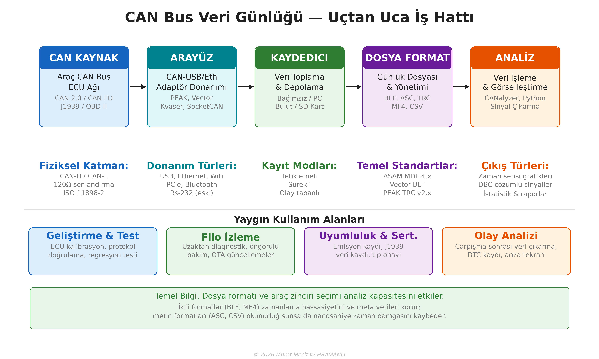
Kayıt Mimarisi
Tipik bir CAN veri kayıt kurulumu beş aşamadan oluşur:
- CAN Kaynağı: Araç veya cihaz CAN bus'ı (CAN 2.0A/B, CAN FD, J1939, OBD-II)
- Arayüz Donanımı: CAN-USB, CAN-Ethernet veya CAN-WiFi adaptörü
- Veri Toplama: Logger yazılımı veya bağımsız donanım kaydı
- Dosya Formatı: BLF, ASC, TRC, MF4/MDF veya CSV dosyaları
- Analiz ve Görselleştirme: Sinyal çıkarımı, grafikleme, istatistikler ve raporlama
17.2 CAN Log Dosya Formatları
Log dosya formatı seçimi, depolama verimliliğini, analiz yeteneğini ve araç uyumluluğunu önemli ölçüde etkiler. CAN ekosistemindeki en yaygın beş format BLF, ASC, TRC, MF4 ve CSV'dir.
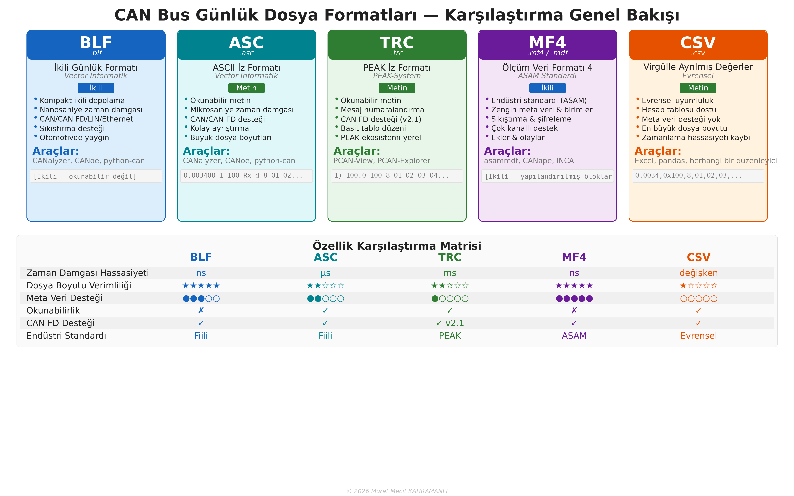
BLF — İkili Kayıt Formatı (Vector)
BLF, otomotiv endüstrisinde yaygın olarak kullanılan Vector Informatik'in tescilli ikili formatıdır. Nanosaniye zaman damgası hassasiyeti ile kompakt depolama sunar ve CAN, CAN FD, LIN ve Otomotiv Ethernet'i destekler. BLF dosyaları CANalyzer, CANoe ve açık kaynak python-can kütüphanesi tarafından okunabilir.
# Reading a BLF file with python-can
import can
log = can.BLFReader('vehicle_trace.blf')
for msg in log:
print(f" {msg.timestamp:.6f} ID: 0x{msg.arbitration_id:03X} "
f"DLC: {msg.dlc} Data: {msg.data.hex()}")ASC — ASCII İzleme Formatı (Vector)
ASC, Vector'dan gelen, insan tarafından okunabilir bir metin formatıdır. Her satır bir zaman damgası, kanal, CAN ID, yön, DLC ve veri baytları içerir. Okunması ve ayrıştırılması kolay olsa da, ASC dosyaları BLF'den önemli ölçüde büyüktür ve mikrosaniye (nanosaniye değil) hassasiyetine sahiptir.
date Wed Jan 15 10:23:45.123 am 2025
base hex timestamps absolute
0.003400 1 100 Rx d 8 01 02 03 04 05 06 07 08
0.008200 1 200 Rx d 8 A1 B2 C3 D4 E5 F6 07 18
0.013100 1 7DF Tx d 8 02 01 00 00 00 00 00 00TRC — PEAK İzleme Formatı
TRC, PEAK-System'ın yerel izleme formatıdır. Sürüm 1.x yalnızca CAN 2.0'ı desteklerken, sürüm 2.1 CAN FD desteği ekler. TRC dosyaları, mesaj numaralandırması ile basit tablo düzenli metin kullanır.
;$FILEVERSION=2.1
; Start time: 15.01.2025 10:23:45.123
;
; Mesaj Number) Time ID DLC Data Bytes
1) 0.0 100 8 01 02 03 04 05 06 07 08
2) 100.0 200 8 A1 B2 C3 D4 E5 F6 07 18
3) 200.0 7DF 8 02 01 00 00 00 00 00 00MF4/MDF — Ölçüm Veri Formatı (ASAM)
MDF (Measurement Data Format), ölçüm verisi depolama için ASAM standardıdır. MDF4 (dosya uzantısı .mf4 veya .mdf) güncel sürümdür; zengin meta veriler, sıkıştırma, çok kanallı destek ve gömülü ekler sunar. Profesyonel otomotiv veri toplama için önerilen formattır.
CSV — Virgülle Ayrılmış Değerler
CSV, neredeyse her araç tarafından desteklenen evrensel bir metin formatıdır. Elektronik tablolar ve betiklerle kullanımı kolay olsa da, CSV dosyaları en büyük format seçeneğidir, meta veri desteği sunmaz ve metin tabanlı sayı gösterimi nedeniyle zamanlama hassasiyetini kaybeder.
timestamp,id,dlc,data
0.003400,0x100,8,01 02 03 04 05 06 07 08
0.008200,0x200,8,A1 B2 C3 D4 E5 F6 07 18
0.013100,0x7DF,8,02 01 00 00 00 00 00 00| Özellik | BLF | ASC | TRC | MF4 | CSV |
|---|---|---|---|---|---|
| Tür | İkili | Metin | Metin | İkili | Metin |
| Zaman Damgası Hassasiyeti | ns | μs | ms | ns | değişken |
| Dosya Boyutu Verimliliği | Mükemmel | Zayıf | Zayıf | Mükemmel | En Kötü |
| Meta Veri Desteği | Orta Düzey | Düşük | Düşük | Mükemmel | Yok |
| İnsan Tarafından Okunabilir | Hayır | Evet | Evet | Hayır | Evet |
| CAN FD Desteği | Evet | Evet | v2.1+ | Evet | Evet |
| Sıkıştırma | Evet | Hayır | Hayır | Evet (zlib) | Hayır |
| Birincil Araç | CANalyzer | CANalyzer | PCAN-View | CANape/asammdf | Any |
17.3 ASAM MDF Standardı
ASAM Measurement Data Format (MDF), otomotiv geliştirmede ölçüm verilerini depolamak için endüstri standardı ikili dosya formatıdır. Güncel sürüm MDF4 (ASAM MDF v4.x), eski MDF3 formatının yerini almıştır ve tüm büyük ölçüm araçları tarafından desteklenir.
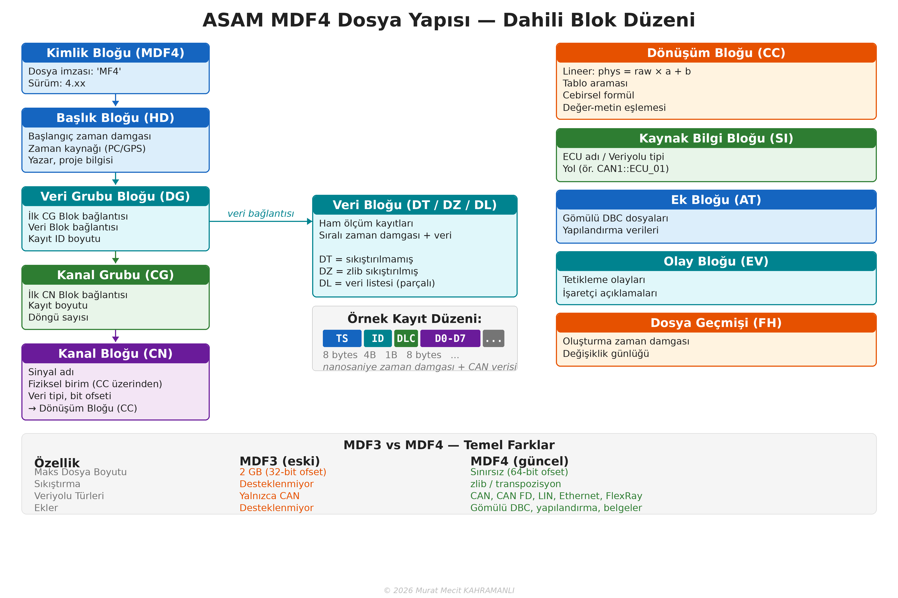
MDF4 Blok Hiyerarşisi
Bir MDF4 dosyası, türlenmiş blokların bağlantılı listesi olarak düzenlenmiştir:
- ID Bloğu: Dosya imzası ('MF4') ve sürüm tanımlayıcı
- Başlık Bloğu (HD): Başlangıç zaman damgası, zaman kaynağı (PC saati, GPS, PTP), yazar ve proje meta verileri
- Veri Grubu Bloğu (DG): Kanal Grubu ve Veri bloklarına bağlantılar; kayıt yapısını tanımlar
- Kanal Grubu Bloğu (CG): Paylaşılan zaman damgalarıyla ilgili kanalları (sinyalleri) gruplar
- Kanal Bloğu (CN): Ad, birim, veri türü ve bit ofseti ile bireysel sinyal tanımları
- Dönüştürme Bloğu (CC): Fiziksel değer dönüştürme kuralları (doğrusal, tablo, cebirsel, değer-metin)
- Veri Bloğu (DT/DZ/DL): Ham ölçüm kayıtları — DT (sıkıştırılmamış), DZ (zlib sıkıştırılmış), DL (parçalı veri listesi)
MDF4'ün MDF3'e Göre Avantajları
| Özellik | MDF3 (Eski) | MDF4 (Güncel) |
|---|---|---|
| Maks. Dosya Boyutu | 2 GB (32-bit offsets) | Sınırsız (64-bit ofsetler) |
| Sıkıştırma | Desteklenmiyor | zlib / transpozisyon |
| Bus Türleri | Yalnızca CAN | CAN, CAN FD, LIN, Ethernet, FlexRay |
| Ekler | Desteklenmiyor | Gömülü DBC, yapılandırma, belgeleme |
| Olaylar | Temel işaretçiler | Meta verili zengin olay blokları |
| Şifreleme | Desteklenmiyor | AES-128/256 şifreleme |
| XML Meta Verisi | Desteklenmiyor | Yapılandırılmış XML meta veri blokları |
17.4 CAN Kayıt Donanımı
CAN kayıt donanımı, PC tabanlı kayıt için basit USB adaptörlerinden araçlarda otonom olarak çalışan gelişmiş bağımsız veri logger'larına kadar uzanır. Seçim, kullanım senaryosuna, bütçeye ve gerekli özelliklere bağlıdır.
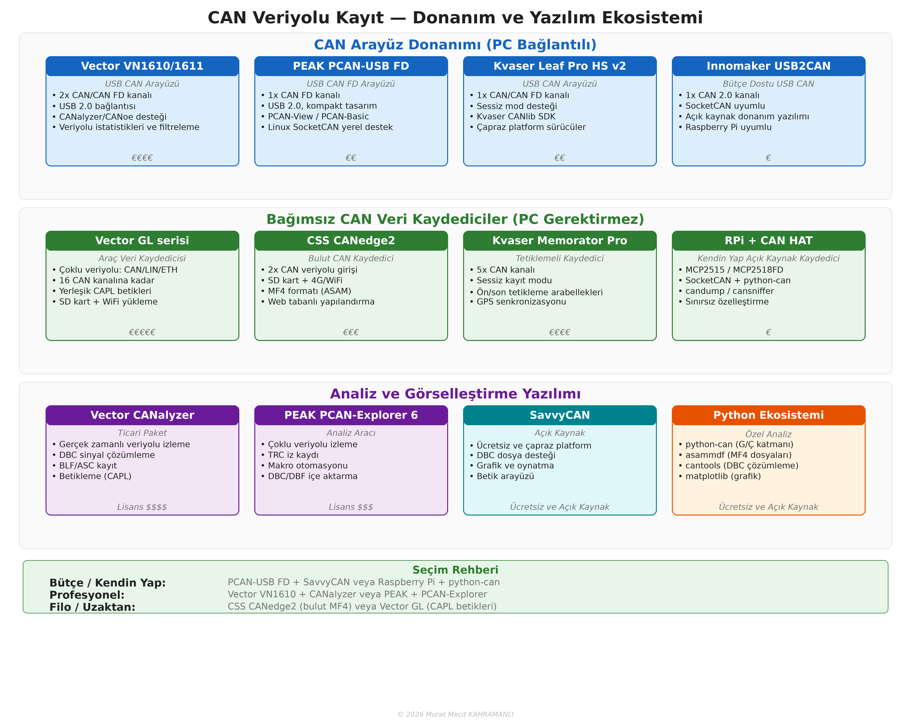
PC Bağlantılı CAN Arayüzleri
Bu cihazlar USB, Ethernet veya PCIe aracılığıyla bir PC'ye bağlanır ve kayıt için eşlik eden yazılım gerektirir:
| Cihaz | Bağlantı | CAN FD | Kanal | Yazılım | Fiyat Aralığı |
|---|---|---|---|---|---|
| Vector VN1610/1611 | USB 2.0 | Evet | 2 | CANalyzer/CANoe | €€€€ |
| PEAK PCAN-USB FD | USB 2.0 | Evet | 1 | PCAN-View/PCAN-Temel | €€ |
| Kvaser Leaf Pro HS v2 | USB 2.0 | Evet | 1 | Kvaser CANlib SDK | €€ |
| Innomaker USB2CAN | USB 2.0 | Hayır | 1 | SocketCAN (Linux) | € |
| Intrepid ValueCAN 4-2 | USB 2.0 | Evet | 2 | Vehicle Spy | €€€ |
Bağımsız CAN Veri Logger'ları
Bağımsız logger'lar PC olmadan çalışır, doğrudan SD kartlara, dahili belleğe kaydeder veya bulut hizmetlerine yükler:
- Vector GL serisi: 16'ya kadar CAN kanalı, CAPL betikleme ve WiFi/4G yükleme özellikli profesyonel araç veri logger'ları. OEM geliştirme ve filo testlerinde yaygın olarak kullanılır.
- CSS Electronics CANedge2: 2 CAN kanalı, SD kart + 4G/WiFi ile kompakt bulut bağlantılı CAN logger, ASAM MF4 formatında kayıt. Web tabanlı yapılandırma özelliğine sahip.
- Kvaser Memorator Pro 5×HS: Tetik tabanlı kayıt, ön/son tetik tamponları, GPS senkronizasyonu ve sessiz bus çalışması ile 5 kanallı CAN logger.
- Raspberry Pi + CAN HAT: MCP2515 veya MCP2518FD CAN kontrolörleri kullanan kendin yap açık kaynak logger. Minimum maliyetle sınırsız özelleştirme için SocketCAN + python-can çalıştırır.
Linux SocketCAN Kurulumu
Bütçe dostu ve yüksek düzeyde özelleştirilebilir kayıt için Linux SocketCAN, yerel çekirdek düzeyinde CAN arayüzü sağlar:
# Set up CAN interface
$ sudo ip link set can0 type can bitrate 500000
$ sudo ip link set can0 up
# Temel logging with candump
$ candump -l can0 # Log to candump-*.log
$ candump -L can0 > trace.asc # Log in ASC format
# Advanced: python-can with SocketCAN
import can
bus = can.interface.Bus(channel='can0', interface='socketcan')
logger = can.BLFWriter('capture.blf')
notifier = can.Notifier(bus, [logger])
# ... recording in background ...17.5 Analiz Yazılımı ve Python Ekosistemi
CAN veri analizi, ticari GUI araçlarından açık kaynak Python kütüphanelerine kadar uzanır. Python ekosistemi, otomatik, betiklenebilir ve tekrarlanabilir analiz iş akışları için özellikle güçlü hale gelmiştir.
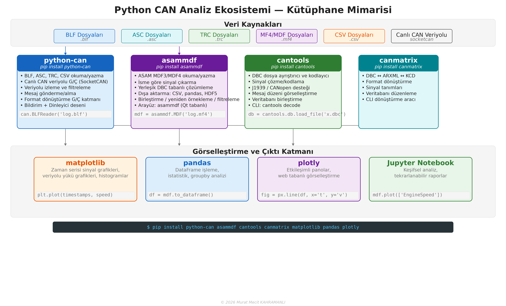
Ticari Analiz Araçları
| Araç | Satıcı | Temel Özellikler | Lisans |
|---|---|---|---|
| CANalyzer | Vector | Bus izleme, DBC çözümleme, BLF/ASC kaydı, CAPL betikleme | Ticari |
| CANoe | Vector | Tam simülasyon + analiz, ağ tasarımı, otomatik test | Ticari |
| PCAN-Explorer 6 | PEAK-System | Çoklu bus izleme, TRC kaydı, makrolar, DBC içe aktarım | Ticari |
| Vehicle Spy | Intrepid CS | Çoklu protokol analizi, betikleme, simülasyon | Ticari |
| SavvyCAN | Open-source | Ücretsiz, çapraz platform, DBC desteği, grafikleme, betikleme | Ücretsiz (GPL) |
CAN Analizi için Python Kütüphaneleri
python-can — Python için temel CAN kütüphanesi. BLF, ASC, TRC ve CSV dosyalarını okuma/yazma için birleşik bir arayüz sunar ve SocketCAN, PCAN, Kvaser ve Vector arayüzleri aracılığıyla canlı CAN bus G/Ç sağlar.
import can
# Read a BLF file and print all messages
log = can.BLFReader('vehicle_trace.blf')
for msg in log:
print(f" {msg.timestamp:.6f} 0x{msg.arbitration_id:03X} "
f"[{msg.dlc}] {msg.data.hex(' ')}")
# Convert BLF to ASC
with can.BLFReader('input.blf') as reader:
with can.ASCWriter('output.asc') as writer:
for msg in reader:
writer.on_message_received(msg)asammdf — ASAM MDF3/MDF4 dosyaları için birincil kütüphane. İsme göre sinyal çıkarımı, DBC tabanlı çözümleme, CSV/pandas/HDF5'e dışa aktarım destekler ve Qt tabanlı bir GUI ile birlikte gelir.
from asammdf import MDF
# Open an MF4 file
mdf = MDF('measurement.mf4')
# Extract specific signals
speed = mdf.get('VehicleSpeed')
rpm = mdf.get('EngineRPM')
# Export to pandas DataFrame
df = mdf.to_dataframe()
# Apply DBC decoding
mdf_decoded = mdf.extract_bus_logging(
database_files={'CAN': ['vehicle.dbc']}
)cantools — Bir DBC dosya ayrıştırıcı ve sinyal çözümleyici/kodlayıcı. J1939 ve CANopen protokol uzantılarını destekler. Hem Python API hem de komut satırı arayüzü sağlar.
import cantools
# Load DBC database
db = cantools.db.load_file('vehicle.dbc')
# Decode a CAN message
msg_def = db.get_message_by_frame_id(0x100)
decoded = msg_def.decode(b'\x01\x02\x03\x04\x05\x06\x07\x08')
print(decoded)
# {'EngineSpeed': 1234.5, 'VehicleSpeed': 67.8, ...}
# Encode a CAN message
data = msg_def.encode({'EngineSpeed': 1500.0, 'VehicleSpeed': 80.0})
print(data.hex())canmatrix — Bir CAN veritabanı dönüştürme kütüphanesi. DBC, ARXML (AUTOSAR), KCD (Kayak), SYM ve diğer veritabanı formatları arasında dönüştürme yapar.
import canmatrix
# Convert DBC to ARXML
canmatrix.formats.convert('vehicle.dbc', 'vehicle.arxml')
# Load and inspect a database
db = canmatrix.formats.loadp('vehicle.dbc')
for msg in db:
print(f" 0x{msg.arbitration_id.id:03X} {msg.name} "
f"DLC={msg.size} Sinyals={len(msg.signals)}")17.6 Python ile Pratik Analiz
Bu bölüm, Python ekosistemini kullanarak tam analiz iş akışlarını göstermektedir.
İş Akışı 1: BLF Log → DBC Çözümleme → Grafik
import can
import cantools
import matplotlib.pyplot as plt
# Load DBC and BLF
db = cantools.db.load_file('vehicle.dbc')
log = can.BLFReader('drive_test.blf')
# Collect decoded signals
timestamps = []
speeds = []
rpms = []
for msg in log:
try:
msg_def = db.get_message_by_frame_id(msg.arbitration_id)
decoded = msg_def.decode(msg.data)
if 'VehicleSpeed' in decoded:
timestamps.append(msg.timestamp)
speeds.append(decoded['VehicleSpeed'])
if 'EngineRPM' in decoded:
rpms.append(decoded['EngineRPM'])
except (KeyError, cantools.db.DecodeError):
pass # Unknown message or decode error
# Plot results
fig, (ax1, ax2) = plt.subplots(2, 1, figsize=(14, 8), sharex=True)
ax1.plot(timestamps[:len(speeds)], speeds, color='#1565C0', linewidth=1)
ax1.set_ylabel('Vehicle Speed (km/h)')
ax1.set_title('CAN Bus Log Analysis — DBC Decoded Sinyals')
ax1.grid(True, alpha=0.3)
ax2.plot(timestamps[:len(rpms)], rpms, color='#2E7D32', linewidth=1)
ax2.set_ylabel('Engine RPM')
ax2.set_xlabel('Time (seconds)')
ax2.grid(True, alpha=0.3)
plt.tight_layout()
plt.savefig('analysis_output.png', dpi=150)
plt.show()İş Akışı 2: asammdf ile MF4 Sinyal Çıkarımı
from asammdf import MDF
import matplotlib.pyplot as plt
# Open MF4 and extract signals
mdf = MDF('fleet_recording.mf4')
# List all available signals
for i, group in enumerate(mdf.groups):
for ch in group.channels:
print(f" Group {i}: {ch.name} [{ch.unit}]")
# Extract and plot specific signals
speed = mdf.get('VehicleSpeed')
fuel_rate = mdf.get('FuelRate')
coolant = mdf.get('CoolantTemperature')
fig, axes = plt.subplots(3, 1, figsize=(14, 10), sharex=True)
axes[0].plot(speed.timestamps, speed.samples, color='#1565C0')
axes[0].set_ylabel('Speed (km/h)')
axes[1].plot(fuel_rate.timestamps, fuel_rate.samples, color='#E65100')
axes[1].set_ylabel('Fuel Rate (L/h)')
axes[2].plot(coolant.timestamps, coolant.samples, color='#2E7D32')
axes[2].set_ylabel('Coolant Temp (°C)')
axes[2].set_xlabel('Time (s)')
for ax in axes:
ax.grid(True, alpha=0.3)
plt.suptitle('MF4 Sinyal Analysis — Fleet Recording', fontsize=14)
plt.tight_layout()
plt.savefig('mf4_analysis.png', dpi=150)İş Akışı 3: J1939 Log Analizi
import can
import cantools
# Load J1939 DBC
j1939_db = cantools.db.load_file('J1939.dbc')
# Read log file
log = can.BLFReader('truck_highway.blf')
# J1939 PGN extraction
engine_data = []
for msg in log:
# Extract PGN from 29-bit CAN ID
pgn = (msg.arbitration_id >> 8) & 0x3FFFF
if pgn == 0xF004: # Elektronik Motor Kontrolörü 1 (EEC1)
decoded = j1939_db.get_message_by_frame_id(
msg.arbitration_id).decode(msg.data)
engine_data.append({
'time': msg.timestamp,
'rpm': decoded.get('EngineSpeed', 0),
'torque': decoded.get('ActualEngineTorque', 0),
'load': decoded.get('DriversDemandEnginePercentTorque', 0),
})
print(f"Collected {len(engine_data)} EEC1 messages")
print(f"RPM range: {min(d['rpm'] for d in engine_data):.0f} - "
f"{max(d['rpm'] for d in engine_data):.0f}")17.7 Format Dönüştürme İş Akışları
CAN log formatları arasında dönüştürme, araç değiştirirken veya farklı analiz süreçleri için veri hazırlarken yaygın bir görevdir. Python kütüphaneleri bunu basitleştirir.
Yaygın Dönüştürme Yolları
| Kaynak → Hedef | Araç / Kütüphane | Komut / Kod |
|---|---|---|
| BLF → ASC | python-can | can.BLFReader → can.ASCWriter |
| BLF → CSV | python-can | can.BLFReader → can.CSVWriter |
| BLF → MF4 | asammdf | MDF.from_bus_logging from BLF source |
| ASC → BLF | python-can | can.ASCReader → can.BLFWriter |
| TRC → BLF | python-can | can.TRCReader → can.BLFWriter |
| MF4 → CSV | asammdf | mdf.to_dataframe().to_csv() |
| MF4 → pandas | asammdf | mdf.to_dataframe() |
| DBC → ARXML | canmatrix | canmatrix.formats.convert() |
Evrensel Dönüştürücü Betiği
#!/usr/bin/env python3
"""Universal CAN log format converter using python-can."""
import can
import sys
READERS = {
'.blf': can.BLFReader,
'.asc': can.ASCReader,
'.trc': can.TRCReader,
'.csv': can.CSVReader,
}
WRITERS = {
'.blf': can.BLFWriter,
'.asc': can.ASCWriter,
'.csv': can.CSVWriter,
}
def convert(input_file, output_file):
in_ext = '.' + input_file.rsplit('.', 1)[-1].lower()
out_ext = '.' + output_file.rsplit('.', 1)[-1].lower()
reader_cls = READERS.get(in_ext)
writer_cls = WRITERS.get(out_ext)
if not reader_cls or not writer_cls:
print(f"Unsupported format: {in_ext} or {out_ext}")
return
count = 0
with reader_cls(input_file) as reader:
with writer_cls(output_file) as writer:
for msg in reader:
writer.on_message_received(msg)
count += 1
print(f"Converted {count} messages: {input_file} → {output_file}")
if __name__ == '__main__':
convert(sys.argv[1], sys.argv[2])DBC Çözümleme ile MF4 Dışa Aktarım
from asammdf import MDF
# Open MF4 file and decode with DBC
mdf = MDF('raw_recording.mf4')
mdf_decoded = mdf.extract_bus_logging(
database_files={'CAN': ['vehicle.dbc']}
)
# Export decoded signals to CSV
df = mdf_decoded.to_dataframe()
df.to_csv('decoded_signals.csv', index=True)
# Export specific signals only
speed = mdf_decoded.get('VehicleSpeed')
rpm = mdf_decoded.get('EngineRPM')
import pandas as pd
pd.DataFrame({
'time': speed.timestamps,
'speed_kmh': speed.samples,
}).to_csv('speed_only.csv', index=False)
print(f"Exported {len(df)} records to CSV")python-can + asammdf + cantools kombinasyonu neredeyse tüm CAN veri kaydı ve analiz ihtiyaçlarını karşılar.
Ek A: Referans Tabloları
A.1 CAN Tanımlayıcı (Tanımlayıcı) Aralıkları
| Aralık (Hex) | Aralık (Dec) | Kullanım |
|---|---|---|
| 0x000-0x0FF | 0-255 | En yüksek öncelikli sistem mesajları |
| 0x100-0x3FF | 256-1023 | Yüksek öncelikli mesajlar |
| 0x400-0x6FF | 1024-1791 | Orta öncelikli mesajlar |
| 0x700-0x7EF | 1792-2031 | Düşük öncelikli mesajlar |
| 0x7F0-0x7FF | 2032-2047 | En düşük öncelik, tanılama |
A.2 J1939 Adres Atamaları
| Adres (Hex) | Adres (Dec) | İşlev |
|---|---|---|
| 0x00 | 0 | Motor Kontrolörü #1 |
| 0x01 | 1 | Motor Kontrolörü #2 |
| 0x03 | 3 | Şanzıman Kontrolörü |
| 0x0B | 11 | Fren Sistemi Kontrolörü |
| 0x14 | 20 | Gösterge Paneli |
| 0x21 | 33 | Gövde Kontrolörü |
| 0x33 | 51 | Kabin Kontrolörü |
| 0x80 | 128 | Birincil Tanılama Araç |
| 0xF9 | 249 | OBD-II Aracı |
| 0xFE | 254 | Boş Adres (talep edilemez) |
| 0xFF | 255 | Genel Adres (yayın) |
A.3 UDS Veri Tanımlayıcıları (DID)
| DID (Hex) | Açıklama |
|---|---|
| F180 | Boot Yazılım Tanımlama |
| F181 | Uygulama Yazılımı Tanımlama |
| F182 | Uygulama Verisi Tanımlama |
| F183 | Önyükleme Yazılımı Parmak İzi |
| F184 | Uygulama Yazılımı Parmak İzi |
| F185 | Uygulama Verisi Parmak İzi |
| F186 | Aktif Tanılama Oturum |
| F187 | Araç Üreticisi Yedek Parça Numarası |
| F188 | Araç Üreticisi ECU Yazılım Numarası |
| F189 | Araç Üreticisi ECU Donanım Numarası |
| F18A | Sistem Tedarikçisi Tanımlayıcısı |
| F190 | VIN (Araç Tanımlama Number) |
| F197 | Sistem Adı veya Motor Tipi |
| F193 | Sistem Tedarikçisi ECU Donanım Sürüm Numarası |
| F194 | Sistem Tedarikçisi ECU Yazılım Sürüm Numarası |
| F199 | Programlama Tarihi |
| F19D | ECU Seri Numarası |
Kaynakça
- ISO 11898-1:2015. Road vehicles - Controller area network (CAN) - Part 1: Data link layer and physical signalling. International Organization for Standardization.
- ISO 11898-2:2016. Road vehicles - Controller area network (CAN) - Part 2: High-speed medium access unit. International Organization for Standardization.
- ISO 14229-1:2020. Road vehicles - Unified diagnostic services (UDS) - Part 1: Application layer. International Organization for Standardization.
- SAE J1939-21:2018. Veri Bağlantısı Layer. SAE International.
- SAE J1939-71:2018. Vehicle Application Layer. SAE International.
- SAE J1939-73:2018. Application Layer - Diagnostics. SAE International.
- SAE J1939-81:2017. Network Management. SAE International.
- ISO 15765-2:2016. Road vehicles - Diagnostic communication over Controller Area Network (DoCAN) - Part 2: Taşıma protocol and network layer services. International Organization for Standardization.
- ISO 11452-2:2019. Road vehicles - Component test methods for electrical disturbances from narrowband radiated electromagnetic energy - Part 2: Absorber-lined shielded enclosure. International Organization for Standardization.
- ISO 7637-2:2011. Road vehicles - Electrical disturbances from conduction and coupling - Part 2: Electrical transient conduction along supply lines only. International Organization for Standardization.
- Etschberger, K. (2011). Controller Area Network: Temels, Protocols, Chips and Applications. IXXAT Press.
- Pfeiffer, O., Ayre, A., & Keydel, C. (2008). Embedded Networking with CAN and CANopen. RTC Books.
- Voss, W. (2008). A Comprehensible Guide to J1939. Copperhill Technologies.
- Zimmermann, W., & Schmidgall, R. (2014). Bussysteme in der Fahrzeugtechnik: Protokolle und Standards. Springer Vieweg.
- Bosch, R. (2012). CAN Specification 2.0. Robert Bosch GmbH.
- Bosch, R. (2012). CAN with Esnek Data-Rate Specification Version 1.0. Robert Bosch GmbH.
- CiA 301. CANopen Uygulama Katmanı and İletişim Profili. CAN in Automation.
- CiA 305. Katman Ayar Hizmetleri (LSS) ve Protokoller. CAN in Automation.
- CiA 610-1. CAN XL Specification. CAN in Automation.
- NXP Semiconductors. (2020). AN96116: CAN Bit Timing Application Note. NXP B.V.
- SAE J1939-22:2018. Taşıma Katmanı for CAN FD Networks. SAE International.
- SAE J1939-17:2019. CAN FD Fiziksel Katman. SAE International.
- CiA 306. Elektronik Veri Sayfası (EDS) Specification. CAN in Automation.
- CiA 401. Cihaz Profili for Genel G/Ç Modülleri. CAN in Automation.
- CiA 402. Cihaz Profili for Sürücüler ve Hareket Kontrolü. CAN in Automation.